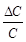
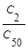
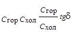
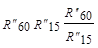
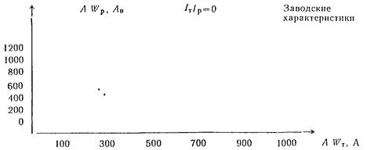
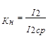

ВЕДОМСТВЕННЫЕ СТРОИТЕЛЬНЫЕ НОРМЫ
НОРМЫ
ПО ПРОИЗВОДСТВУ И ПРИЕМКЕ
СТРОИТЕЛЬНЫХ И МОНТАЖНЫХ РАБОТ
ПРИ ЭЛЕКТРИФИКАЦИИ ЖЕЛЕЗНЫХ ДОРОГ
(УСТРОЙСТВА ЭЛЕКТРОСНАБЖЕНИЯ)
ВСН 12-92
МОСКВА 1992
Разработаны Всесоюзным ордена Октябрьской революции научно-исследовательским институтом транспортного строительства (ЦНИИСом) - канд. техн. наук Л.Ф. Белов, (разд. 4), инженер Ю.И. Трубицын (разд. 5), канд. техн. наук С.X. Дарчиев, инженер В.И. Ступаков (разд. 6, 7), д-р техн. наук В.П. Шурыгин (разд. 8).
Внесены Всесоюзным ордена Октябрьской революции научно-исследовательским институтом транспортного строительства.
Подготовлены к утверждению отделом научно-технического развития Государственной корпорации «Трансстрой».
С введением в действие «Норм по производству и приемке строительных и монтажных работ при электрификации железных дорог (устройства электроснабжения) ВСН 12-92 утрачивает силу «Инструкция по производству и приемке строительных и монтажных работ при электрификации железных дорог (устройства электроснабжения) ВСН 12-82.
Согласованы Министерством путей сообщения.
Настоящие нормы разработаны на основе и в развитие III части «Строительных норм и правил», «Правил устройства электроустановок», в соответствии с действующими ГОСТами, «Правилами технической эксплуатации железных дорог СССР», «Правилами технического обслуживания и ремонта контактной сети электрифицированных железных дорог» и другими действующими нормативными документами.
|
Государственная корпорация «Трансстрой» |
Ведомственные строительные нормы |
ВСН 12-92 Государственная корпорация «Трансстрой» |
|
|
Нормы по производству и приемке строительных и монтажных работ при электрификации железных дорог (устройства электроснабжения) |
|||
|
Взамен ВСН 12-82 |
|
1.1. Настоящие Нормы распространяются на все виды строительных и монтажных работ, выполняемых при сооружении устройств электроснабжения (контактной сети и тяговых подстанций), автотрансформаторных пунктов питания, постов секционирования, пунктов параллельного соединения, пунктов группировки станций стыкования (кабельные линии, низковольтные сети и др.), и обязательны для организации, проектирующих, изготавливающих конструкции и изделия, сооружающих и принимающих в эксплуатацию электрифицируемые железные дороги.
Настоящие Нормы распространяются также на строительные и монтажные работы устройств электроснабжения, выполняемые на неэлектрифицированных железных дорогах.
1.2. Строительные и монтажные работы при сооружении устройств электроснабжения должны производиться с соблюдением требований строительных норм и правил. Правил устройства электроустановок (ПУЭ), Правил технического обслуживания и ремонта контактной сети электрифицированных железных дорог, Инструкции по заземлению устройств электроснабжения на электрифицированных железных дорогах, норм по технологии работ при сооружении контактной сети и тяговых подстанций, Правил технической эксплуатации железных дорог СССР (ПТЭ), Инструкции по сигнализации на железных дорогах, Инструкции по обеспечению безопасности движения поездов при производстве путевых работ, действующих правил техники безопасности и производственной санитарии, правил противопожарной охраны при строительных и монтажных работах и настоящих Норм.
|
Внесены Всесоюзным ордена Октябрьской революции научно-исследовательским институтом транспортного строительства (ЦНИИСом) |
Утверждены Государственной корпорацией «Трансстрой» № МО-66 от 23.03.92 |
Срок введения в действие - |
1.3. Применяемые при сооружении контактной сети и тяговых подстанций материалы, детали и конструкции должны удовлетворять нормативу надежности и установленному сроку службы (долговечности), требованиям соответствующих ГОСТов и технических условий, строительных норм и правил, а также соответствовать проектам.
1.4. Изменения в рабочих чертежах, не вызывающие ухудшения качества строительства, допускается вносить только по взаимному согласованию между дорогой (заказчиком), проектной организацией и подрядчиком (строительной или монтажной организацией).
1.5. Сооружение устройств электроснабжения электрифицируемых железных дорог следует осуществлять с широким применением сборных железобетонных конструкций, узлов и деталей заводского изготовления, при максимальной механизации строительных и монтажных работ.
1.6. Работы по электрификации железных дорог должны осуществляться комплексно с тем, чтобы к моменту сдачи в эксплуатацию электрифицируемого участка были закончены строительство и монтаж и наладка всех сооружений (тяговых подстанций, контактной сети, постов секционирования, линий электроснабжения, локомотивного хозяйства, пассажирских устройств, СЦБ, связи и очистных сооружений) в объемах пускового комплекса.
1.7. До начала электрификации железнодорожных участков должны быть закончены работы по капитальному ремонту пути, земляное полотно и верхнее строение пути до начала строительства контактной сети должны быть приведены в состояние, соответствующее действующим нормативным документам.
2.1. Контактная сеть должна сооружаться по утвержденным проектам, разработанным в соответствии с государственными стандартами, ПТЭ железных дорог, строительными нормами и правилами, Нормами проектирования конструкции контактной сети, Правилами технического обслуживания и ремонта контактной сети электрифицированных железных дорог, Нормами технологического проектирования электрификации железных дорог и настоящими Нормами.
2.2. Руководители работ, непосредственно осуществляющие сооружение контактной сети (старшие прорабы, производители работ, мастера, бригадиры), а также все работники, выполняющие ее монтаж, должны иметь удостоверение о сдаче экзаменов по утвержденным МПС Правилам технической эксплуатации железных дорог, Инструкции по сигнализации и Инструкции по движению поездов и маневровой работе на железных дорогах, а также по соответствующим разделам настоящих Норм и Правил техники безопасности, дающее право производства работ на железнодорожных путях.
2.3. Работы по сооружению контактной сети могут быть начаты только при наличии утвержденной проектно-сметной документации, включая проект производства работ.
Порядок обеспечения проектно-сметной документацией, а также состав и содержание проектов организации строительства и производства работ по сооружению контактной сети определяются правилами, изложенными в главах СНиП 3.01.01-85, СНиП III-41-76 и СНиП 3.05.06-85, и настоящими Нормами.
2.4. Сроки выполнения строительных и монтажных работ по сооружению контактной сети должны быть увязаны взаимно со сроками окончания электрификации участка. При этом указывается время выполнения строительных работ и подготовка сдачи под монтаж опор контактной сети на перегонах и станциях и сроки проведения монтажных работ.
2.5. Для производства строительных и монтажных работ по сооружению контактной сети с занятием железнодорожного пути на перегонах и станциях следует предусматривать перерывы в движении поездов - «окна» оптимальной продолжительности. Продолжительность «окон» на двухпутных участках должна составлять не менее 2 часов (по каждому пути раздельно в течение рабочего дня со смещением во времени для производства маневров установочного или монтажного поезда), а на однопутных участках - продолжительностью не менее 3 часов.
Для производства работ на станционных путях, кроме главных, (а также стрелочных горловинах, примыкающих к главным путям) должны предоставляться «окна» продолжительностью не менее 4 часов (с учетом необходимости пропуска транзитных поездов).
При электрификации вновь сооружаемой железной дороги или второго пути, сданных во временную эксплуатацию, продолжительность «окон» должна быть не менее 4 часов. «Окна» должны предоставляться в светлое время суток.
2.6. До начала строительства контактной сети на данном перегоне или станции должны быть закончены переносы линий связи, электропередачи и других сооружений, препятствующих производству строительных работ по сооружению контактной сети, а также переустройству станционных путей (в плане и профиле).
При электрификации вновь сооружаемой железной дороги или второго пути необходимо отрихтовать путь в проектное положение.
2.7. Проекты контактной сети должны составляться с учетом производства строительных и монтажных работ индустриальным методом с использованием конструкций и узлов максимальной заводской готовности и возможности удобства сборки их на месте монтажа.
2.8. До начала работ по сооружению контактной сети необходимо создать запас материальных и технических ресурсов, узлов, конструкций, полуфабрикатов и т.п. в таких объемах, которые обеспечивали бы поточное производство работ с применением комплексной механизации.
Обеспечение строительства материально-техническими ресурсами должно осуществляться по календарному графику, увязанному с графиком производства строительных и монтажных работ.
3.1.1. Строительные работы по сооружению контактной сети должны выполняться комплексно с учетом обеспечения сдачи опор контактной сети под монтаж в соответствии с утвержденным графиком.
3.1.2. Сооружение опор контактной сети может осуществляться следующими основными способами:
разработка котлованов (или погружение свайных фундаментов), перевозка и установка oпop - комплектом механизмов, работающих «с пути»;
рытье котлованов, развозка и установка опор - механизмами, работающими «с поля».
Правильная организация работ должна предусматривать рациональное совмещение способа производства работ «с пути» с сооружением опор «с поля» (в местах, где это возможно по местным условиям).
3.1.3. На основании осмотра участка до начала сооружения фундаментов и установки опор комиссией из представителей заказчика, строительного треста и проектной организации должны составляться ведомости распределения опор по способам производства работ «с поля» и «с пути», а также объемов работ по устройству дорог и подъездов.
При этом объемы работ, выполняемых «с поля» с одной стороны пути, должны составлять не менее одной сменной нормы комплекта машин.
3.1.4. В разделе ППР на строительные работы по сооружению контактной сети должны быть:
ведомость фундаментов опор, анкеров и других конструкций (лежней, опорных плит, жестких поперечин и др.) с выделением участков установки опор «с пути» и «с поля» (по номерам опор);
график поступления фундаментов и опор с производственных предприятий строительства и заводов-поставщиков;
график работы комплекта механизмов;
график предоставления «окон» в движении поездов на летний и зимний период движения;
размещение и планы линейных (комплектовочных баз).
3.1.5. Последовательность работы по сооружению опор контактной сети должна учитывать преимущественную возможность сдачи анкерных участков контактной сети под монтаж.
3.1.6. Разработка котлованов и установка опорных конструкций контактной сети должны производиться ритмично, преимущественно в летний период в соответствии с утвержденным графиком сдачи под монтаж контактной сети.
3.1.7. По согласованию со строительной организацией заводы-изготовители должны отгружать строительные конструкции (фундаменты, опоры, жесткие поперечины и т.п.) в соответствии со спецификациями, составляемыми строительной организацией для каждого перегона и раздельного пункта.
3.1.8. Прибывшие с заводов-изготовителей строительные конструкции следует выгружать на комплектовочных базах. При этом производится проверка качества прибывающих с заводов конструкций.
3.2.1. Поступающие на объекты строительства элементы опорных конструкций контактной сети должны подвергаться входному контролю, осуществляемому строительной организацией с участием представителя заказчика.
3.2.2. Элементы опорных конструкций контактной сети должны изготовляться на заводах или полигонах и отгружаться в готовом виде на объекты строительства.
3.2.3. Отгружаемые предприятиями-изготовителями элементы опорных конструкций контактной сети должны удовлетворять по несущей способности, размерам и качеству материалов проекту, ГОСТам, а при отсутствии их - утвержденным в установленном порядке проектам и техническим условиям на изготовление и приемку.
3.2.4. Отпускная прочность бетонных и железобетонных элементов контактной сети (на день их отгрузки с завода) устанавливается проектом в зависимости от типа и назначения конструкций, технологии изготовления и должна быть не менее 70% проектной прочности.
3.2.5. Применяемые строительные материалы, сборные конструкции и изделия должны удовлетворять требованиям соответствующих ГОСТов - или Технических условий, а также Глав СНиП и настоящих Норм. Соответствие этим требованиям должно подтверждаться документами (сертификатами, паспортами, актами и т.п.), направляемыми на строительство вместе с материалами и конструкциями. Для деталей и изделий заводского изготовления (кроме опор и жестких поперечин) сертификаты высылаются по требованию заказчика.
3.2.6. Не допускается применение химических ускорителей твердения бетона (хлористые соли, минеральные кислоты) при изготовлении бетонных и железобетонных конструкций контактной сети.
3.2.7. Каждая конструкция, отгружаемая с завода, должна иметь маркировку, заводской номер или заводское клеймо.
3.2.8. Контроль качества опорных конструкций контактной сети и их маркировка производится предприятием-изготовителем в соответствии с утвержденными для данного вида изделий проектами, ГОСТами или Техническими условиями.
3.2.9. Проверка внешнего вида, качества поверхности, а также посадочных размеров, определяющих сопряжение данного элемента с другими, производится для каждой конструкции.
3.2.10. Ответственность за качество отгружаемых потребителю элементов и конструкций, упаковку и погрузку на подвижной состав, а также за правильность маркировки лежит на предприятии-изготовителе.
При повреждении конструкций в пути и несоответствии их качества предъявляемым требованиям получатель при выгрузке должен составлять коммерческий акт и направлять его заводу-изготовителю.
3.2.11. Каждый вагон, сцеп или автомашина с погруженными изделиями должны быть снабжены сертификатами, в которых указывается:
а) номер вагона, сцепа или автомашины, дата и время погрузки;
б) типы, марки и заводские номера отгруженных изделий;
в) номера заводских партий и номера заводских паспортов на изделия данных партий.
Примечание. При погрузке изделий в вагоны к каждому сертификату прилагаются копии паспортов. При погрузке в автомашины копии паспортов посылаются с первой отправкой, но не реже одного раза в рабочую смену.
3.2.12. Потребитель может требовать проведения предприятием-изготовителем дополнительных испытаний одного или нескольких образцов изделий. При этом, если результаты подтвердят соответствие качества изделия требованиям проекта и технических условий на изготовление, потребитель обязан возместить заводу-изготовителю стоимость поврежденных при испытаниях конструкций и расходы по испытанию. Если испытания покажут несоответствие качества изделий требованиям проекта, расходы по испытаниям несет предприятие-изготовитель.
3.2.13. Прибывшие с заводов-изготовителей фундаменты, опоры или блоки жестких поперечин должны приниматься в соответствии с утвержденными чертежами на их изготовление, причем на каждую партию завод-изготовитель должен представлять паспорт установленной формы.
3.2.14. За каждую партию принимается не более 200 опор или фундаментов одного типа, изготовленных в течение не более 15 дней из материалов одного вида и сорта при одинаковых способах и условиях производства.
3.2.15. Паспорт на партию фундаментов, опор или блоков жестких поперечин должен содержать следующие данные:
наименование и адрес предприятия-изготовителя;
порядковый номер партии (он же номер паспорта) и дату заполнения;
наименование и марку опорной конструкции, номер рабочего чертежа;
марку стали, использованной для стальных или железобетонных конструкций, номер сертификата или лабораторный номер контрольного испытания образца стали;
для железобетонных фундаментов и опор - проектную и отпускную прочность бетона и дату бетонирования;
для стальных опор или жестких поперечин - номера дипломов и фамилии сварщиков;
номера контрольных испытаний образцов опор на изгиб;
нагрузки, отвечающие потере несущей способности и образованию первых трещин (для предварительно напряженных опор); указываются также даты изготовления и испытания и заводские номера испытанных опор;
заводские номера фундаментов и опор, вошедших в данную партию;
сведения о том, что фундаменты, опоры или жесткие поперечины данной партии отвечают требованиям проекта и технических условий на их изготовление;
данные о виде окраски стальных опор и жестких поперечин и защитного покрытия фундаментной части.
Паспорт подписывается директором или главным инженером предприятия-изготовителя и лицами, отвечающими внутри предприятия за качество изделий.
3.2.16. Принимаемые к установке железобетонные опоры должны иметь четкое обозначение условного обреза фундамента и на высоте 1 м от него - марку, а также положение центра тяжести.
3.2.17. Маркировка железобетонных фундаментов и опор должна соответствовать типовому проекту и содержать следующие данные:
условное обозначение (марку) элемента, установленное в рабочих чертежах конструкций. Марка опоры должна содержать условные обозначения типа конструкций и армирования, нормативной величины изгибающего момента и длины опоры;
дату бетонирования и заводской номер, порядковый номер изделия;
наименование завода-изготовителя.
Условный обрез фундамента и марку опоры рекомендуется обозначать в виде рельефных линий и литер. Применение водорастворимых красок не допускается.
3.2.18. Изготовленные стальные опоры должны иметь маркировку в соответствии с рабочими чертежами.
Маркировка стальных опор должна содержать следующие данные:
условное обозначение опоры, установленной в рабочих чертежах, и обозначение типа конструкции - значение нормативного изгибающего момента и длины опоры, например, «МП 65/15-60»;
личное клеймо сварщика, наименование завода-изготовителя и заводской порядковый номер изделия.
Маркировка должна быть выполнена наплавным швом или выбита на металлической пластинке, приваренной в нижней части конструкции.
3.2.19. Контроль качества сварных швов должен осуществляться в соответствии с требованиями соответствующей главы СНиП по производству и приемке работ (металлические конструкции).
Сварка стальных конструкций должна производиться электросварщиками, имеющими удостоверения, устанавливающие их квалификацию и характер работы, к которым электросварщики допущены.
3.2.20. Строительная организация, осуществляющая установку, должна производить приемку прибывающих с завода железобетонных фундаментов и опор, проверяя:
соответствие заводских номеров и маркировки данным, указанным в сертификате и в паспорте;
внешний вид и посадочные размеры;
геометрические размеры, (длину, поперечное сечение и толщину стенки опор), включая проверку расположения и состояния закладных деталей и метки условного обреза фундамента у опор;
наличие изоляционных втулок в отверстиях для закладных деталей опор, а на участках постоянного тока - наличие изолирующих элементов между элементами металлической закладной детали и бетоном опоры, а также величину электрического сопротивления между закладными деталями и арматурой опор (приложение 1);
отсутствие сколов защитного бетонного слоя и оголенной арматуры, качество предусмотренных проектом защитных покрытий;
соответствие толщины защитного слоя бетона каждой опоры проектной в соответствии с ГОСТ 19330-90 (измеряется прибором ИЗС-10Н).
3.2.21. Геометрические размеры фундаментов должны соответствовать проекту, а допуски - приведенным в главе СНиП по сооружению бетонных и железобетонных монолитных конструкций следующим дополнительным требованиям, мм:
по длине ........... ±20
по размеру отверстия стаканного фундамента …... +5; -3
по размеру верхнего сечения .....…………………. +10; -5
по расстоянию между осями анкерных болтов …... ±5
по длине анкерного болта (от поверхности бетона) + 10
По качеству поверхности допускается на 1 м2 поверхности не более трех незаделанных раковин и повреждений ребер глубиной не более 10 мм и длиной не более 20 мм (без оголения арматуры).
3.2.22. Отклонения геометрических размеров железобетонных опор должны быть не более, мм:
по длине опор .............……................................................................................... ±25
поперечного сечения (по наружному диаметру) ………………………………. ±5
по толщине стенки (среднее по торцам стойки) …………………………….. +10; -5
по расстоянию между соседними отверстиями для закладных деталей ............ ±2
Отгрузка с заводов предварительно напряженных железобетонных опор при наличии трещин не допускается.
3.2.23. После освидетельствования каждой партии должен быть составлен акт проверки качества фундаментов и опор, прибывших с завода на электрифицируемый участок (приложение 2). При этом подлежат отбраковке предварительно напряженные опоры, имеющие следующие дефекты:
поперечные трещины;
больше трех продольных трещин в опоре или двух продольных трещин в одном сечении при их длине более 2 м и ширине более 0,1 мм или одну продольную трещину длиной более 2 м и шириной более 0,1 мм;
сколы бетона с обнаженной продольной арматурой;
выбоины или сколы бетона глубиной более 3 мм, размером более 10х10 см при их числе более двух на опору;
отсутствие изолирующих втулок в отверстиях для закладных деталей.
Опоры с перечисленными дефектами устанавливать запрещается.
продольные трещины длиной до 2 м раскрытием более 0,1 мм при их числе не более двух в одном сечении или более трех в опоре;
раковины, выбоины или сколы бетона без обнажения арматуры размером менее 10Х10 см при их числе не более двух на одну опору;
пористый бетон по линии соединения полуформ;
отсутствие изолирующих элементов между стальными шайбами и бетоном опор;
повреждение защитного покрытия фундаментной части;
сопротивление между закладными деталями и арматурой опор, предназначенных для установки на участках постоянного тока, менее 10000 Ом;
несоответствие проекту состояния и расположения закладных деталей.
Акт проверки качества прибывших на электрифицируемый участок опор должен составляться представителем строительной организации с вызовом при необходимости представителей завода-изготовителя и заказчика.
3.2.25. Перечисленные в п. 3.2.24 дефекты должны быть устранены на комплектовочной базе с оформлением акта на скрытые работы (приложение 3).
Заделку повреждений защитного слоя, раковин, выбоин, пористых швов по стыку полуформ и продольных трещин необходимо осуществлять полимерцементным раствором в соответствии с Указаниями по техническому обслуживанию и ремонту железобетонных опорных конструкций контактной сети. Эти работы должны выполняться при положительной температуре наружного воздуха и самой опоры. Допускается применение и других растворов, обеспечивающих качество не хуже полимерцементного.
3.2.26. Фундаментная часть опоры, а также железобетонные анкеры для оттяжек должны иметь защитное (антикоррозионное) покрытие в соответствии с проектом. Наличие защитного покрытия фундаментной части фиксируется в актах на скрытые работы.
3.2.27. Конические пустотелые железобетонные опоры должны иметь заделанные оголовки.
3.2.28. Железобетонные консольные опоры, прибывающие с завода, должны иметь предусмотренные проектом закладные детали для крепления консолей и защитное покрытие.
3.2.29. Стальные опоры контактной сети и блоки жестких поперечин, поставляемые заводами, должны быть огрунтованы и покрашены.
Стальные конструкции, устанавливаемые в агрессивных средах, должны иметь защитное покрытие в соответствии с проектом. Характеристики агрессивности среды и материалы защитных покрытий следует принимать в соответствии со СНиП 2.03.11-85.
3.2.30. Стальные опоры и жесткие поперечины не должны иметь погнутых поясов и раскосов, лопнувших швов и других дефектов. Деформированные элементы конструкций должны быть выправлены строительной организацией и при необходимости с участием завода-изготовителя и повторно освидетельствованы совместно с представителем заказчика.
3.2.31. Отклонения в размерах стальных опор и жестких поперечин не должны превышать:
расстояния от нижней поверхности башмака до группы отверстий для крепления ригелей, тяг, консолей, оттяжек, поперечных тросов и т.п. ± 15 мм;
расстояния между любыми группами взаимосвязанных отверстий ±2 мм;
от прямолинейности 1/1000 длины конструкции;
местного искривления при проверке метровой рейкой ± 1 мм;
размеры поперечного сечения ±5 мм.
3.3.1. Погрузку конструкций контактной сети на железнодорожный подвижной состав и крепление их при перевозке в поездах МПС с завода-изготовителя на линейные комплектовочные базы электрифицируемого участка следует осуществлять в соответствии с действующими «Техническими условиями погрузки, крепления грузов и использования вагонов» и специальными инструкциями МПС.
Перевозку железобетонных опор установочными поездами и безрельсовым транспортом в пределах электрифицируемого участка от линейных комплектовочных баз к месту установки следует осуществлять в соответствии с настоящими Нормами.
3.3.2. Прибывающие с заводов-изготовителей на комплектовочные базы конструкции необходимо располагать по типам и укладывать в отдельные штабели. Штабели по отношению к железнодорожному пути должны располагаться с соблюдением габаритов приближения строений. В штабелях конструкции должны быть уложены по горизонтальным рядам, между которыми устанавливают 2 деревянные прокладки, укладываемые на расстоянии 0,2 длины конструкции от ее торцов и располагаемых в одной вертикальной плоскости. Предельная высота штабеля для железобетонных фундаментов и опор - 5 рядов. При складировании конструкций необходимо предусматривать меры по предотвращению повреждений выступающих закладных деталей в железобетонных опорах, анкерных болтов и железобетонных фундаментах и металлических пружин в анкерах.
Между штабелями должны быть оставлены проезды для кранов и транспортных средств.
Железобетонные блоки ступенчатых фундаментов (типа ФР) следует складировать в вертикальном положении (подошвой вниз).
3.3.3. Железобетонные и металлические конструкции контактной сети необходимо разгружать кранами с использованием специальных грузозахватных приспособлений или стропов. Строповку опор следует производить в двух точках, расположенных на расстоянии 0,3 длины опоры от ее центра тяжести. Запрещаются рывки и удары во время подъема, разворота и опускания конструкций.
3.3.4. При погрузке опор на комплектовочной базе для перевозки в составе установочного поезда следует, как правило, использовать полувагоны.
Если для перевозки опор используется платформа (на которой опоры укладываются более чем в одни ряд), то она должна быть оборудована стойками, установленными и укрепленными клиньями в стоечных гнездах.
3.3.5. Каждая конструкция, предназначенная к погрузке на транспортные средства с комплектовочной базы к месту ее установки должна быть осмотрена с целью проверки ее качества в соответствии с требованиями настоящих Норм.
3.3.6. При погрузке на платформы или полувагоны конструкций на комплектовочной базе для перевозки в составе установочного поезда рекомендуется:
а) свайные железобетонные фундаменты и анкеры опор грузить в горизонтальном положении; при погрузке в несколько рядов между горизонтальными рядами должны быть уложены деревянные прокладки толщиной не менее 40 мм, располагаемые друг над другом на расстоянии 0,2 м от торца конструкций; в продольном направлении фундаменты и анкеры укладывают так, чтобы выступающие анкерные болты или металлические проушины не повреждались и были обращены в одну сторону;
б) ступенчатые фундаменты (типа ФР) устанавливать в вертикальном положении при соблюдении габарита подвижного состава, подошвой вниз непосредственно на пол платформы или полувагона;
в) железобетонные центрифугированные опоры укладывать по пять опор в каждом горизонтальном ряду с укладкой между рядами двух поперечных прокладок из бруса толщиной не менее 100 мм с вырубками, располагая их в отдельных рядах одна над другой на расстоянии 0,15-0,2 от торцов опор;
г) стальные решетчатые опоры и ригели жестких поперечин укладывать в один или несколько рядов с прокладкой из досок толщиной 25 мм;
д) последовательность погрузки конструкций в полувагон или на платформу установочного поезда по типам и размерам должна быть обратной последовательности их установки.
3.3.7. Железобетонные опоры безрельсовым транспортом рекомендуется развозить тракторами на специальных опоровозах или двухосных прицепах. Развозка опор на автомобилях с прицепом допускается только при наличии дорог с твердым покрытием, проходящих вдоль железнодорожного пути.
3.3.8. Автомобильные и тракторные прицепы для развозки железобетонных опор должны быть оборудованы специальными поворотными брусьями (турникетами) с гнездами для опор, покрытыми листовой резиной, и соответствующим креплением.
Погруженные на прицеп железобетонные опоры должны опираться в двух точках, находящихся на расстоянии 0,2 длины опоры от ее торцов. Запрещается при разгрузке сбрасывать опоры на землю.
3.4.1. Разработку котлованов под опоры контактной сети разрешается начинать только после разбивки мест установки опор в соответствии с проектом, что должно быть оформлено актом (приложение 4). Положение опор должно быть зафиксировано на наружной стороне рельса с указанием порядкового номера, типа опоры и габарита ее установки.
3.4.2. При разработке котлованов в местах расположения подземных коммуникаций должны быть приняты меры против их повреждения. Разработку котлованов в указанных местах необходимо производить под наблюдением представителей организаций, эксплуатирующих эти коммуникации. Руководитель работ не позже чем за 2 суток обязан поставить в известность заинтересованные организации о месте и времени этих работ, а организации, эксплуатирующие коммуникации, должны обеспечить выдачу разрешений на производство земляных работ и установку временных сигналов-указателей направления подземных коммуникаций на участке разработки котлована и выделить своего представителя.
3.4.4. Разработку котлованов под фундаменты и опоры контактной сети необходимо производить механизированным способом - специальными котлованокопателями, буровыми машинами и экскаваторами с применением взрывов, а в труднодоступных местах - с помощью средств малой механизации.
В стесненных условиях на станциях, где близко расположены подземные коммуникации, разработка котлованов допускается вручную с принятием необходимых мер по обеспечению техники безопасности работающих и сохранности подземных сооружений.
3.4.5. Размеры котлована в плане должны обеспечивать свободную установку фундамента или опоры с лежнями или опорными плитами в проектное положение с учетом возможности уплотнения грунта в пазухах; по глубине котлован должен соответствовать проектным размерам с допуском ±100 мм, а по расстоянию от оси пути должен обеспечивать возможность установки фундаментов или опор с допуском не более +150 мм.
На внутренней стороне кривых радиусом менее 1000 м котлован следует располагать на таком расстоянии от оси пути, чтобы обеспечить установку опоры или фундамента в проектное положение вплотную к полевой стороне стенки котлована.
3.4.8. Грунт, вынутый из котлована, необходимо располагать с соблюдением габаритов приближения строений. Засыпка кюветов грунтом запрещается.
3.4.9. Разработка котлованов под консольные опоры без крепления допускается:
а) при установке фундаментов или опор непосредственно за механизированной разработкой котлованов;
б) в выемках и нулевых местах с устойчивыми грунтами;
при расстоянии от оси пути до ближайшей грани опоры не менее 4,9 м;
в) при глубине промерзшего грунта не менее 0,8 м;
г) в сухих связных грунтах для консольных опор с приближением к оси пути не менее 3,1 м.
3.4.10. При механизированной разработке котлованов следует, как правило, устанавливать опоры или фундаменты вслед за рытьем котлована в течение одного «окна». В случаях необходимости крепление котлованов с вертикальными стенками, разрабатываемых землеройными машинами, должно осуществляться инвентарными щитами, опускаемыми и раскрепляемыми сверху без спуска рабочих в котлован.
3.4.11. Котлованы под опоры контактной сети необходимо разрабатывать с соблюдением безопасности движения поездов. Для обеспечения особой бдительности при следовании поездов по перегону, где производится рытье котлованов «с поля», руководитель работ обязан через администрацию дистанции пути обеспечивать выдачу локомотивным и поездным бригадам письменного предупреждения. Место работ должно быть ограждено переносными сигналами «С» (свисток).
При появлении деформаций, вызывающих нарушение устойчивости земляного полотна, руководитель работ обязан обеспечить соответствующее крепление его и заявить администрации дистанции пути о необходимости ограничения скорости движения поездов или установления пропуска поездов с проводником. Руководитель работ обязан иметь при себе расписание движения поездов и набор сигналов, необходимых для остановки поезда или снижения его скорости.
В необходимых случаях для наблюдения в нерабочее время за отдельными отрытыми котлованами производитель работ обязан назначить проинструктированного рабочего, сдавшего испытания по правилам технической эксплуатации железных дорог и инструкции по сигнализации в соответствующем объеме. Об отрытых котлованах, за которыми установлено круглосуточное наблюдение, должен быть извещен дорожный мастер.
3.4.12. Котлованы на станциях и станционных пунктах в местах скопления людей и в населенных пунктах должны быть закрыты щитами или ограждены с соблюдением габарита приближения строений.
3.4.13. Разработка котлованов в зимнее время в мерзлых, слабых, скальных и крупнообломочных грунтах, должна производиться с учетом требований, изложенных в настоящих Нормах.
3.5.2. В теплое время года засыпку пазух котлованов рекомендуется производить местным талым грунтом с соблюдением требований, приведенных в п. 3.5.1.
3.5.3. Крепление стенок котлованов следует снимать в соответствии с проектом по мере засыпки грунтом. В сложных условиях (при неустойчивых обводненных грунтах, при откосах насыпей круче 1:1,5 и т.п.), когда крепление котлована выполняется по индивидуальным проектам, вопрос об удалении крепления решается строительной организацией по согласованию с заказчиком и проектной организацией (в порядке проведения авторского надзора).
3.5.4. Пазухи котлованов, в которые установлены фундаменты или железобетонные опоры, необходимо засыпать в день их установки.
Засыпку раздельных фундаментов под опоры гибких поперечин следует производить механизированным способом с уплотнением грунта в соответствии с требованиями ВСН 116-90. Во избежание смещения блоков фундаментов до начала засыпки на анкерные болты необходимо надевать специальные шаблоны, фиксирующие положение болтов.
3.5.5. Излишний грунт, оставшийся после засыпки пазух котлована, должен быть спланирован и плотно утрамбован. Откосы выемок, кюветы и земляное полотно, нарушенные при разработке котлованов под опоры контактной сети, должны быть приведены в исправное состояние.
3.5.6. При сооружении присыпки насыпи вокруг фундаментов необходимо выполнять послойное уплотнение грунта;
плотность грунта присыпки должна соответствовать плотности насыпи.
3.6.1. Железобетонные фундаменты опор контактной сети и анкеры должны применяться, как правило, изготовленные на заводах или полигонах.
Монолитные бетонные фундаменты допускается применять в исключительных случаях при соответствующем технико-экономическом обосновании. Отгружаемые с заводов фундаменты должны иметь предусмотренное проектом защитное покрытие.
3.6.2. Фундаменты и анкеры (блочные бетонные и железобетонные, свайные железобетонные, монолитные железобетонные и бетонные) должны изготовляться из бетона марки не менее 300 и удовлетворять требованиям проекта и соответствующих глав СНиП.
Закапываемые фундаменты должны иметь защитное покрытие, выполненное в соответствии с проектом.
3.6.3. До начала установки фундамента или нераздельной опоры должно быть выполнено освидетельствование котлована с проверкой его глубины, размеров в плане и ориентировки относительно оси пути.
3.6.4. Установку фундаментов с пути в «окно» следует совмещать по времени с работой землеройных машин по разработке последующих котлованов.
3.6.5. Блочные закапываемые фундаменты под опоры гибких поперечин рекомендуется применять только в случаях невозможности сооружения свайных фундаментов со сборными ростверками, (сухие связные грунты, грунты с большим количеством включений, наличие сложных подземных коммуникаций на станциях и т.п.).
3.6.6. Погружение в грунт односвайных железобетонных фундаментов под опоры и анкеров должно производиться механизированным способом с использованием сваебойных агрегатов под руководством строительного мастера. О времени и месте производства работ заранее должны быть предупреждены дистанции пути, сигнализации и связи и участок энергоснабжения, в соответствии с требованиями, п. 3.4.3.
На железнодорожных насыпях, расположенных на слабых основаниях (на болотах, марях, торфяных, илистых и других слабых грунтах), а также в выемках и нулевых местах с водонасыщенными пластичными грунтами, погружение односвайных фундаментов и анкеров допускается производить с учетом требований раздела 3.11 настоящих Норм.
Погружение односвайных фундаментов и анкеров в песчаные и плотные грунты рекомендуется осуществлять с применением подмыва. При этом для предохранения растекания воды и пульпы необходимо котлованокопателем образовать приямки на глубину 1,0-1,4 м.
При небольших объемах работ, а также в тяжелых глинистых грунтах, стаканные фундаменты и анкеры допускается устанавливать в котлованы, разработанные механизированным способом (многоковшовыми котлованокопателями).
3.6.7. До начала работ по сооружению блочных или сборных свайных фундаментов под опоры гибких поперечин необходимо совместно с начальником станции составить график производства работ с указанием очередности их выполнения, порядка и продолжительности занятия отдельных станционных путей.
3.6.8. Сваи сборных свайных фундаментов под опоры гибких поперечин должны быть погружены на проектную глубину. Для уточнения расчетной длины свай в случаях, предусмотренных проектом, перед сооружением свайных фундаментов на станции производится погружение пробных свай с последующим их испытанием. Количество пробных свай и место их погружения должны быть указаны в проекте.
3.6.9. При погружении свай сборных свайных фундаментов необходимо вести журнал забивки свай, который является основным исполнительным документом (в соответствии со СНиП III-9-74).
3.6.10. Для обеспечения точного погружения свай на проектную глубину, уменьшения динамические воздействий на сваю, более точного выявления геологических данных в местах сооружения свайного фундамента, до забивки свай рекомендуется предварительно устраивать в грунте направляющие скважины. Площадь поперечного сечения скважин рекомендуется принимать равной 30-50% площади поперечного сечения сваи.
Места, где образовывают направляющие скважины, определяют согласно требованиям главы СНиП по сооружению контактных сетей электрифицированного транспорта.
3.7.1. Сооружение опор «с пути» следует осуществлять комплектом машин (установочный поезд, котлованокопатели) с выполнением работ в «окна» при соблюдении действующих правил и инструкций по обеспечению безопасности движения поездов.
Работы по установке опор должны производиться под постоянным наблюдением производителя работ или мастера.
3.7.2. Каждый рабочий поезд, или комплект механизмов, выезжающий на перегон для работы «в окно», должен быть обеспечен переносным телефоном или радиостанцией (переносной или установленной на локомотиве, выделяемом под установочный поезд).
На участках, оборудованных автоблокировкой, руководители работ, выполняющие работы на перегоне в «окна», поддерживают связь с дежурными по станции (ограничивающими перегон) при помощи телефонных аппаратов, установленных в релейных шкафах у светофоров; для этого дистанция сигнализации и связи выдает каждому руководителю работ ключи от телефонных аппаратов, находящихся на блок-участках.
Руководитель работ с перегона передает телефонограмму дежурному по станции о времени и месте окончания работ на перегоне и затем все строительные механизмы, работающие «с пути», отправляются на станцию прибытия.
3.7.3. Сооружение опор комплектом механизмов, работающих «с пути» в «окно», следует осуществлять таким образом, чтобы вслед за механизированной разработкой котлованов в это же «окно» проводилась установка опор. Разрыв во времени между окончанием разработки котлованов на задельном «окне» и установкой в них опор должен быть не более суток. Нельзя оставлять отрытыми до следующего дня котлованы в неустойчивых обводненных песчаных и плывунных грунтах.
3.7.4. Сооружение опор контактной сети «с поля» следует осуществлять комплектом машин, включающим бульдозер, котлованокопатель, краны на тракторном ходу и транспортные средства для развозки опор. Установку опор «с поля» рекомендуется совмещать с разгрузкой их с транспортных средств.
3.7.5. Опору следует устанавливать при помощи таких стропов или захватов, которые, позволяют поднять ее, перевести в вертикальное положение, развернуть относительно вертикальной оси, установить в котлован и снять стропы без подъема рабочих на опору.
Применяемые стропы или захваты должны обеспечивать безопасность работы и не допускать повреждений опоры.
3.7.7. После установки железобетонной опоры в котлован и выверки правильности расстояния ее от оси пути опору следует закрепить, засыпав пазухи котлована на 1/3 глубины (но не менее 1 м) и после этого произвести расстроповку.
Одновременно с засыпкой фундаментной части должна производиться регулировка опоры так, чтобы ее вертикальная ось была наклонена в летнее время на 1,5-2%, а зимой - на 2-3% в сторону, противоположную действию основных нагрузок. Наклон опоры, устанавливаемой с внешней стороны кривой и на прямом участке пути, следует делать в сторону поля, а на внутренней стороне кривой устанавливать вертикально.
3.7.8. Окончательную вертикальную регулировку и засыпку фундаментной части нераздельных опор следует производить в день их установки (после «окна»); до полной засыпки котлована, для обеспечения безопасности движения поездов, установленные железобетонные опоры должны находиться под наблюдением строительного мастера или бригадира.
3.7.9. Опорные плиты и лежни следует устанавливать в соответствии с рабочими чертежами и планом контактной сети. Не разрешается засыпка котлованов до установки лежней, предусмотренных проектом. Лежни должны плотно прилегать к опоре.
3.7.11. Опоры контактной сети с обратной коничностью в нижней фундаментной части устанавливают в выштампованные конические котлованы, образованные в грунте с помощью конической трубы-лидера.
3.7.12. Опоры с обратной коничностью не рекомендуется устанавливать в следующих грунтовых условиях:
в пучинистых грунтах районов распространения вечной мерзлоты и глубокого сезонного промерзания;
в моренных грунтах и в грунтах с крупнообломочными включениями;
в слабых грунтах на участках земляного полотна, расположенных на заторфованных участках, иольдиевых глинах;
в грунтах с высоким уровнем грунтовых вод.
3.7.13. Сооружение опор с обратной коничностью следует выполнять комплектом машин и механизмов, применяемых при электрификации железных дорог. Выштамповывать котлованы рекомендуется виброагрегатом АВСЭ-У, применяемым для погружения стаканных фундаментов и анкеров и оборудованным трубой-лидером.
3.7.14. Установка опор с обратной коничностью в выштампованные котлованы производится без обратной засыпки грунтом путем плотной посадки в распор со стенками котлована. Установку таких опор следует выполнять железнодорожным краном с использованием тросовых стропов, применяемых при установке обычных железобетонных опор контактной сети.
3.7.15. Установка опор с обратной коничностью должна осуществляться вслед за образованием котлована в это же «окно».
3.7.16. При образовании выштампованных котлованов в тяжелых глинистых грунтах следует предварительно замачивать грунт в месте устройства котлована или с предварительной разработкой котлованов на глубину не более 1,5 м. Замачивание грунта может осуществляться не менее чем за сутки путем заливки воды в скважину, образованную в результате вибропогружения лидера.
3.7.17. Для обеспечения устойчивости котлованов в обводненных песчаных грунтах следует погружение осуществлять за несколько проходов с добавлением в котлован после каждой проходки пластичной глины. В сухих песчаных грунтах рекомендуется применять гидроподмыв.
3.8.1. До установки опор должны быть выполнены следующие работы: проверено положение фундамента, засыпаны пазухи, выправлены анкерные болты и исправлена резьба болтов, если она была повреждена при перевозке и установке.
3.8.2. После установки стальной опоры на анкерные болты фундамента перед расстроповкой она должна быть закреплена гайками не менее чем на одном болте под каждой стойкой (навесом опоры).
При выравнивании опор в вертикальной плоскости допускается применение стальных подкладок общей толщиной не более 30 мм.
Установленная опора после окончательной регулировки должна быть закреплена на болтах гайками с шайбами и контргайками.
3.8.4. После установки опоры необходимо проверить правильность ее положения. Разворот опоры не должен превышать требований, приведенных в п. 3.7.6.
3.9.1. Сооружение станционных опор с жесткими металлическими поперечинами должно производиться в промежутках между поездами или в специальное время, отведенное для этой цели. Перед началом работ начальник строительного подразделения обязан составить график работ по установке стоек опор и жестких поперечин и согласовать его с начальником станции.
В графике должно быть указано, для каких работ, какие станционные пути предоставляются с указанием времени и продолжительности занятия путей.
3.9.2. Перевозка ригелей жестких поперечин от предприятия-изготовителя до комплектовочной базы производится блоками. Сборка ригелей жестких поперечин производится на комплектовочных базах. Прибывшие блоки ригелей жестких поперечин необходимо складировать в соответствии с требованиями, приведенными в разделе 3.3 настоящих Норм.
3.9.3. При сборке на комплектовочной базе жестких поперечин из отдельных блоков следует обращать особое внимание на правильность расположения подкосов и обеспечение строительного подъема.
3.9.4. Во время установки ригеля жесткой поперечины на железобетонные стойки, начиная с подъема до установки и закрепления, ее на вершинах стоек, в зоне работ не разрешается передвижение поездов или других подвижных единиц.
3.9.5. При установке железобетонных стоек жестких поперечин на станциях и многопутных перегонах необходимо учитывать следующее:
а) к установке можно приступить только при наличии полного комплекта лежней, опорных плит и блоков поперечин;
б) опоры жесткой поперечины должны устанавливаться вертикально;
в) закладные детали для крепления пяты консоли на железобетонных опорах необходимо снять;
г) при установке опор необходимо особое внимание обращать на соблюдение точного расстояния между опорами одной поперечины (перпендикулярно оси пути), не допуская отклонений более чем на ±300 мм; условный обрез фундамента опор необходимо располагать на одном уровне так, чтобы разница в отметках вершин опор (стоек) жесткой поперечины была не более 100 мм при длине ригеля до 30 м и 200 мм - при длине ригеля до 40 м;
д) монтаж ригелей жестких поперечин на стойки допускается производить после окончательной засыпки котлованов в соответствии с требованиями раздела 3.5 настоящих Норм;
е) жесткие поперечины следует устанавливать при помощи железнодорожного крана грузоподъемностью 15 т с длиной стрелы не менее 18 м; при установке ригеля не допускается вертикальная регулировка стоек стрелой железнодорожного крана;
ж) запрещается оставлять жесткие поперечины не закрепленными на стойках болтами после установки краном.
3.9.6. До сборки жестких поперечин рамной конструкции следует обязательно замерять фактическое расстояние между опорами в натуре. Регулировка ригеля в соответствии с замеренным расстоянием осуществляется при его сборке из блоков посредством стыковочных панелей.
3.10.1. Разработку котлованов следует выполнять, как правило, механизированным способом с применением многоковшовых котлованокопателей и буровых машин. Для более эффективного использования машин в зимних условиях рекомендуется предварительный разогрев верхнего слоя мерзлого грунта.
3.10.2. Котлованы под опоры контактной сети в зимнее время следует разрабатывать, принимая меры против промерзания грунта стенок (ниже уровня мерзлого грунта) и основания. Для этого необходимо после окончания разработки котлована, а также при перерывах в работе более четырех часов закрывать котлован специальными переносными щитами.
3.10.3. В целях предохранения от промерзания талого грунта в стенках и основании котлована фундаменты и опоры в зимний период следует устанавливать вслед за разработкой котлованов, не допуская, как правило, разрыва во времени между этими операциями более суток.
3.10.4. При производстве работ в зимнее время следует обращать особое внимание на выполнение указаний п. 3.4.7 данных Норм.
3.10.5. Перед установкой наружная поверхность фундаментов, анкеров, подземная часть опор, лежни и опорные плиты должны быть полностью очищены от снега и льда. Также должна быть очищена от снега и льда внутренняя полость котлованов.
3.10.7. При ручной разработке котлована и разрывах в установке опор более суток после окончания разработки котлована засыпку пазух котлованов следует выполнять привозным сыпучим не смерзшимся грунтом, вид которого определяется проектом, с соблюдением требований, указанных в п. 3.10.6.
3.10.8. Высота засыпки пазух котлована грунтом должна быть на 30-40 см больше глубины котлована (выше окружающего грунта) для компенсации возможных осадок грунта при оттаивании в весенне-летний период.
3.10.9. За опорами и фундаментами, установленными в зимних условиях, строительная организация до сдачи в эксплуатацию должна установить систематическое наблюдение до полного оттаивания грунта. При обнаружении наклона опор необходимо принимать срочные меры по выправке опор и дополнительному уплотнению грунта в пазухах котлованов.
3.10.10. Весной, по мере оттаивания грунта, эксплуатирующая организация должна произвести сплошной осмотр опор, установленных и введенных в эксплуатацию в зимнее время, и по требованию заказчика строительная организация обязана произвести выправку, дополнительную подсыпку и трамбование грунта вокруг опор. При этом особое внимание следует обращать на состояние анкерных опор и опор, установленных в кривых участках пути радиусом менее 1000 м.
3.10.11. Все данные о дополнительных мероприятиях в весенне-летний период по дополнительной подсыпке, уплотнению грунта и по выправке опор, а также результаты сплошного осмотра должны быть занесены в журнал работ с оформлением актов на скрытые работы.
3.10.12. Проектным организациям предусматривать в проектах объемы привозного грунта при необходимости засыпки пазух котлованов в зимних условиях. При осуществлении авторского надзора обращать особое внимание на качество засыпки грунта при установке опор в зимнее время с соответствующими записями в журнале работ.
Запрещается в зимний период производить предусмотренные проектом присыпки к насыпи вокруг опор.
3.11.1. Сооружение фундаментов и опор контактной сети в особых геологических условиях: в районах вечной мерзлоты и глубокого сезонного промерзания, на свежеотсыпанных насыпях, в слабых заторфованных грунтах и в скальных крупнообломочных грунтах, на зауженных и крутых насыпях выполняют преимущественно комплексно-механизированным способом, как и в обычных условиях.
Производство работ в этих условиях следует выполнять в соответствии с «Нормами по технологии производства работ при сооружении контактной сети и тяговых подстанций» ВСН 116-91.
3.11.2. В особых геологических условиях следует по возможности применять типовые конструкции фундаментов и опор с учетом разработанных Гипропромтрансстроем типовых проектов и «Альбома рекомендуемых решений по установке опор контактной сети в особых условиях» (инв. № 798).
3.11.3. При разработке котлованов взрывным способом должна быть обеспечена устойчивость земляного полотна и верхнего строения пути, а также безопасность обслуживающего персонала и движения поездов. Работы должны осуществляться в соответствии с требованиями специальных инструкций по взрывным работам и по согласованию с отделением железной дороги.
3.11.4. При образовании котлованов буровой машиной в трещиноватой скале в скальных выемках засыпка пазух производится шламом, образованным при разработке котлована; при разработке котлована в плотной скале (глубиной более 3 м) заделка опор производится цементным раствором состава 1:3 (цемент/песок).
3.11.5. Анкерное крепление опор в скальных выемках рекомендуется осуществлять в прочных малотрещиноватых скальных грунтах.
Бурение шпуров и установка анкеров должны производиться по специальному шаблону. Заливка цементным раствором производится в шпуры до установки анкеров. В зимнее время рекомендуется применение клиновых анкеров.
Опоры устанавливают на анкеры после достижения раствором прочности не менее 100 кг/см2, которую проверяют контрольными кубиками.
3.11.6. На нестандартных зауженных участках насыпей с крутыми откосами рекомендуется применять раздельные опоры повышенной длины на стаканных свайных фундаментах с увеличенной глубиной заделки (3,5-4,0 м от поверхности грунта). Для увеличения устойчивости опор на невысоких насыпях могут устраиваться присыпки из дренирующего грунта, размер и форма которых определяется проектом.
3.11.7. Анкеры для закрепления оттяжек анкерных опор на зауженных участках земляного полотна должны располагаться таким образом, чтобы их верхний обрез выступал над поверхностью грунта не более чем на 0,3 м. При расположении анкера на откосе это расстояние должно быть измерено по оси анкера в плоскости оттяжки. Отклонение наклона анкерной оттяжки от проектного при этом не должно превышать ±3°.
3.12.1. Разработанный котлован под опоры контактной сети должен быть проверен и принят производителем работ или строительным мастером. Данные о проверке необходимо занести в журнал работ. Проверке подлежат размеры в плане и глубина, проверяемые шаблонами, ориентировка в отношении оси пути, планировка дна котлована, надежность крепления, а также соответствие свойств грунта в котловане проектным данным.
В случае несоответствия принятых по проекту свойств грунта фактическим фундаментная часть опор должна быть изменена согласно указаниям п. 3.4.6 настоящих Норм. По результатам проверки должен быть составлен акт на освидетельствование котлованов (приложение 5).
3.12.2. При сооружении фундаментов должны быть составлены акты на скрытые работы (приложение 6).
3.12.3. Установленные опоры контактной сети должны быть сданы под монтаж организации, осуществляющей монтаж контактной подвески. Приемка опор под монтаж производится с участием представителей заказчика. При приемке должен быть составлен акт (приложение 7). При составлении акта приемки строительная организация, осуществляющая сооружение опор контактной сети, должна предъявить акты на скрытые работы при сооружении опор (см. приложение 5 и 6), паспорта на опоры, а также акты проверки качества опор на комплектовочной базе (см. приложение 2).
3.12.4. Сдаче под монтаж подлежат опоры, установленные на целом перегоне, станции или в отдельном парке станции соответственно с планами контактной сети. На перегонах длиной 10 км и более допускается сдача опор под монтаж в два срока.
Не допускается приступать к производству работ по монтажу контактной сети на отдельных анкерных участках перегона и станций, не принятых под монтаж по акту.
Переходные и анкерные опоры сопряжений анкерных участков перегона со станциями (воздушных промежутков, ограничивающих перегон) сдаются под монтаж вместе с опорами перегона.
Все опоры фидерных линий, отходящих от тяговой подстанции, сдаются под монтаж одновременно. Сдачу под монтаж опор фидерных линий следует осуществлять одновременно с опорами соответствующих перегонов или станций.
На участках, предъявляемых к сдаче под монтаж, должны быть установлены, закреплены и отрегулированы все предусмотренные проектом опоры, жесткие поперечины, анкера и анкерные оттяжки, опоры и поперечины для проводов, идущих к постам секционирования, фундаменты и опоры КТП.
3.12.5. При приемке под монтаж проверяется соответствие проектным следующих фактических данных: типов опор, мест и габаритов их установки, глубины заделки опор, объединенных с фундаментом, или фундаментов в грунте; предусмотренной проектом обсыпки грунта при установке опор на насыпях.
Кроме того, проверяется правильность установки опор направленного типа по отношению к направлению действующих нагрузок, а в опорах с закладными деталями - комплектность деталей и правильность их установки, наличие и исправность изолирующих элементов для опор, устанавливаемых на участках постоянного тока.
3.12.6. При установке опор допускаются следующие отклонения от проектных данных:
по глубине заделки опор или фундаментов в грунт ±100 мм (эта глубина проверяется по положению верха фундамента или условного его обреза у нераздельных опор, относительно уровня головки рельса);
по длине пролета +1 и -2 м; в случаях, когда по гидрогеологическим или другим условиям требуется большее смещение опоры от проектного положения, изменение длин пролета должно быть согласовано с проектной организацией;
разворот опор в плане по отношению к направлению, перпендикулярному оси пути, не должен превышать ±3°, (tg 3°=1/20);
по расстоянию от оси пути до опор на уровне головки рельса +150 мм; изменение этого расстояния в сторону его уменьшения не допускается; большие плюсовые отклонения допускаются по согласованию с проектной и монтажной организациями и заказчиком при условии обеспечения проектного положения подвески на консоли по отношению к оси пути и достаточной прочности опоры;
наклон оси опоры относительно вертикали не должен превышать 3% в сторону, противоположную действию основных нагрузок, и 1% вдоль оси пути; для анкерных опор наклон не должен превышать 0,5% в сторону, противоположную действию основных нагрузок;
отклонение от проектного положения расстояния между анкерной опорой и анкером для оттяжки не должно быть более ±0,2 м.
3.12.7. В опорах, устанавливаемых на фундаменты, проверяется надежность их закрепления и наличие изоляции опор согласно п. 3.8.3. Резьба гаек должна соответствовать резьбе анкерных болтов. Все металлические детали и оттяжки анкерных опор должны быть окрашены, а резьбовые изделия покрыты антикоррозийной смазкой. Оттяжки должны быть в натянутом состоянии.
Стаканный стык должен быть заделан цементным раствором с обеспечением стока воды со шва между опорой и фундаментом. В зимнее время допускается временное закрепление опор согласно п. 3.7.10.
3.12.8. При приемке анкерных опор проверяют проектное положение анкеров. Отклонение по высоте анкеров не должно превышать ±200 мм. Анкеры должны быть установлены таким образом, чтобы направление оттяжек анкерных опор совпадало с направлением анкеруемых проводов.
3.12.9. Стальные опоры контактной сети и ригели жестких поперечин до сдачи в эксплуатацию должны иметь защитное антикоррозионное покрытие или быть окрашены. Материал защитного антикоррозионного покрытия должен соответствовать проекту и отвечать требованиям СНиП по защите строительных конструкций от коррозии в зависимости от степени агрессивности атмосферы воздуха района электрифицируемого участка.
Антикоррозионное покрытие должно сохранить видимую маркировку опор.
3.12.10. Железобетонные предварительно напряженные опоры не должны иметь трещин, перпендикулярных рабочей арматуре.
При приемке в эксплуатацию не допускаются в железобетонных опорах более трех продольных трещин в одной опоре или более двух продольных трещин в одном сечении с шириной раскрытия более 0,1 мм и длиной более 2 м; начало этих трещин не должно быть ниже 0,5 м уровня поверхности грунта. Количество опор с указанными трещинами не должно превышать 5% от общего количества опор, установленных на сдаваемом в эксплуатацию участке.
3.12.11. При приемке опор под монтаж на участках электрификации постоянного тока заказчик обязан проверить величину омического сопротивления цепи «заземляемые стальные детали - рельс - грунт - бетонный защитный слой фундаментной части, арматура, бетонный защитный слой надземной части, изолирующие элементы - заземляемые стальные детали». Величина этого сопротивления должна быть в сухую погоду не менее 5000 Ом для железобетонных опор и 1500 Ом для стальных опор. На участках переменного тока опоры должны иметь сопротивление цепи заземления не менее 100 Ом.
Все опоры, имеющие сопротивление ниже допустимого, строительной организацией должны быть заземлены.
3.12.12. На установленных опорах строительной организацией должны быть нанесены нумерация и знак высокого напряжения. Знак должен иметь высоту не менее 160 мм и очертание по ГОСТу на знаки высокого электрического напряжения. Номерные знаки должны располагаться на высоте 5 м от головки рельса и должны быть отчетливо видны с поезда.
4.1. Монтаж контактной сети разрешается производить только после приемки опор под монтаж.
Ответственным за производство работ, технику безопасности и безопасность движения поездов в пределах прорабского пункта является прораб или мастер по монтажу контактной сети, а на участке работ бригады - бригадир.
4.2. Монтаж проводов поддерживающих, фиксирующих и других устройств, цепной контактной подвески должен производиться с помощью специальных монтажных механизмов и приспособлений: монтажных поездов, автодрезин, автомотрис, машин с шарнирной стрелой (на автомобильном или железнодорожном ходу), съемных монтажных вышек, лестниц и др.
4.3. Все стальные детали и конструкции, монтируемые на контактной сети, должны быть окрашены или оцинкованы, а резьба окрашенных деталей покрыта антикоррозийной смазкой.
4.4. Стальные тросы должны быть покрыты антикоррозийной смазкой.
4.5. Поперечные несущие и фиксирующие тросы не должны иметь изломов в плане.
4.6. Применение зажимов и овальных соединителей, не соответствующих типу, марке и сечению проводов, не допускается.
4.7. Монтаж поперечных несущих тросов гибких поперечин с одной или несколькими оборванными проволоками не допускается.
4.8. В несущих и в фиксирующих тросах с числом жил более семи допускается не более одной оборванной проволоки в сечении. Места обрыва должны быть забандажированы проволокой того же металла.
4.9. Входной контроль - это проверка соответствия поступающих на комплектовочные базы и прорабские пункты деталей (арматуры), конструкций, материалов, оборудования и технической документации требованиям, установленным государственными стандартами, строительными нормами и правилами, техническими условиями, паспортами и другими нормативными документами (приложение 8).
4.10. После прибытия арматуры и конструкций контактной сети с предприятия-изготовителя необходимо проверять:
наличие маркировки;
соответствие заводской маркировки, указанной в сертификате и паспорте изделия;
внешний вид изделия и комплектность.
4.11. Во всех сварных конструкциях перед их установкой должно быть проверено внешним осмотром состояние сварных швов в соответствии с требованиями главы СНиП «Несущие и ограждающее конструкции».
4.12. Все подвесные изоляторы, передаваемые электромонтажной организации, должны подвергаться высоковольтным испытаниям.
4.13. Фарфоровые изоляторы признаются дефектными и не пригодными к монтажу, если у них имеются радиальные трещины по тарелке или цементной заливке, искривление или нарушение закрепления серьги или пестика (в подвесных изоляторах), трещины в шапках и т.д.; скол ребер или краев тарелки общей площадью не более 3 см2 допускается только для изоляторов, работающих в гирлянде.
Для полимерных изоляторов не допускаются разрывы ребер, отсутствие уплотнения между арматурой и несущим стержнем.
4.14. В процессе подготовительных работ должен быть произведен подбор и сборка необходимых по рабочей документации поддерживающих конструкций (консолей, кронштейнов и т.п.), элементов компенсаторов, изоляторов, деталей и погрузка их на хозяйственную платформу, на которой они должны быть разложены в требуемой для выполнения необходимых работ последовательности.
4.15. До монтажа консолей на установленные опоры необходимо укомплектовать их соответствующими изоляторами, тягами и деталями армировки. Комплектность изолированных консолей, полученных с завода, должна быть дополнительно проверена на прорабском пункте до отправки их к непосредственному месту монтажа.
4.16. Поддерживающие конструкции и детали армировки развозят и укладывают на обочину земляного полотна на расстоянии не более 5 м от соответствующей опоры и не менее 2 м от крайнего рельса.
4.17. При перевозке, погрузке, выгрузке и монтаже не допускаются удары по изоляторам и деталям, непосредственно связанным с ними. Запрещается разгрузка изоляторов сбрасыванием. Механическая и термическая обработка арматуры изоляторов, а также приварка к ней каких-либо частей запрещается.
4.18. Гибкие поперечины, а также консоли полукомпенсированных и простых подвесок следует располагать на прямых участках пути перпендикулярно, а на кривых - радиально к оси пути.
4.19. Положения консолей компенсированной подвески относительно оси пути устанавливаются по монтажным таблицам.
Смещение конца консоли компенсированной подвески вдоль пути относительно положения, предусмотренного монтажными таблицами, не должно быть более 50 мм.
4.20. Несущий элемент консолей с наклонными нагруженными тягами (однопутных и двухпутных) должен находиться в горизонтальном положении.
Отклонение от горизонтали конца стрелы таких консолей длиной до 5 м допускается на величину до 100 мм, а длиной более 5 м - до 200 мм.
4.21. Отклонение от проектного расстояния между точками крепления пяты и тяги консоли на опоре допускается не более ±100 мм.
Подкосы на консолях следует монтировать до раскатки контактного провода.
4.22. Стыкование поперечных несущих тросов гибких поперечин не допускается.
Длина струны гибкой поперечины должна быть не менее 500 мм.
4.23. Фиксаторные кронштейны на опорах монтируют горизонтально. Допускаемые отклонения должны быть предусмотрены проектом.
4.24. Монтировать консоли следует с помощью машины с шарнирной стрелой; допускается монтаж консолей с помощью полиспастов или переносных лебедок.
Армирование консолей изоляторами следует осуществлять на месте работ. При выполнении монтажа изолированных консолей с помощью машины с шарнирной стрелой армирование их стержневыми изоляторами следует выполнять на прорабском пункте. При этом изолированные консоли, погружаемые на транспортные средства, следует укладывать на специальные стеллажи так, чтобы изоляторы ни с чем не соприкасались и не могли быть повреждены при перевозке.
Запрещается при монтаже:
нахождение монтеров на изолированных консолях и фиксаторах со стержневыми изоляторами;
закрепление за изолированную консоль цепью предохранительного пояса.
4.25. Метод монтажа проводов контактной сети железных дорог следует выбрать в зависимости от интенсивности движения поездов и характеристики плана пути. Монтаж контактной сети на изолированных консолях (со стержневыми изоляторами) метод «понизу» запрещается.
4.26. Провода следует раскатывать под руководством производителя работ или мастера, который обязан перед выездом проверять надежность закрепления барабанов и состояние устройств для их торможения.
4.27. При монтаже контактной сети железных дорог комбинированным методом необходимо выполнять следующие правила:
временное стыкование раскатываемого троса допускается одним соединительным зажимом для медных проводов с оставлением необходимого для постоянного стыкования запаса длины концов тросов;
временные стыки должны быть заменены постоянными до вытяжки троса;
вытяжку несущего троса полукомпенсированной цепной подвески следует производить участками, равными по длине анкерным участкам контактного провода;
запрещается временная анкеровка несущего троса за промежуточные опоры, а также за анкерные опоры, на которых не смонтированы предусмотренные проектом оттяжки;
подъем несущего троса и закладка его в седла допускаются только после проверки производителем работ или мастером качества стыкования, состояния поверхности и стрел провеса несущего троса;
подъем несущего троса на внешней стороне кривой разрешается производить только в «окно» или же в два этапа: под пяту, а затем в седло;
допускается одновременный подъем несущего троса и консолей на участках с изолированными и прямыми наклонными консолями; при этом для изолированных консолей такое совмещение допускается только на прямых участках пути и на кривых радиусом 1200 м и более; подъем несущего троса в этих случаях следует производить после окончания его раскатки, вытяжки, анкеровки и подвески к нему струн.
4.28. При монтаже контактной сети железных дорог раскатку несущего троса и контактного провода методом «поверху» следует производить в «окна» с занятием железнодорожного пути; при раскатке контактного провода следует делать только постоянные стыковки.
4.29. Метод монтажа контактной сети «понизу» должен иметь ограниченное применение.
При его использовании необходимо выполнять следующие правила:
временное стыкование раскатываемых понизу проводов допускается одним зажимом с заменой его постоянным стыком до вытяжки проводов;
на переездах раскатанные по земле провода должны быть уложены во временный канал, закрываемый настилом из досок;
смонтированная на обочине подвеска должна быть поднята на опоры на высоту не менее 0,5 м от земли не позже чем через два дня после раскатки, а под пяту консоли - не позже чем через пять дней;
подвеску, смонтированную методом «понизу», разрешается поднимать под пяту консоли только по указанию производителя работ или мастера, который до подъема должен проверить правильность и надежность стыков, концевых заделок и остальных узлов контактной подвески, а также состояние поверхности и качество выправки проводов;
после перевода цепной подвески в седла, до начала регулировки, должны быть проверены стрелы провеса несущего троса по монтажным таблицам.
4.30. Отклонение несущего троса от проектного положения в плане допускается не более ±200 мм.
4.31. Проверку стрелы провеса троса следует осуществлять замером высоты троса у опор и в точке его наибольшего провеса в середине пролета. Стрела провеса определяется как разность между средней высотой троса у опор и высотой его в точке наибольшего провеса.
Стрела провеса троса измеряется в двух-трех пролетах с каждого конца анкерного участка, но не в пролетах анкеровочных ветвей.
Стрелу провеса необходимо измерять в пролетах, расположенных на прямом участке пути.
При замере стрел провеса следует определять температуру воздуха с обязательной записью последней в журнале работ.
4.32. Новые некомпенсированные несущие тросы при монтаже следует перетягивать (с учетом последующей их вытяжки) на 10% против данных, приведенных в монтажных таблицах. Для замера натяжения использовать динамометры или другие приборы.
В тех случаях, когда контактная подвеска, рассчитанная на два контактных провода, временно монтируется с одним проводом, натяжение несущего троса устанавливают таким, чтобы величина нормального натяжения была достигнута после подвески второго провода.
4.33. Номинальное натяжение компенсированных контактных проводов определяется исходя из наибольшего допустимого напряжения, определяемого в зависимости от типа провода по ГОСТ 2584-86.
4.34. При монтаже компенсаторов на новых проводах необходимо к расстоянию от низа грузов до поверхности фундамента или грунта, взятому по проектным таблицам, добавлять величину, учитывающую вытяжку проводов за 48 ч после окончания их монтажа.
Для медных контактных проводов величина вытяжки приведена в табл. 4.1.
Таблица 4.1
|
Значения вв, м, при расстоянии от компенсатора до средней или жесткой анкеровки, м |
|||||||||
|
400 |
450 |
500 |
550 |
600 |
650 |
700 |
750 |
800 |
|
|
трехблочный |
0,96 |
1,08 |
1,20 |
1,32 |
1,44 |
1,56 |
1,68 |
1,80 |
1,92 |
|
двухблочный |
0,48 |
0,54 |
0,60 |
0,66 |
0,72 |
0,78 |
0,84 |
0,90 |
0,95 |
4.35. В пролетах неизолирующих сопряжений анкерных участков полукомпенсированной подвески, не имеющих анкеровки несущего троса, должны быть подвешены дополнительные ветви из того же провода, что и основной несущий трос, механически связанные с ним и предназначенные для подвески анкеруемых ветвей контактного провода.
4.36. Расстояния между точками крепления струн принимаются по проекту. Основным требованием при их монтаже является обеспечение равномерной эластичности монтируемой контактной подвески.
На соседних путях перегонов и на станциях струны должны располагаться в одном створе.
Наклон струн полукомпенсированной цепной подвески при продольном перемещении контактного провода не должен превышать 30° к вертикали. При большом наклоне следует применять скользящие струны. Струны должны иметь не менее двух звеньев.
Звено струны, предназначенное для регулировки контактного провода по высоте, следует крепить временной заделкой, оставляя конец длиной не менее 150 мм. На ветвях, отходящих на анкеровку, в местах подхвата следует монтировать двойную струну, а далее не менее 3 одиночных струн. При полукомпенсированной подвеске крапление их к контактному проводу выполняется через медный коуш.
4.37. При изменении направления контактных проводов главных путей в рабочей их части угол, составляемый отклоненной ветвью с первоначальным его направлением, не должен превышать 6° (tg 6°=0,l).
При изменении направления контактных проводов более 6° должны быть предусмотрены устройства, обеспечивающие устойчивость фиксаторов анкеруемой ветви.
На кривых радиусом менее 500 м угол между первоначальным направлением и отклоненной ветвью контактного провода определяется проектом; на станционных путях, кроме главных, а также при изменениях направления контактных проводов в рабочей части допускаются переломы до 10°.
4.38. При стыковании несущих тросов главных путей железных дорог допускается не более двух стыков на анкерный участок (по контактному проводу) при расстоянии между ними не менее 150 м. На остальных путях допускается не более трех стыков на анкерном участке.
4.39. При монтаже контактных сетей железных дорог медные и сталемедные тросы сечением 35, 50, 70, 95, 120 мм2 и алюминиевые провода сечением 120, 150, 185 мм2 необходимо стыковать овальными соединителями соответствующего сечения методом обжатия. Допускается стыкование медных проводов и сталемедных тросов пятью соединительными зажимами соответствующего сечения, а алюминиевых тросов тремя зажимами; расстояние между зажимами должно быть равно 1,5 длины зажима. На обводах фидеров у анкерных опор, спусках и шлейфах разъединителей и других свободно висящих электрических соединителях допускается стыковка алюминиевых и сталеалюминевых проводов термитной сваркой. В местах, где сталеалюминевые и алюминиевые тросы испытывают натяжение, их соединение допускается производить при помощи термитной или аргонной сварки в сочетании с прессованием тросов овальными соединителями соответствующего сечения или соединительными (питающими) зажимами.
Сталемедные тросы сечением 50, 70, 95 мм2 допускается стыковать клиновыми зажимами с соединительной планкой между ними и соединением выходящих из зажимов, концов тросов.
Стальные тросы следует стыковать зажимами с соединительной планкой между ними и дополнением в необходимых случаях шунта или треххомутовыми стыковыми зажимами для стальных тросов, монтируемыми на тросах сечением 70 мм2 - по два зажима, а на тросах сечением 50 мм2 - по одному зажиму.
4.40. Стыковать контактные провода контактных сетей железных дорог на всех путях перегонов и станций допускается не менее чем через 200 м; при этом не учитываются стыковки на нерабочих анкерных ветвях. На главных путях перегонов и станций должно быть не более двух стыковок на анкерный участок.
4.41. Анкеровочные ветви, расположенные над платформами, навесами и крышами зданий, должны быть изолированы от частей контактной сети, находящихся под напряжением, и заземлены. Нижние фиксирующие тросы, проходящие над высокими платформами, должны быть изолированы от частей, находящихся под напряжением, на расстоянии, равном ширине платформы.
Концы медных и сталемедных несущих тросов в узлах анкеровок должны быть заделаны, как правило, через вилочный коуш с закреплением овальным соединителем. Допускается закрепление медных проводов тремя соединительными зажимами соответствующего сечения сталемедных и стальных тросов - клиновыми зажимами, рассчитанными на соответствующую нагрузку.
4.42. При размещении компенсаторных грузов вне опоры установка ограничителей грузов обязательна.
Касание и трение компенсаторных тросов и грузов с конструкциями и деталями опор контактной сети не допускается.
В качестве компенсаторных должны применяться стальные тросы по ГОСТ 3063-80. Применение для этой цели сталемедных тросов запрещается.
4.43. В отходящих ветвях двойного контактного провода на сопряжениях анкерных участков могут быть смонтированы вставки из сталемедного троса.
Расстояние от места стыковки вставки до переходной опоры должно быть не менее 20 м.
4.44. Регулировку контактной подвески следует производить, как правило, после окончания работ по сооружению или переустройству пути, включая рихтовку.
Регулировку цепной контактной подвески необходимо выполнять в следующем порядке: монтаж средней анкеровки, выправка контактных проводов, закрепление струновых зажимов на контактных проводах, соединение струн с зажимами с регулировкой контактного провода по высоте согласно монтажным таблицам, монтаж фиксаторов с регулировкой положения контактного провода в плане, монтаж электрических соединителей, монтаж и регулировка сопряжении анкерных участков.
Монтаж и регулировку сопряжений анкерных участков следует начинать после окончания регулировки на прилегающих участках и укладки в седла несущего троса на переходных и анкерных опорах.
4.45. Высота подвески контактного провода над уровнем головки рельса на перегонах и станциях должна быть не ниже 5750 мм.
В исключительных случаях на существующих линиях это расстояние в пределах искусственных сооружений, расположенных на путях станций, на которых не предусматривается стоянка подвижного состава, а также на перегонах, с разрешения МПС может быть уменьшено до 5675 мм при электрификации линий на переменном токе и до 5550 мм При электрификации на постоянном токе.
Высота подвески контактного провода не должна превышать 6800 мм.
4.46. Контактные провода на прямых участках пути должны быть расположены зигзагообразно с поочередным отклонением от оси пути в ту и другую сторону на соседних опорах.
Величина зигзага контактных проводов от оси токоприемника в точке фиксации должна быть равна 300 мм на прямых и от 150 до 400 мм на кривых участках пути. Наибольшая величина зигзага не должна превышать на прямых 400 мм, на кривых 500 мм.
При подвеске с двойным контактным проводом указанные величины зигзага измеряют по дальнему (относительно оси пути) проводу.
Для ромбовидной подвески ПРАКС требования по величинам зигзагов изложены в п. 4.99.
Отклонение величин зигзага и выноса контактного провода при расчетном беспровесном его положении, а для некомпенсированных подвесок - при среднегодовой температуре не должно превышать ±30 мм от установленных проектом.
4.47. При регулировке контактной подвески на поперечинах поддерживающие косые струны монтируют на фиксирующем тросе в местах крепления фиксаторов, а также для поддержки врезных изоляторов.
Косые струны (для поддержки фиксаторов и врезных изоляторов на нижнем фиксирующем тросе) изготавливают из сталемедной проволоки или из медного троса.
Рессорные струны должны быть смонтированы из сталемедной проволоки диаметром 6 мм.
Рессорная струна после регулировки должна иметь стрелу провеса, соответствующую монтажным таблицам; расстояние между отрегулированным по высоте контактным проводом и рессорной струной в точке наибольшего провеса должно быть не менее 1000 мм.
4.48. Уклон контактного провода при переходе от одной его высоты к другой при беспровесном положении для скорости движения от 50 до 120 км/ч должен быть не круче 0,004, а на станционных путях (кроме главных), где наибольшая скорость электроподвижного состава не превышает 50 км/ч, - не круче 0,01.
На участках со скоростями движения 120-140 км/ч по обоим концам каждого переходного участка с уклоном 0,004 должны выполняться переходные вставки с уклоном 0,002. На участках со скоростями движения более 140 км/ч основной уклон должен быть не более 0,002, а уклон переходной вставки 0,001.
4.49. Расстояние от рабочего контактного провода при его беспровесном положении до нижнего фиксирующего троса пересекающей анкеровочной ветви другого пути, троса фиксирующей оттяжки или до основного стержня сочлененного фиксатора должно быть не менее 400 мм при скоростях движения поездов до 120 км/ч и 500 мм при скоростях более 120 км/ч. На путях безрессорного подвешивания контактного провода это расстояние может быть снижено до 300 мм.
4.50. Запрещается оставлять контактный провод с вывернутой или перевернутой фаской.
4.51. Стыковой зажим контактного провода при наличии отверстия в нем следует подвешивать на отдельной струне. При двойном контактном проводе стыковой зажим подвешивают на 30-50 мм выше второго (нестыкованного) провода. При отсутствии отверстия в стыковом зажиме рядом с ним устанавливают струновой зажим и струну.
4.52. Стрелы провеса несущих тросов и контактных проводов в пролетах цепной подвески должны соответствовать монтажным таблицам. При этом должна быть обеспечена равномерная эластичность контактной подвески в пролете.
4.53. Ветви средней анкеровки полукомпенсированной и компенсированной подвесок должны быть смонтированы из сталемедного троса сечением 70 мм2.
4.54. Поперечные электрические соединители, устанавливаемые между контактным проводом и несущим тросом на станциях и перегонах, следует выполнять из медного неизолированного гибкого (МГ) или медного неизолированного (М) провода сечением не менее 70 мм2 на участках постоянного тока и не менее 50 мм2 на участках переменного тока.
Поперечные электрические соединители, предназначенные для параллельного соединения подвесок путей на станциях участков постоянного и переменного тока, выполняются проводом МГ или М сечением не менее 70 мм2.
4.55. Для большей эластичности электрические соединители из провода МГ на расстоянии 300 мм от контактного провода должны иметь три витка диаметром 50-60 мм, а соединители из провода М должны быть выполнены в виде полукольца.
4.56. Основные поперечные электрические соединители контактной подвески располагают за пределами рессорных тросов, но не далее 15 м от опоры, на следующих расстояниях друг от друга:
электрифицированные линии постоянного тока:
250-200 м - при сечении контактных проводов 50% и более от общего сечения;
200-150 м - при сечении контактных проводов менее 50% общего сечения;
150-60 м - при сечении контактных проводов менее 25% общего сечения подвески;
электрифицированные линии переменного тока:
350-250 м - при сечении контактного провода 50% и более от общего сечения;
200-150 м - при сечении контактного провода менее 50% общего сечения.
Примечания. 1. Соотношения сечений проводов принимаются в медном эквиваленте.
2. Расстояние от ближайшего электрического соединителя до сопряжения, смонтированного с учетом плавки гололеда, принимают в соответствии с типовым проектом.
4.57. Дополнительные поперечные электрические соединители выполняют из провода АС-95 и устанавливают в каждом пролете подвески постоянного тока и через один пролет в подвеске переменного тока.
4.58. На станциях междупутные электрические соединители должны быть смонтированы через каждые 200-400 м в зоне трогания поездов.
4.59. В пределах искусственных сооружений расстояние от частей контактной сети, которые будут находиться под напряжением, до заземленных частей сооружения должно быть не менее 200 мм на линиях, электрифицированных на постоянном токе, и не менее 350 мм на линиях, электрифицированных на переменном токе. В особых случаях при разработке проектной документации для существующих искусственных сооружений эти расстояния по согласованию с заказчиком могут быть уменьшены.
4.60. Отводы несущего троса и контактных проводов, изолированные врезкой изоляторов, должны быть соединены проводниками с рабочей подвеской, находящейся рядом с отводом.
4.61. Контактная сеть на главных путях перегонов и станций, а также на приемоотправочных путях, где скорость более 50 км/ч, при ее подвеске на консолях или стойках должна быть выполнена с применением сочлененных фиксаторов.
4.62. Узлы крепления основных стержней сочлененных фиксаторов к изоляторам должны быть жесткими, а узлы закрепления любых фиксаторов на консолях, фиксаторных кронштейнах, стойках, нижних фиксирующих тросах гибких и жестких поперечин - шарнирными, обеспечивающими возможность перемещения фиксаторов в горизонтальной и вертикальной плоскостях.
4.63. При подвеске с двумя контактными проводами дополнительные фиксаторы должны иметь одинаковую длину, а контактные провода в точках фиксации должны быть расположены на расстоянии 40 мм друг от друга.
4.64. Дополнительные фиксаторы при двойном контактном проводе должны располагаться параллельно.
4.65. Болтовые фиксирующие зажимы должны быть смонтированы так, чтобы их основные щечки, укрепленные на валиках (штифтах), располагались с внутренней стороны угла, образуемого контактным проводом.
4.66. Сочлененные фиксаторы должны быть дополнены устройствами, предохраняющими их от опрокидывания: ограничительными упорами на стойках крепления дополнительных фиксаторов во всех случаях при одном контактном проводе и в незащищенных от ветра местах при двух контактных проводах, кроме этого, жесткими распорками между несущим тросом и основным фиксатором на прямых участках пути и в кривых радиусом более 500 м, в поймах рек, на всех насыпях высотой более 5 м от поверхности земли или от деревьев в лесистой местности, а также в местах, подверженных автоколебаниям проводов. Угол наклона жестких распорок к вертикали не должен быть менее 45°.
При одном контактном проводе в незащищенных от ветра местах на насыпях высотой более 5 м, а также в местах, подверженных автоколебаниям проводов, устанавливают ограничители подъема дополнительного фиксатора.
4.67. В контактной подвеске с ромбовидным расположением проводов расстояние между ними должно соответствовать указаниям п. 4.99 настоящих Норм.
4.68. Горизонтальное расстояние между проводами неизолирующего трехпролетного сопряжения анкерных участков в переходном пролете должно быть равно 100 мм.
4.69. Возвышение контактных проводов, отходящих на анкеровку, над рабочим проводом у переходных опор неизолирующего трехпролетного сопряжения должно быть не менее 200 мм, а в местах, где нерабочая ветвь анкерного отвода контактного провода входит в габарит токоприемника - не менее 300 мм.
4.70. Расстояние по вертикали от оси врезного изолятора у переходной опоры изолирующего сопряжения до рабочего контактного провода должно быть не менее 500 мм при одиночном контактном проводе и 400 мм - при двойном контактном проводе с допуском +50 мм.
Горизонтальное расстояние между внутренними рабочими контактными проводами изолирующего сопряжения должно быть равно 550 мм. На электрифицируемых линиях, где по ветровым условиям такое расстояние не может быть принято, оно может быть равно 400 и 500 мм соответственно для участков постоянного и переменного токов с допуском ±50 мм.
4.71. Пересечение контактных проводов, образующих воздушную стрелку на обыкновенном стрелочном переводе, должно отстоять от осей прямого и отклоненного пути на 360-400 мм и находиться в том месте, где расстояние между внутренними гранями головок соединительных рельсов крестовины составляет 730-800 мм.
4.72. При выполнении работ по монтажу воздушных стрелок следует руководствоваться «Инструкцией по монтажу и регулировке воздушных стрелок контактной сети электрифицированных железных дорог».
4.73. На перекрестных стрелочных переводах контактные провода пересекаемых путей должны иметь двойное (ромбовидное) пересечение в том месте, где расстояние между внутренними гранями головок соединительных рельсов крестовин составляет 730-800 мм.
Допускается одинарное пересечение контактных проводов над центром пересечения осей путей.
На глухих пересечениях контактные провода должны пересекаться над центром пересечения осей путей.
4.74. Зона подхвата полозом токоприемника контактных проводов примыкаемого или пересекаемого пути должна быть расположена на расстоянии 630-1100 мм от оси данного пути.
Зона прохода нерабочей части полоза токоприемника под нерабочими ветвями контактных проводов должна располагаться на расстоянии 630-1100 мм от оси пути.
4.75. Для одновременного подъема контактных проводов обоих путей в месте их пересечения устанавливают ограничительные накладки длиной 1250-1500 мм. Расстояние между ограничительной накладкой и контактным проводом, на котором она установлена, должно быть 13-15 мм.
Ограничительные накладки устанавливают на рабочий, контактный провод, расположенный снизу. Головки болтов фиксирующих зажимов, крепящих ограничительную накладку, должны быть развернуты к контактному проводу примыкающего пути. Пересечение контактных проводов при среднем значении температуры окружающего воздуха данного климатического района должно располагаться в средней части ограничительной накладки.
4.76. На расстоянии не менее 800-1000 мм от зоны подхвата в сторону крестовины стрелочного перевода или на расстоянии не менее 1200 мм от оси примыкающего пути до контактного провода между несущими тросами и контактными проводами должны быть установлены двойные вертикальные звеньевые струны.
4.77. Контактные провода в зоне подхвата их токоприемником должны находиться на одном уровне.
При скоростях движения поездов более 120 км/ч контактные провода бокового пути (съезда) должны быть расположены на 20-40 мм выше контактных проводов главного пути.
4.78. Между точкой пересечения контактных проводов и звеньевыми струнами, расположенными у зоны подхвата, установка зажимов на контактных проводах не допускается.
4.79. Нерабочие ветви контактных проводов, где они входят в зону прохода нерабочей части полоза токоприемника, должны быть закреплены к несущему тросу двойными звеньевыми струнами и расположены по вертикали выше рабочего контактного провода на расстоянии не менее 150 мм. В этих местах не допускается устанавливать на контактном проводе скобы или коуши вместо струновых зажимов. Применение рессорных струн на воздушных стрелках не допускается.
4.80. Несущие тросы полукомпенсированных подвесок над точкой пересечения контактных проводов должны быть механически соединены между собой болтовыми зажимами.
4.81. На обыкновенных стрелочных переводах электрические соединители контактных подвесок устанавливают на расстоянии 2-2,5 м от точки пересечения контактных проводов в сторону остряка стрелочного перевода.
Допускается устанавливать дополнительное электрическое соединение за двойными струнами в сторону крестовины стрелочного перевода на расстоянии не более 1,5 м от струн.
На перекрестных переводах и глухих пересечениях путей электрические соединители контактных подвесок размещают с обеих сторон на расстоянии не более 1,5 м от двойных звеньевых струн в сторону крестовины стрелочного перевода.
4.82. Фиксирующие устройства на обыкновенном стрелочном переводе располагают на расстоянии 1-2 м от точки пересечения контактных проводов в сторону остряка стрелки.
4.83. После регулировки контактной подвески все струны должны быть в натянутом состоянии.
4.84. После окончания работ по регулировке смонтированная контактная сеть должна быть проверена прорабом или мастером путем осмотра с дрезины или вагона-вышки, оборудованными выверенным токоприемником. При этом следует обращать особое внимание на соответствие проекту зигзагов контактного провода.
4.85. Монтаж секционных изоляторов, воздушных стрелок, пересечений следует производить после монтажа компенсирующих устройств, регулировки контактного провода, монтажа фиксаторов и фиксирующих тросов.
4.86. Пространственно-ромбовидная автокомпенсированная контактная подвеска (ПРАКС) имеет два несущих троса и два контактных провода. Несущие тросы расположены каждый сбоку от оси пути и жестко закреплены в точках подвеса через изоляторы. Контактные провода расположены в виде ромбов относительно оси пути. Для этого они в пролете соединены шарнирной планкой, а в середине между планками каждый провод крепится к соответствующему тросу фиксирующим элементом. Фиксирующие элементы выполняют двойную функцию: они являются точками подвешивания контактных проводов и одновременно фиксируют провода относительно оси пути.
4.87. Подвески ПРАКС используются в искусственных сооружениях при стесненных габаритах (тоннелях, противолавинных галереях, мостах, эстакадах), а также на открытых участках пути.
4.88. Из-за значительного горизонтального габарита ПРАКС на двухпутных участках пути опоры соседних путей устанавливаются со смещением друг относительно друга на величину 10 м при обычных длинах пролетов.
4.89. На прямых участках пути ПРАКС используется с применением обычных длин пролетов, а на кривых длина пролета ПРАКС принимается в соответствии с проектным решением.
4.90. Из-за горизонтального расположения проводов монтаж ПРАКС возможен только на горизонтальных консолях.
4.91. Горизонтальная консоль крепится на расчетной высоте, определенной в проектной документации.
4.92. Отклонение от горизонтали конца стрелы консоли длиной до 6 м допускается на величину до 100 мм, а длиной более 6 м - до 200 мм.
4.93. Установка фиксаторных стоек на консоль осуществляется на месте работ в соответствия с монтажными таблицами.
4.94. Отклонение от проектного значения места установки фиксаторной стойки консоли не должно превышать +100 мм.
4.95. Раскатка несущих тросов ПРАКС производится методом «поверху» с закреплением на прямых консолях. Отклонение несущего троса от проектного положения в плане допускается не более +200 мм.
4.96. Допускается временная анкеровка концов несущих тросов путем закрепления тросовых оттяжек за основание следующей опоры.
4.97. Проверку стрелы провеса троса следует проводить замером его высоты у опор и в точке его наибольшего провеса в пролете в соответствии с монтажными таблицами. При замере стрел провеса следует определять температуру воздуха с обязательной записью в журнале работ.
4.98. Отклонения от установленного номинального натяжения компенсированных проводов в пределах анкерного участка не должны быть более 10% для несущего троса.
4.100. Отклонение от проектного решения фиксации контактных проводов к несущим тросам в плане не допускается более чем на 200 мм.
4.101. При соблюдении всех вышеперечисленных требований проектное высотное положение контактных проводов относительно УГР обеспечивается без дополнительной регулировки подвески.
4.102. Анкеровки проводов ПРАКС следует выполнять раздельно для несущих тросов и контактных проводов на двух анкерных опорах.
4.103. Расположение питающих, отсасывающих, усиливающих проводов, проводов ЛЭП (ДПР) над пассажирскими платформами, навесами, крышами зданий и т.п. допускается при соблюдении расстояний, указанных в приложении 9. Провода в местах прохода над платформами должны иметь двойное крепление.
Провода питающих, усиливающих или отсасывающих линий, подвешенные на изоляторах в отдельных седлах, должны быть соединены между собой в пролете распорками (обычно деревянными).
Допускается соединение между собой уложенных в одном седле проводов зажимами или проволочными бандажами.
4.104. На электрифицируемых линиях переменного тока, кроме станций стыкования, цепь отсоса должна быть выполнена двумя параллельно соединенными линиями:
а) рельсами подъездного пути подстанций, связанными с контуром заземления подстанций;
б) воздушной отсасывающей линией или кабельной перемычкой между рельсами главных путей и заземленным выводом тяговой обмотки трансформатора.
4.105. Отсасывающие линии постоянного тока должны быть оборудованы шкафами (кабельными ящиками), в которых выполняется разъемное электрическое соединение проводов отсасывающих линий с проводниками, идущими непосредственно к рельсовым нитям.
4.106. Отсасывающие линии от тяговой подстанции до кабельного ящика должны быть изолированы от земли на напряжение 1000 В. Проводники, идущие к рельсовым нитям, должны быть проложены изолированно от земляного полотна.
4.107. Между опорой и крайним проводом воздушной линии, смонтированным на штыревых изоляторах (ЛЭП 10 кВ), должны быть установлены ограничительные штыри.
4.108. Провода ЛЭП 35 кВ и ДПР следует монтировать только на подвесных изоляторах. При монтаже проводов ЛЭП 6-35 кВ и других ВЛ должны быть соблюдены габариты, указанные в приложении 10.
4.110. Использование способов заземления регламентировано указанной в п. 4.109 «Инструкцией», а также инструкцией ЦЭ № К-150/89.
4.111. На всех электрифицируемых участках пути до их сдачи в эксплуатацию должны быть приварены стыковые электрические соединители, которые должны быть выполнены из меди сечением не менее 70 мм2 при постоянном токе и не менее 50 мм2 при переменном токе с поверхностью контакта в месте приварки не менее 250 мм2.
4.112. На вторых путях, сооружаемых после электрификации первого пути (по системе переменного тока), приварка стыковых электрических соединителей и монтаж предусмотренных проектом междупутных перемычек должны быть выполнены до начала монтажа контактной подвески; при этом рельсовая цепь перегона должна быть соединена с рельсовой цепью ограничивающих его станций (без изолирующих вставок).
4.113. На путепроводах и пешеходных мостах, расположенных над электрифицируемыми путями, к моменту сдачи участка в эксплуатацию должны быть установлены предохранительные щиты.
Высота щитов должна быть равна 2 м, а по ширине они должны выступать не менее чем на 1 м в каждую сторону от частей контактной сети, которые будут находиться под напряжением.
Щиты могут быть выполнены металлическими с сеткой в верхней части с размерами ячеек не более 2Х2 см или сплошными деревянными.
4.114. На лестницах пешеходных мостов (расположенных вдоль пути) предохранительные щиты должны быть установлены в тех случаях, когда расстояние в свету от частей контактной сети, находящихся под напряжением, до лестницы менее 2 м.
4.115. Настилы путепровода и переходных мостов, расположенные над электрифицированными путями, должны быть сплошными и не иметь щелей, а промежутки между отдельными фермами путепроводов в местах расположения контактной сети должны быть закрыты сплошными деревянными или металлическими щитами.
4.116. Комплектные посты секционирования для электрифицируемых участков должны поставляться заводами-изготовителями с аппаратами, прошедшими ревизию, а также с деталями закрепления блоков на фундаментах.
4.117. Блоки комплектных постов секционирования устанавливают краном грузоподъемностью 10-15 т на заранее подготовленные фундаменты и закрепляют крепительными деталями.
4.118. Расстояние от оси пути до осей фундаментов комплектных постов секционирования, комплектных трансформаторных подстанций, отсасывающих трансформаторов должно обеспечивать возможность их установки с пути краном указанной выше грузоподъемности.
4.119. Лежни для установки ПС или ППС должны укладываться на щебеночный балласт или на изолирующие прокладки.
4.120. Проверка регулировки переключателей производится согласно заводским инструкциям и оформляется протоколом.
4.121. Расположенные на тележке ножи втычных контактов переключателей должны входить в расположенные в ячейке губки без перекосов и заеданий.
4.122. Регулировка и проверка защиты оборудования постоянного тока пунктов группировки от попадания переменного тока (ЗСС) производится согласно инструкции по монтажу и наладке ЗСС и оформляется протоколом.
4.123. При сооружении комплектных трансформаторных подстанций (КТП) с первичным напряжением 6-10 кВ должны быть выдержаны следующие расстояния, м (в соответствии с пп. 4.2.127 и 4.2.131 ПУЭ):
От уровня земли до токоведущих частей
силового трансформатора столбовых мачтовых
КТП напряжением 6-10 кВ ……………………….......... не менее 4,5
От уровня земли до изоляторов вывода
на ВЛ напряжением до 1 кВ ………………………......... не менее 4,0
4.124. Осмотр, ревизию и испытания оборудования КТП следует производить на базах.
4.125. Доступ к токоведущим частям отсасывающего трансформатора должен быть закрыт предохранительным сетчатым ограждением.
4.126. Заземление перечисленных ниже специальных устройств систем электроснабжения производится в соответствии с требованием «Инструкции по заземлению устройств электроснабжения на электрифицированных железных дорогах»:
постов секционирования и пунктов параллельного соединения контактной сети;
пунктов группировки переключателей контактной сети станций стыкования;
автотрансформаторных пунктов системы электроснабжения 2Х25 кВ;
отсасывающих трансформаторов и обратных проводов;
конденсаторных установок компенсации реактивной мощности;
комплектных трансформаторных подстанций, питаемых по системе ДПР;
комплектных трансформаторных подстанций ВЛ 6(10) кВ, проложенных по опорам контактной сети;
мостов и путепроводов;
устройств в тоннелях;
светильников, прожекторных мачт, ВЛ электроснабжения и линий освещения, проложенных по опорам контактной сети;
волноводов и линий связи, проложенных по опорам контактной сети.
4.127. В местах присоединения заземляющих проводников, идущих от оборудования постов секционирования, пунктов группировки, компенсирующих устройств, отсасывающих трансформаторов к рельсам или путевым дросселям, должен быть установлен знак, предупреждающий об опасности прикосновения.
5.1.1. Строительство тяговых подстанций, как правило, должно производиться из сборных бетонных и железобетонных конструкций и осуществляться по утвержденной проектной и технической документации, включая проект производства работ, разработанный с привязкой к местным условиям.
5.1.2. До начала строительства тяговых подстанций ТП электрифицируемого участка должны быть разработаны проекты производства работ (ППР) для каждой подстанции.
Срок начала строительства ТП должен быть увязан со сроком окончания работ по переустройству пути, включая укладку и балластировку подъездного пути к подстанции на данной станции.
5.1.3. При разработке ПОС и ППР следует руководствоваться указаниями СНиП, изложенными в следующих главах: СНиП 3.01.01-85. Организация строительного производства; СНиП 3.05.06-85. Электротехнические устройства; СНиП 3.06.02-90. Железные дороги. Правила производства и приемки работ.
5.1.4. До начала работ по сооружению здания и основных конструкций открытой части тяговой подстанции должна быть произведена разбивка их на местности, а оси фундаментов закреплены на устраиваемой при разбивке обноске. Правильность разбивки должна быть проверена главным инженером строительной организации, о чем, помимо записи в журнале работ, должен быть составлен акт с участием представителя заказчика (приложения 10, 11).
5.1.5. Строительство тяговой подстанции следует выполнять в три периода: подготовительный, основной и заключительный.
Основной период должен подразделяться на работы нулевого цикла и работы надземного цикла.
5.1.6. До начала основных работ по сооружению открытой и закрытой частей ТП необходимо выполнить следующие работы подготовительного периода:
строительство подъездного железнодорожного пути, постоянных и временных автомобильных дорог и ввод их в действие;
снос и перенос сооружений;
вертикальную планировку территории;
устройство временного электроснабжения;
устройство наружного водоснабжения и канализации;
устройство постоянного или временного ограждения;
подготовку временных производственных и социально-бытовых помещений;
подготовку растворо-бетонного узла, складских площадок, навесов и помещений;
завоз, разгрузку и раскладку необходимого запаса строительных материалов, конструкций и деталей;
завоз и подготовку строительных машин и механизмов.
Сооружения, конструкции и материалы должны быть размещены в соответствии со стройгенпланом, разрабатываемым при составлении проектов производства работ.
5.1.7. В основной период выполняются следующие работы.
Нулевой цикл:
разработка котлованов (или забивка свай-стоек и свай) для фундаментов здания и оборудования открытой части подстанции;
устройство наружного контура заземления;
установка фундаментов и колонн;
засыпка котлованов, чистая планировка и укатка площади внутри здания, устройство бетонных полов.
Наземный цикл:
установка опор, ригелей металлоконструкций и других конструкций открытой части;
монтаж здания подстанции;
монтаж кабельных каналов;
устройство кровли;
устройство постоянного ограждения;
санитарно-технические и электротехнические работы.
5.1.8. В заключительный период устраняются мелкие недоделки, а также производятся местная затирка и окраска поверхностей после производства электромонтажных работ.
5.1.9. Сборные конструкции тяговых подстанций должны быть изготовлены на заводах стройиндустрии и доставлены на строительную площадку в сроки, установленные графиком производства работ и завоза конструкций.
5.2.1. Элементы сборных железобетонных и стальных конструкций, поступающие на строительную площадку, должны соответствовать проекту (рабочим чертежам), действующим ГОСТ и нормалям, а конструкции, для которых ГОСТ и нормали отсутствуют, - техническим условиям на изготовление отдельных изделий и требованиям соответствующих глав СНиП.
5.2.2. Железобетонные конструкции, поступившие с завода и полигонов, должны иметь установленную прочность и тщательную отделку поверхностей, исключающую необходимость дальнейшей обработки или отделки на строительной площадке, а также клеймо ОТК завода, маркировку и паспорт, направляемый потребителю вместе с накладными.
5.2.3. Прочность бетона элементов сборных конструкций при транспортировании и монтаже при отсутствии государственных стандартов на данный вид изделий должна устанавливаться техническими условиями на каждый вид изделий и проектом в зависимости от назначения конструкций, времени года, условий их монтажа и срока загружения, но не менее 70%-ной марки бетона на сжатие.
5.2.4. Панели и другие железобетонные и бетонные конструкции на приобъектном складе следует складировать в соответствии с технологической последовательностью монтажа. Порядок складирования должен предусматриваться проектом производства работ и строго соблюдаться при выгрузке конструкций. Конструкции следует располагать в зоне действия кранов, а условия хранения их должны исключать возможность их повреждения.
5.2.5. При проектировании и изготовлении крупных блоков и панелей следует предусматривать устройство в них отверстий, борозд, ниш и закладных деталей, необходимых для производства монтажа.
Закладные части, используемые для крепления оборудования и электроконструкций постоянного тока напряжением 3,3 кВ, не должны касаться арматуры железобетонных изделий.
5.2.6. Вес сборных элементов тяговых подстанций (блоков, панелей и других конструкций) должен допускать возможность их подъема при помощи наиболее распространенных кранов грузоподъемностью 5-10 т на вылете стрелы, обеспечивающим укладку элементов в сооружение.
5.3.1. Организация и производство работ по сооружению тяговой подстанции (закрытой и открытой частей) должны удовлетворять соответствующим главам СНиП, ведомственным нормам и правилам и настоящих Норм.
5.3.2. Земляные работы по вертикальной планировке территории тяговой подстанции рекомендуется осуществлять в два этапа:
доведение площадки до проектных отметок (выполняется до начала основных работ на открытой части) без планировочных работ;
окончательная планировка после устройства заземляющего контура, сооружения фундаментов, кабельных каналов и всех предусмотренных проектом подземных коммуникаций.
Примечание. Срезка грунта при планировке территории тяговой подстанции должна быть произведена до начала разработки котлованов для сооружения тяговой подстанции.
5.3.3. Устройство щебеночных оснований с лежнями и плитками для комплектных распределительных устройств, а также сооружение фундаментов можно начинать только после приемки соответствующего котлована траншеи и оформления актов:
освидетельствования котлованов под здание тяговой подстанции и распределительного устройства (с представителем заказчика) - приложение 12;
освидетельствования котлованов под остальные сооружения открытой части тяговой подстанции за подписью производителя работ и строительного мастера (приложение 13);
5.3.4. Возведение фундаментов под трансформаторы, выключатели, разъединители, разрядники, опорные изоляторы, порталы, колонны, молниеотводы, прожекторные мачты и другие сооружения открытой части должно производиться на основании рабочих чертежей этих фундаментов с соблюдением условий, указанных в главе 3 настоящих Норм.
5.3.5. Работа по монтажу сборных железобетонных конструкций должна выполняться лицами, имеющими необходимую техническую подготовку и право на производство монтажных и сварочных работ.
5.3.6. Монтаж сборных железобетонных конструкций должен производиться только после инструментальной проверки соответствия проекту отметок и положения в плане оснований, опорных конструкций и закладных деталей, а также после засыпки пазух фундаментов. Проверка должна быть оформлена актами, подписанными руководителем работ строительной организации и представителем технадзора заказчика.
5.3.7. Методы монтажа сборных железобетонных конструкций должны обеспечивать:
устойчивость и неизменяемость смонтированной части сооружения во всех стадиях монтажа и эксплуатации;
комплектную установку конструкций каждого участка сооружения, позволяющую производить на смонтированном участке последующие работы.
5.3.8. Окончательное закрепление установленных элементов сборных конструкций путем сварки или замоноличивания стыков допускается только после выверки конструкций с записью в журнале производства работ.
5.3.9. Марка бетона для заделки стыков должна соответствовать указанной в проекте. С целью интенсификации твердения бетонной смеси в стыках не допускается применение химических добавок-ускорителей твердения. В зимних условиях методы замоноличивания стыков должны быть указаны в ППР.
5.3.10. Монтаж металлических и железобетонных конструкций открытой части тяговых подстанций должен производиться в соответствии с рабочими чертежами и монтажными схемами при помощи автокранов или средствами малой механизации с соблюдением условий, указанных в главе 3 настоящих Норм.
5.3.11. Устройство покрытий полов следует производить после окончания строительных работ, а также после проверки наличия предусмотренных проектом монтажных отверстий и закладных частей в полах.
5.3.12. Полы в помещениях для аккумуляторных батарей выполняются в соответствии с технической информацией ЦЭ МПС, приведенной в приложении 14.
5.3.13. Рулоны линолеума следует раскатывать не позднее чем за сутки до его укладки, при температуре воздуха не ниже +5°С. Линолеум следует приклеивать специальным клеем или мастиками, приготовленными на водостойких вяжущих (битум, цементно-казеиновый клей и др.). Зазоры между смежными кромками линолеума, не допускаются.
5.3.14. Кабельные, каналы следует сооружать, как правило, из сборного железобетона или бетона. Применение для этой цели силикатного и трепельного кирпича не допускается. При высоком уровне грунтовых вод кабельные каналы должны быть защищены надежной гидроизоляцией. Особое внимание должно быть уделено устройству дренажей.
5.3.15. Для прокладки кабелей на стенках каналов, а также на стенках и перекрытиях зданий должны быть заделаны специальные конструкции, предусмотренные проектом.
Установка анкеров для крепления кабельных кронштейнов должна производиться во время бетонирования сборных элементов или кладки стенок кабельных каналов.
Дно каналов должно быть гладким и иметь уклон, обеспечивающий отвод случайных вод в канализацию. Внутренние поверхности стен каналов, выполненных из кирпича, должны быть оштукатурены цементным раствором.
5.3.16. До начала штукатурных работ должны быть установлены плиты проходных изоляторов и проходная плита аккумуляторной. Установка проходных плит должна производиться монтажной, а их утепление - строительной организациями.
5.3.17. В помещениях тяговых подстанций, предназначенных для установки технологического оборудования, до начала монтажных работ должны быть окрашены потолки. Окна, двери и стены этих помещений должны быть подготовлены для окончательной (второй) окраски, которая производится после окончания монтажа оборудования.
Окраска помещений аккумуляторной и кислотной должна быть произведена после установки конструкций для ошиновки, но до установки стеллажей оборудования. Установка кронштейнов и подвесок для технологического оборудования должна производиться до начала отделочных работ.
5.3.18. Виды окраски и ее разновидности по качеству должны устанавливаться проектом, а кодеры и фактуры окрасок должны быть светлых тонов и соответствовать утвержденным образцам.
Внутренняя окраска помещений аккумуляторной, кислотной и тамбура к ним, а также примыкающих к этим помещениям вентиляционных коробов снаружи и внутри должна быть выполнена кислотоупорными красками.
5.4.1. Монтаж санитарно-технических устройств ТП должен выполняться согласно требованиям соответствующей главы СНиП и настоящего раздела Норм.
Выполнение санитарно-технических устройств ТП должно быть увязано с производством строительных работ при сооружении тяговых подстанций электрифицируемого железнодорожного участка.
5.4.2. Санитарно-технические устройства ТП разрешается монтировать только при наличии совмещенного графика производства работ, устанавливающего сроки выполнения, отдельных видов монтажа этих устройств.
Методы выполнения строительных работ, связанных с монтажом санитарно-технических устройств, а также размеры фундаментов под оборудование, расположение и размеры монтажных проемов, отверстий, борозд, каналов и т.п. должны быть до начала работ согласованы между строительной и монтажной организациями.
5.4.3. Здание ТП должно быть выполнено с соблюдением допусков, указанных в разделе 5.5 настоящих Норм, а также с соблюдением следующих требований:
балки перекрытий, укладываемые параллельно стекам, должны располагаться не ближе 20 см от поверхности стены;
ребра жесткости железобетонных плит, укладываемых в перекрытиях санитарных узлов, не должны совпадать с осью унитаза;
ширина борозд в стенах для прокладки подвесок труб должна быть не менее 60 мм.
5.4.4. При монтаже санитарно-технических устройств тяговых подстанций должны соблюдаться следующие порядок и последовательность выполнения строительных и монтажных работ:
испытание смонтированных санитарно-технических устройств под давлением (опрессовку) следует производить отдельными участками по мере их окончания, а системы в целом - до начала малярных работ;
установка кронштейнов, подвесок и других деталей крепления трубопроводов, отопительных и санитарных приборов должна быть закончена до начала малярных работ;
установка санитарных приборов должна производиться после грунтовки и перед окончательной окраской помещения, а установка водоразборной арматуры - после окраски помещения.
5.4.5. Смежные общестроительные и санитарно-технические работы в санитарных узлах должны выполняться в следующей очередности:
подготовка под полы, штукатурка стен и потолков;
прокладка трубопроводов с установкой средств крепления;
гидравлическое испытание трубопроводов;
гидроизоляция перекрытий в санузлах;
облицовка плитками и грунтовка стен, устройство чистых полов;
установка дверей в санузлах;
установка раковин, кронштейнов под умывальники и крючков под сливные бачки;
первая окраска стен и потолков;
установка умывальников, унитазов и сливных бачков;
вторая окраска стен и потолков;
установка водоразборной арматуры.
5.4.6. При длительном разрыве между окончанием монтажа санитарно-технических устройств и сдачей тяговой подстанции в эксплуатацию монтажная организация (субподрядчик) сдает смонтированные санитарно-технические устройства на ответственное хранение строительной организации (генеральному подрядчику) согласно акту (приложение 15).
5.4.7. Перед сдачей в эксплуатацию должно быть проверено соответствие производительности вентиляционных устройств тяговой подстанции проектным данным с оформлением соответствующего акта.
5.5.1. Приемка выполненных строительных работ на тяговых подстанциях должна производиться одновременно по открытой и закрытой частям в два этапа: 1-й этап - сдача под монтаж, 2-й этап - сдача в постоянную эксплуатацию.
5.5.2. Для сдачи под монтаж тяговой подстанции должны быть выполнены следующие работы:
построено здание тяговой подстанции, включая устройство кабельных каналов, подвод наружного водопровода с вводом в здание;
подготовлены в помещениях полы и фундаменты, предназначенные для установки оборудования;
заполнение оконных и дверных проемов с остеклением;
двойное остекление при сдаче здания тяговой подстанции в зимнее время; отделочные работы - штукатурка стен и потолков; окраска в тех же помещениях потолков полностью; огрунтовка окон, дверей и стен; в помещении аккумуляторной должны быть полностью выполнены малярные работы и чистые полы;
монтаж вентиляции - устройство приточных и вытяжных вентиляционных коробов в помещениях, предназначенных для монтажа оборудования; в помещениях аккумуляторной должна быть закончена и опробована система вентиляции;
уборка опалубки, деревянных пробок, строительных лесов и подмостей и очистка от строительного мусора помещений, каналов и ниш.
Если монтажные работы производятся в зимнее время, то здание тяговой подстанции должно быть обеспечено огневым отоплением или источником энергии для электрического отопления.
5.5.3. Одновременно с монтажными работами в здании подстанции допускаются:
ремонт оштукатуренных и окрашенных поверхностей после установки электрооборудования и производства монтажных работ;
отделочные работы в помещениях, не предназначенных для монтажа технологического оборудования;
мелкие работы, производство которых не мешает монтажу.
5.5.4. Для сдачи под монтаж открытой части тяговых подстанций необходимо:
построить подъездной путь, открытый для эксплуатации;
спланировать площадь открытой части;
соорудить фундаменты под оборудование, опорные конструкции и основания под комплектные распределительные устройства (щебеночные основания, железобетонные лежни и плиты);
смонтировать предусмотренные проектом опорные железобетонные и стальные конструкции, включая прожекторные мачты;
соорудить кабельные каналы;
сделать наружный контур заземления;
осуществить мероприятия, исключающие возможность затопления кабельных каналов;
оградить территорию открытой части забором.
5.5.5. Перекрытие кабельных каналов плитами, устройство оголовков на фундаменты, исправление мелких дефектов в железобетонных конструкциях и окончательная планировка территории открытой части могут производиться в процессе или после окончания монтажа оборудования. Окраска стальных конструкций должна производиться до монтажа оборудования.
5.5.6. Приемка тяговых подстанций под монтаж должна производиться организацией, осуществляющей монтаж оборудования, с участием представителей заказчика. На приемку под монтаж сооружений тяговой подстанции должны быть составлены акты (приложения 16, 17), в которых должны быть поименованы все помещения и сооружения, передаваемые под монтаж оборудования, и указано техническое состояние этих устройств.
5.5.7. Приемка строительных работ на тяговых подстанциях должна устанавливать:
правильность установки элементов конструкций и плотность примыкания элементов к опорным поверхностям и друг к другу в пределах допускаемых отклонений;
качество сварки и заделки стыков и швов;
выполнение других специальных требований проекта.
5.5.8. При сдаче тяговых подстанций под монтаж должна проверяться документация на следующие скрытые работы:
освидетельствование оснований фундаментов и фундаментов до их засыпки;
гидроизоляция и защита закладных металлических деталей от коррозии;
устройство внешнего контура заземления.
Акты на перечисленные скрытые работы должны быть оформлены за подписью представителя заказчика и строительной организации.
5.5.9. Здание тяговой подстанции из сборных бетонных и железобетонных конструкций должно быть выполнено с соблюдением следующих допускаемых отклонений сборных конструкций при монтаже:
±20 мм - по смещению фундаментных блоков нижнего ряда;
±10 мм - по смещению осей стаканов фундаментов;
±5 мм - по смещению осей колонн в нижнем сечении относительно разбивочных осей;
±15 мм - по отклонению осей колонн от вертикали в верхнем сечении;
±5 мм - по смещению осей панелей стен и перегородок в нижнем сечении относительно разбивочных осей;
±5 мм - по отклонению плоскостей панелей стен и перегородок от вертикали (в верхнем сечении);
±5 мм - по смещению осей балок, ригелей и перекрытия относительно разбивочных осей на опорных конструкциях;
±20 мм - по отклонению отметок опорных узлов ригелей;
±5 мм - по отклонению отметок верхних опорных поверхностей фундаментов от проектных.
5.5.10. Производство общестроительных работ по сооружению крупнопанельного здания тяговой подстанции должно обеспечивать возможность выполнения санитарно-технических работ индустриальными методами. Для соблюдения этого условия допускаемые отклонения от предусмотренных проектами строительных размеров не должны превышать следующих величин:
3 мм - по вертикали стен и перегородок на 1 м высоты;
±10 мм - по осям отверстий в перекрытиях от общей вертикальности оси проходящих через них стояков;
±10 мм - по размерам выемок, выступов и внутренних полостей в фундаментах под оборудование;
±30 мм - по отметкам верхней поверхности фундаментов, (без учета подливки) под оборудование;
±10 мм - по осям проемов для проходных плит и электроконструкций;
±10 мм - по осям отверстий для анкерных болтов в фундаментах под оборудование.
5.5.11. При приемке конструкций открытой части допускаются следующие величины отклонений:
отклонение плоскостей и линий их пересечения от вертикали на всю высоту конструкции 20 мм;
отклонение горизонтальных плоскостей от горизонтали на 1 м - 5 мм, на всю плоскость - 10 мм;
отклонение отдельных фундаментов под выключатели, разъединители, трансформаторы и опоры подвесной изоляции: в отметках 20 мм, в плане 50 мм;
продольный уклон рельсов, устанавливаемых на бетонные фундаменты - не более 0,002;
отклонение размеров поперечного сечения кабельных каналов от проектных - не более 20 мм;
перекос опорной рамы под разъединители - не более 5 мм;
уклон дна кабельных каналов в сторону дренажных устройств и ливневой канализации - не менее 0,004.
5.5.12. Все стальные конструкции и опорные кронштейны кабелей в кабельных каналах открытой части должны быть окрашены масляной краской за 2-3 раза (в соответствии с проектом).
6.1.1. Электромонтажные работы на тяговых подстанциях должны выполняться в соответствии с настоящими нормами, а также СНиП «Электротехнические устройства», СНиП «Правила производства и приемки работ. Техника безопасности в строительстве», проектами, утвержденными в установленном порядке, «Правилами устройства электроустановок», «Инструкцией по техническому обслуживанию и ремонту оборудования тяговых подстанций и постов секционирования электрифицированных железных дорог», «Правилами техники безопасности и производственной санитарии при электрификации железных дорог (монтаж тяговых подстанций)», «Правилами технической эксплуатации железных дорог Союза ССР», «Техническими указаниями по технологии производства строительных и монтажных работ при электрификации железных дорог», руководящим документом (РД) «Трансформаторы силовые. Транспортирование, разгрузка, хранение, монтаж и ввод в эксплуатацию», «Инструкцией по монтажу стационарных аккумуляторных батарей», «Инструкцией по заземлению устройств электроснабжения на электрифицированных железных дорогах», «Правилами безопасности для работников железнодорожного транспорта на электрифицированных линиях», правилами пожарной безопасности.
6.1.2. Монтаж оборудования тяговых подстанций следует осуществлять на основе применения узлового и комплектно-блочного методов строительства. При этом поставка оборудования должна производиться укрупненными узлами, не требующими при установке подгоночных работ (правки, резки, сверления) и регулировки. При приемке рабочей документации к производству работ необходимо проверять учет в ней требований индустриализации монтажа устройств, механизации работ по прокладке кабелей, такелажу и установке оборудования.
6.1.3. До начала производства работ на объекте должны быть выполнены следующие мероприятия:
а) генеральным подрядчиком должна быть передана монтажной организации утвержденная к производству работ документация, в количестве и сроки в соответствии с «Правилами о договорах подряда на капитальное строительство» и «Положением о взаимоотношениях организаций - генеральных подрядчиков с субподрядными организациями»;
б) составлены и согласованы графики поставки оборудования, изделий и материалов;
в) разработан проект производства работ.
6.1.4. На каждом объекте в процессе монтажа следует вести журнал производства работ, а при завершении работ электромонтажная организация должна передать генеральному подрядчику документацию, предъявляемую рабочей комиссии.
Перечень передаваемых актов и протоколов проверок и испытаний определяется настоящими «Нормами» и приведен в приложениях 18-29.
6.1.5. При хранении понизительных трансформаторов сверх допустимого срока пребывания их в транспортном состоянии заказчиком должно быть обеспечено выполнение мероприятий, направленных на предотвращение увлажнения изоляции в соответствии с разделом 4 «Хранение» руководящего документа РД 16.363-87 «Трансформаторы силовые. Транспортирование, разгрузка, хранение, монтаж и ввод в эксплуатацию».
6.1.6. Заказчиком по согласованному графику должны быть поставлены: трансформаторное масло, аккумуляторная кислота и дистиллированная вода в необходимых количествах; оборудование и приспособления для обработки и заливки масла.
6.1.7. Окраска одноименных шин в каждой электроустановке должна быть одинаковой, при этом шины должны иметь следующую окраску: фаза А - желтый; фаза В - зеленый; фаза С - красный цвет; на стороне выпрямленного тока: положительная шина (+) - красный, отрицательная (-) - синий цвет.
6.1.8. Цветовое обозначение фаз путем нанесения на оборудование цветных кругов и окраски колпаков измерительных трансформаторов, масляных выключателей и т.д., а также с помощью плакатов, расположенных на порталах против торцов сборных шин, следует выполнять в соответствии с указаниями, приведенными в проекте.
При отсутствии таких указаний вопрос нанесения цветового обозначения решается заказчиком.
6.2.1. Отгружаемые конструкции, материалы, детали и оборудование должны соответствовать проекту и удовлетворять требованиям соответствующих государственных стандартов, СНиП, технических условий.
6.2.2. Поступающие на объекты монтажа конструкции, материалы, детали и оборудование должны подвергаться входному контролю. Входной контроль конструкций, материалов и деталей осуществляет монтажная организация.
Входной контроль поступающего оборудования организует заказчик, совмещая его, при возможности, с передачей оборудования в монтаж.
6.2.3. Передача оборудования в монтаж производится заказчиком подрядчику или по его распоряжению субподрядчику на приобъектных складах (монтажных площадках) по акту комплектно, в исправном состоянии.
6.2.4. Оборудование, на которое истек нормативный срок хранения, указанный в государственных стандартах или технических условиях, принимается в монтаж только после организации заказчиком и проведения предмонтажной ревизии и испытаний.
Заказчик организует также устранение дефектов и повреждений, обнаруженных при передаче оборудования.
6.2.5. При передаче оборудования в монтаж производится его осмотр, проверка комплектности (без разборки), проверка наличия и срока действия гарантий предприятий-изготовителей.
Одновременно с передачей оборудования заказчик передает монтажной организации:
паспорта на передаваемое оборудование;
заводские инструкции по монтажу и эксплуатации оборудования;
акты ОТК предприятий-изготовителей, включая акты на контрольную сборку и испытания оборудования;
ведомости ЗИП;
специальный инструмент и приспособления, поступающие в комплекте с оборудованием, необходимые для ревизии и регулировки (передаются на период монтажа).
6.2.6. Оборудование наружной установки, не требующее защиты от атмосферных осадков, может храниться на открытых площадках. Оборудование внутренней установки должно храниться в закрытом помещении.
При хранении на открытых площадках или в помещениях, не имеющих полов, оборудование независимо от наличия упаковки должно устанавливаться на подкладки так, чтобы ни одна его часть не касалась земли.
6.2.7. Обеспечение требуемых условий храпения оборудования, переданного в монтаж, является обязанностью подрядчика.
6.2.8. По результатам входного контроля монтажной организацией составляется акт с привлечением и вызовом в необходимых случаях представителей заказчика и предприятия-изготовителя.
6.3.1. На тяговых подстанциях переменного тока заземлению подлежат:
металлические баки масляных выключателей наружной установки, баки силовых и измерительных трансформаторов и автотрансформаторов;
фланцы опорных и проходных изоляторов;
приводы выключателей, разъединителей, отделителей и короткозамыкателей;
металлоконструкции и фермы открытых распределительных устройств;
разрядники переменного тока;
армировка железобетонных опор;
вторичные обмотки измерительных трансформаторов, если это позволяет защита;
соединительные и концевые кабельные муфты и воронки;
металлические оболочки и броня силовых и контрольных кабелей у обеих концевых разделок;
конструкции ячеек распределительных устройств 6-10 кВ, блоков 27,5 и 35 кВ;
щит управления, отдельно стоящие щитки и панели защиты;
рельс (фаза С) понизительного трансформатора, который, кроме соединения с контуром заземления, должен быть соединен с отсасывающей линией и рельсами подъездного пути (через каждые 5-10 м в пределах территории подстанции).
6.3.2. На тяговых подстанциях постоянного тока и совмещенных подстанциях станций стыкования для заземления электрооборудования распредустройства 3,3 кВ выполняется внутренний контур заземления, соединяемый с внешним контуром заземления в двух местах через реле земляной защиты.
На этих подстанциях должны заземляться:
а) на внутренний контур:
каркасы ограждения и конструкции распределительного устройства выпрямленного тока и отдельно стоящие панели разъединителей выпрямленного агрегата;
арматура основания быстродействующих выключателей (фидерных и агрегатных);
арматура разъединителей и изоляторов главных и запасных шин РУ 3,3 кВ;
фланцы опорных изоляторов шин и установок постоянного тока 3,3 кВ;
проходные плиты и анкерные штанги фидеров выпрямленного тока;
основания разрядников постоянного тока, установленных внутри или на фасаде зданий;
конструкция сглаживающего устройства и корпуса конденсаторов;
каркасы щитов управления, имеющих приборы или кабели постоянного тока напряжением выше 1000 В;
оболочки силовых кабелей выпрямленного тока (кроме отсасывающих и анодных кабелей); оболочки силовых кабелей питающих линий выпрямленного тока изолируются от конструкций контактной сети и заземляются на внутренний контур только внутри здания подстанции;
шкафы и панели управления преобразователей;
панели управления установок, поглощающих избыточную энергию рекуперации;
б) на внешний контур:
все металлические корпуса электрооборудования переменного тока напряжением свыше 1000 В и поддерживающие их конструкции, расположенные на открытой части подстанции;
электрооборудование закрытых распредустройств переменного тока напряжением выше 1000 В;
проходные плиты анодных вводов инверторных агрегатов;
металлические корпуса шкафов управления, панелей и других открытых распредустройств;
заземляющие ножи фидеров 3,3 кВ снаружи зданий подстанции;
металлические оболочки и броня силовых кабелей напряжением до и выше 1000 В, проложенных по территории подстанций;
металлические оболочки и броня подстанционных кабелей управления и сигнализации;
стальные трубы водопровода и канализации, проложенные по территории подстанции;
шкафы полупроводниковых выпрямителей, установленных на открытой части (через обмотку реле земляной защиты).
6.3.3. На всех тяговых подстанциях должно быть выполнено зануление корпусов электроприемников до 1 кВ, в том числе печей электрического отопления, светильников.
6.3.4. При устройстве внутреннего контура и заземлений на него электрооборудования строительной и монтажной организациям необходимо следить за тем, чтобы не допустить соединения внутреннего контура с внешним помимо реле земляной защиты.
6.3.4. Заземление концевых опор питающих линий, расположенных у тяговых подстанций постоянного тока, на которых имеются секционные разъединители, должно производиться глухим присоединением к внешнему контуру заземления подстанции и через два искровых промежутка, соединенных параллельно, - на отсасывающую линию.
6.3.5. Реле земляной защиты присоединяются к контурам заземления через приваренные к ним стальные полосы надежным болтовым соединением. Места присоединения должны быть облужены.
6.3.6. В качестве искусственных заземлителей для создания контуров заземления следует применять вертикально погруженные стальные трубы, угловую сталь, металлические стержни и т.п.; горизонтально проложенные стальные полосы, круглую сталь и т.п.
Наименьшие размеры заземляющих проводников в электроустановках до 1 кВ и искусственных заземлителей приведены в табл. 1.
Таблица 1
|
В зданиях |
В наружных установках |
В земле |
|
|
Круглые, диаметр, мм |
5 |
6 |
10 |
|
Прямоугольные: |
|||
|
сечение, мм2 |
24 |
48 |
48 |
|
толщина, мм |
3 |
4 |
4 |
|
Угловая сталь, толщина полок, мм |
2 |
2,5 |
4 |
|
Стальные водогазопроводные трубы, толщина стенок, мм |
2,5 |
2,5 |
3,5 |
|
Стальные тонкостенные трубы, толщина стенок, мм |
1,5 |
2,5 |
не допускается |
В электроустановках выше 1 кВ сечения заземляющих проводников определяются проектом.
Использование голых алюминиевых проводников для прокладки в земле в качестве заземляющих проводников или заземлителей не допускается.
6.3.7. Соединение заземлителей и заземляющих проводников между собой должно быть выполнено: сваркой на магистралях, выполненных из строительных профилей; болтовыми соединениями - на магистралях, выполненных электромонтажными конструкциями; болтовыми соединениями или сваркой - при подсоединениях к электрооборудованию; пайкой или опрессовкой - в концевых заделках и соединительных муфтах на кабелях. На места стыков после сварки должно быть нанесено антикоррозийное покрытие.
При соединении заземляющих проводников сваркой длину нахлестки (длину сварочных швов) следует выбирать равной двойной ширине при прямоугольном сечении или шести диаметрам при круглом сечении.
6.3.8. Магистрали заземления и ответвления от них в закрытых помещениях и в наружных установках должны быть доступны для осмотра.
6.3.9. Каждая часть электроустановки, подлежащая заземлению, должна быть присоединена к сети заземления при помощи отдельного заземляющего проводника. Последовательное включение в заземляющий проводник заземляемых частей электроустановки не допускается.
6.3.10. Корпуса электрооборудования, аппаратов и электромонтажных конструкций, установленных на заземленных металлических конструкциях, распределительных устройствах, щитах, шкафах, заземлять не требуется при условии обеспечения надежного электрического контакта корпусов с заземленными основаниями.
6.3.11. Открыто проложенные заземляющие проводники, а также все конструкции, провода и полосы сети заземления должны быть окрашены в черный цвет.
Допускается окраска открытых заземляющих проводников в иные цвета в соответствии с оформлением помещения, но при этом они должны иметь в местах присоединений и ответвлений не менее чем две полосы черного цвета на расстоянии 150 мм друг от друга.
6.3.12. На токоведущих и заземляющих шинах должны быть подготовлены в соответствии с проектом места с антикоррозийным электропроводящим покрытием для присоединения переносных заземлений.
6.3.13. Расположенные в земле заземлители и заземляющие провода окрашивать запрещается. Сварочные швы после их приемки (форму акта см. приложение 19) должны быть со всех сторон покрыты битумом.
6.3.14. Заземляющие устройства в пределах доступности осмотру должны проверяться на целость и прочность соединений и присоединений заземляющих проводников. Сечение их должно соответствовать ПУЭ и проекту. Надежность сварки проверяют ударом молотка.
6.4.1. Щиты, шкафы, панели собственных нужд должны поставляться предприятиями-изготовителями полностью смонтированными, прошедшими ревизию, регулировку и испытание в соответствии с требованиями ПУЭ, государственных стандартов и технических условий предприятий-изготовителей.
При установке их расположение должно быть выверено по отношению к основным осям помещений. Панели должны быть установлены по уровню и отвесу. Крепление к закладным деталям должно выполняться сваркой.
6.4.2. Электрические сети освещения и отопления под станции выполняют преимущественно путем открытой прокладки по стенам и потолкам кабелей марок АВРГ, АВВГ, АНРГ, ВРГ, ВВГ или плоских проводов марок АНП, АППВ, ППВ.
Сети освещения могут выполняться также в виде тросовой электропроводки путем подвешивания светильников, кабелей и ответвительных коробок на горизонтальном тросе.
Кабели прокладывают, закрепляя их скобками или полосками с пряжками. Расстояние между точками крепления кабеля на стене должно быть не более 300 мм. При прокладке кабеля на потолке это расстояние не должно превышать 250 мм. Расстояние от центра ответвительной коробки до ближайшей скобки должно быть не более 120 мм.
6.4.3. Тросовая электропроводка выполняется кабелями АВРГ, АВВГ, АНРГ. В качестве троса применяют одиночную стальную оцинкованную или биметаллическую сталемедную проволоку Диаметром 5-6 мм. Крепление кабеля к тросу производят бандажами через каждые 500 мм. Ответвления от кабелей к светильникам выполняют в ответвительных коробках гибким медным проводом. Проволоку, используемую в качестве троса, зануляют при помощи болтовых соединений к нулевому рабочему проводнику.
6.4.4. Все соединения и ответвления кабелей и проводов должны быть выполнены в ответвительных коробках сваркой, опрессовкой в гильзах или с помощью зажимов.
6.4.5. Жилы проводов и кабелей должны присоединяться к плоским или штыревым выводам по ГОСТ 10434-82 следующим образом:
а) однопроволочные жилы сечением до 16 мм2 - после оконцевания наконечниками или путем формирования в кольцо или без него с предохранением в обоих случаях от выдавливания фасонными шайбами или другими способами;
однопроволочные жилы сечением 25 мм2 и более - после оконцевания наконечниками или путем формирования конца жилы в плоскую зажимную часть с отверстием под болт;
б) многопроволочные жилы сечением до 10 мм2 - после оконцевания наконечниками или непосредственно путем формирования в кольцо или без него с предохранением в обоих случаях от выдавливания фасонными шайбами.
многопроволочные жилы сечением 16 мм2 и более - после оконцевания наконечниками.
6.4.6. Подводка к светильникам наружного освещения, установленным на мачтах, имеющих молниеотводы, должна быть выполнена бронированным кабелем в оболочке или же проложена в металлических трубах, которые после спуска с мачты не должны касаться контура заземления. Воздушная проводка к прожекторам на мачтах запрещается.
Вводы проводов и кабелей в светильники и электроустановочные аппараты при наружной их установке должны быть уплотнены для защиты от проникновения пыли и влаги.
6.4.7. В наружных установках и в помещениях с аккумуляторной батареей должны применяться герметичные светильники. Устанавливать щитки и выключатели в помещениях аккумуляторной батареи не допускается.
6.4.8. Проходы небронированных кабелей и проводов сквозь несгораемые стены и междуэтажные перекрытия должны выполняться в отрезках пластмассовых труб, а сквозь сгораемые - в отрезках стальных труб.
6.4.9. Открытые проходы кабелей и проводов через наружные стены помещений или через стены между отапливаемыми и не отапливаемыми помещениями, а также через внутренние стены сырых помещений и помещений с химически активной средой следует после прокладки электрических проводок уплотнять стекловатой, шлаковатой и т.п.; открытые проходы через внутренние стены нормальных не взрыво- и не пожароопасных помещений допускается не уплотнять.
Проходы в стенах и перекрытиях должны иметь обрамления, исключающие разрешения проемов (проходов) в процессе эксплуатации.
6.4.10. Выключатели и переключатели должны быть установлены на высоте 1,5-1,7 м, штепсельные розетки в помещениях - на высоте 0,8-1,2 м.
6.5.1. Панели щита управления, панели защиты, стойки блоков защит, телемеханики, пульты должны поступать на подстанцию в законченном монтажом виде и укомплектованными всеми приборами, реле и вспомогательными аппаратами (ключами, сигнальной арматурой, световыми табло, кнопками и др.).
6.5.2. При установке панелей, стоек производится выверка их положения, скрепление между собой и приварка к общему основанию. Прислонные панели, пульты монтируются на стенах щитовой с креплением глухарями с нарезкой или на дюбелях-винтах.
6.5.3. К установленному оборудованию производится подход контрольных кабелей, концы которых разделываются и жилы присоединяются к клеммным сборкам панелей, стоек и выводным контактам реле, приборов, вторичных аппаратов. Концевые заделки кабелей должны быть надежными в эксплуатации, отличаться простотой и относительно малой трудоемкостью монтажа. К таким заделкам относятся, например, сухие заделки с применением поливинилхлоридной ленты и трубок для кабелей с резиновой и полиэтиленовой изоляцией жил, с применением полиэтиленовых оконцевателей для кабелей с поливинилхлоридной изоляцией жил.
6.5.4. Кабели и изолированные провода следует применять с алюминиевыми жилами, за исключением случаев, для которых по действующим правилам требуется применение кабелей и проводов только с медными жилами, а именно:
а) во вторичных цепях ОРУ-220 кВ тяговых подстанций с первичным напряжением 220 кВ и ОРУ-110 кВ опорных тяговых подстанций с первичным напряжением 110 кВ;
б) контрольные кабели в цепях защиты на всех присоединениях распределительных устройств всех напряжений;
в) в цепях телемеханики, АПВ и АВР;
г) электрические соединения от проходной плиты аккумуляторной батареи до шкафа собственных нужд постоянного тока.
По условиям механической прочности жилы контрольных кабелей для присоединения под винт к зажимам панелей и аппаратов должны иметь сечение не менее 1,5 мм2 для меди и 2,5 мм2 для алюминия; для токовых цепей - 2,5 мм2 для меди и 4 мм2 для алюминия.
6.5.5. Коммутация устройств телемеханизации на диспетчерских пультах и щитах, стойках и шкафах должна быть выполнена медным проводом сечением не менее 0,5 мм2.
6.5.6. Жилы проводов и кабелей, присоединяемые к зажимам, должны иметь достаточный запас по длине, чтобы в случае обламывания конца жилы можно было вновь присоединить ее к зажиму.
6.5.7. При подготовке жил контрольных кабелей для присоединения производят «прозвонку» жил и навешивание на них временных бирок с нанесением соответствующей маркировки.
Перед присоединением к зажимам и вторичным аппаратам на жилы кабелей надеваются и закрепляются постоянные маркировочные бирки, предварительно промаркированные в соответствии с монтажной схемой.
Бирки-оконцеватели для маркировки и заделки концов жил должны быть заводского изготовления или выполнены на месте монтажа из изоляционных материалов (отрезков пластмассовых трубок).
Надписи на бирках должны быть прочными, четкими и предохранены от стирания и загрязнения путем покрытия бесцветным лаком.
Применение для постоянной маркировки проводов и жил кабелей бирок, подвешенных на проволоке, не допускается.
6.5.8. Присоединение однопроволочных жил допускается осуществлять только к неподвижным элементам аппаратуры.
Присоединение жил к подвижным элементам следует выполнять гибкими многопроволочными жилами.
6.5.9. Кабели, как правило, следует присоединять к сборкам зажимов.
Присоединение двух медных жил кабеля или провода под один винт не рекомендуется, а двух алюминиевых жил не допускается.
Соединение проводов и жил кабелей должно производиться только на сборках зажимов или на выводных контактах приборов и аппаратов. Соединение жил между собой пайкой не на зажимах или иными способами не допускается.
6.5.10. Панели должны иметь надписи с обслуживаемых сторон, указывающие название присоединения, к которым относится панель, ее назначение, порядковый номер панели в щите, а установленная на панелях аппаратура должна иметь надписи или маркировку согласно схемам.
6.6.1. Комплектные распределительные устройства переменного тока 6-10 кВ, постоянного тока 3,3 кВ, а также распределительные устройства СЦБ монтируются, как правило, из готовых ячеек заводского изготовления, поставляемых со смонтированным оборудованием, первичными и вторичными цепями.
6.6.2. Все оборудование комплектных распределительных устройств (выключатели, трансформаторы тока и напряжения, приборы, реле) должно проходить на заводе-изготовителе проверку, регулировку, наладку. К каждому шкафу, ячейке в составе заводской технической документации должен быть приложен протокол проверок, регулировки и наладки оборудования и механизма выкатывания.
6.6.3. В принятом под монтаж помещении ЗРУ отметка чистого пола должна совпадать с плоскостью выкатывания тележки. Швеллеры закладных оснований должны быть соединены встык между собой электросваркой и присоединяться не менее чем в двух местах к заземляющему контуру.
6.6.4. При монтаже ЗРУ перемещение шкафов по помещению целесообразно осуществлять на инвентарных тележках. После установки шкафов выверяют их положение по уровню и отвесу и скрепляют между собой болтами. После проверки правильности установки приваривают нижние рамы корпусов шкафов к закладным основаниям. Затем производят установку сборных шин, соединение их между собой и присоединение к ним ответвительных шин.
6.6.5. Расстояние в свету между голыми токоведущими частями разных фаз, от голых токоведущих частей до заземленных конструкций и ограждений, пола и земли, а также между неогражденными токоведущими частями разных цепей, должны быть не менее указанных в таблице 2.
Таблица 2
|
Наименьшие расстояния, мм для напряжений, кВ |
||||||
|
3 |
6 |
10 |
20 |
35 |
110 |
|
|
От токоведущих частей до заземленных конструкций и частей зданий |
65 |
90 |
120 |
180 |
290 |
700 |
|
Между проводниками разных фаз |
70 |
100 |
130 |
200 |
320 |
800 |
|
От токоведущих частей до сплошных ограждений |
95 |
120 |
150 |
210 |
320 |
730 |
|
От токоведущих частей до сетчатых ограждений |
165 |
190 |
220 |
280 |
390 |
800 |
|
Между неогражденными токоведущими частями разных цепей |
2000 |
2000 |
2000 |
2200 |
2200 |
2900 |
|
От неогражденных токоведущих частей до пола |
2500 |
2500 |
2500 |
2700 |
2700 |
3400 |
|
От неогражденных выводов из закрытых РУ до земли при выходе их не на территорию ОРУ и при отсутствии проезда под выводами |
4500 |
4500. |
4500 |
4750 |
4750 |
5500 |
6.6.6. Сборные и ответвительные шины выполняются из плоских шин. Правка шин, поставляемых в пакетах, производится в том случае, если они имеют кривизну более 2 мм на 1 м длины. Шины, поставляемые в рулонах, раскатываются и вытягиваются лебедкой. Правку осуществляют на вальцеправильном станке или с помощью червячных прессов. При небольшом объеме ошиновочных работ правку выполняют вручную на правильной плите или тавровой балке ударами киянки или молотка через смягчающую алюминиевую прокладку. Изгибание шин выполняется по шаблонам, заготовляемым по обмеру на месте монтажа.
Внутренний радиус изгиба шин прямоугольного сечения должен быть при изгибании на плоскость - не менее двойной толщины шины, при изгибании на ребро - не менее ее ширины. Изгибание шины штопором должно производиться на длине, равной не менее двухкратной ее ширине. Изгиб шин у мест присоединения должен начинаться на расстоянии не менее 10 мм от края контактной поверхности.
6.6.7. При ошиновке соединение между собой участков сборных шин, присоединение отпаек к сборным шинам и соединение между собой других элементов ошиновки выполняются, как правило, электросваркой. Болтовое соединение применяется в тех случаях, когда в условиях эксплуатации необходимо иметь возможность разъема выполненного соединения. Область применения сварных и болтовых соединений шин приведена в табл. 3.
Таблица 3
|
Рекомендации по присоединению |
|
|
Соединение участков прямоугольных шин из алюминия или его сплавов толщиной до 6 мм и от 8 до 16-18 мм, а также присоединение этих шин к выводам электрооборудования из алюминия или его сплавов |
Ручная аргонодуговая сварка вольфрамовым электродом (для шин толщиной до 6 мм) Полуавтоматическая аргонодуговая или импульсная сварка (для шин толщиной от 8 до 16-18 мм) При необходимости эксплуатационного разъема: при шинах из алюминия - болтовое соединение с применением средств стабилизации электрического сопротивления (тарельчатые пружины, оконцевание пластинами из сплава АД31Т1 или медно-алюминиевыми) при шинах из алюминиевого сплава - болтовое соединение с применением оцинкованных метизов из стали |
|
Присоединение алюминиевых шин к медным выводам электрооборудования |
Болтовое соединение с применением: средств стабилизации электрического сопротивления (тарельчатых пружин, оконцевание шин пластинами из сплава АД31Т1 или медно-алюминиевыми) |
|
Присоединение шин из меди или алюминиевого сплава к медным выводам электрооборудования |
Болтовое соединение с применением оцинкованных метизов из стали |
6.6.8. При отсутствии возможностей применения аргонодуговой сварки допускается для соединения алюминиевых шин толщиной от 3 до 20 мм ручная дуговая сварка графитовым (угольным) электродом.
Применять такую сварку для соединения шин из сплава АД31Т1 не допускается.
6.6.9. Сварка угольным электродом выполняется с флюсом ВАМИ на постоянном токе прямой полярности. Режимы сварки и расход основных материалов при сварке алюминиевых шин угольным электродом приведены в табл. 4.
Таблица 4
|
Сварочный ток, А |
Диаметр электрода, мм |
Диаметр присадочного* прутка, мм |
Расход на 100 мм шва, г |
Размеры канавки в прокладке, мм |
|||
|
присадки |
флюса |
ширина |
глубина |
||||
|
3 |
150 |
12 |
5 |
9 |
1-2 |
10 |
1 |
|
4 |
200 |
12 |
5 |
10 |
2-3 |
10 |
1 |
|
5 |
200 |
15 |
5 |
18 |
3-5 |
12 |
2 |
|
б |
250 |
15 |
8 |
25 |
4-6 |
12 |
2 |
|
8 |
300 |
18 |
10 |
35 |
5-8 |
12 |
2 |
|
10 |
350 |
20 |
12 |
46 |
7-10 |
12 |
3 |
|
* В случае применения прутков, нарезанных из шин, они должны иметь квадратное сечение со стороной квадрата, равной диаметру круглого прутка, указанного в таблице. В случае применения прутков, отливаемых в уголок и имеющих в поперечнике форму треугольника, размер стороны должен быть равен двойному диаметру круглого прутка. |
|||||||
6.6.10. Болтовое соединение шин выполняют в случаях, когда это требуется по условиям эксплуатации.
6.6.11. Рабочие поверхности разборных контактных соединений медных и алюминиевых шин после сверловки (прокалывания) отверстий должны быть зачищены. Поверхности алюминиевых шин после зачистки должны быть смазаны нейтральной смазкой (вазелин КВЗ по ГОСТ 15975-70, ЦИАТИМ-221 по ГОСТ 9433-80 или другими смазками с аналогичными свойствами).
6.6.12. При болтовых соединениях шин применяют болты, гайки и шайбы, материал которых, прочность и вид покрытия приведены в табл. 5.
Таблица 5
|
Материал |
Прочность |
Вид покрытия* |
||
|
класс |
группа |
|||
|
Болт |
Сталь |
5,8 |
- |
Цинковое |
|
Латунь |
- |
32 |
Без покрытия. Оловянное или цинко-оловянистое |
|
|
Сплав алюминия |
- |
36 |
Без покрытия |
|
|
Гайка |
Сталь |
5,0 |
- |
Цинковое |
|
Латунь |
- |
32 |
Без покрытия. Оловянное или цинко-оловянистое |
|
|
Сплав алюминия |
- |
36 |
Без покрытия |
|
|
* При соединении шин из однородных металлов допускается применять в сухих помещениях вороненые стальные болты, гайки и шайбы. |
||||
Допускается выполнять соединения без применения тарельчатых пружин, но с установкой со стороны алюминия увеличенной по диаметру и толщине шайбы по ГОСТ 6958-78* под головку болта или под гайку.
6.6.15. Ввиду необходимости периодического отсоединения электрооборудования присоединение шин к его выводам преимущественно выполняется разборным на болтах. Разборные присоединения должны удовлетворять требованиям ГОСТ 10434-82.
6.6.16. Для соединения шины с выводами электрооборудования на шине должны быть просверлены отверстия с таким же расположением, что и на выводах. Размеры отверстий под болты в присоединяемых шинах должны соответствовать следующим величинам:
диаметр болта, мм ……... 6 8 10 12 16
диаметр отверстия в шине, мм 6,6 9 11 14 18
Для равномерного токораспределения при подключении к плоскому выводу двух шин они должны располагаться с двух сторон плоского вывода. Для присоединения к выводу трех и более шин должны применяться переходные детали.
6.6.17. В зависимости от материала вывода и присоединяемой шины применяют способы соединения с учетом требований, изложенных в пп. 6.6.12; 6.6.13; 6.6.14.
6.6.18. Присоединение шин к штыревому выводу производится путем зажатия шины с помощью шайб и гаек, установленных на выводе. При соединении шины со штыревым выводом на ток до 250 А применяются стандартные гайки, при токах свыше 250 А должны применяться опорные гайки увеличенных размеров.
6.6.19. Крепление шин в шинодержателях выполняется так, чтобы была обеспечена возможность продольного перемещения шин вдоль шинодержателей при нагреве шин токами нагрузки или короткого замыкания, для чего следует жестко крепить шины к изоляторам лишь в середине общей длины шин.
При монтаже плоских шин пакетами между шинами устанавливаются шинные распорные прокладки для обеспечения жесткости пакета шин и создания между шинами устойчивого зазора, улучшающего условия их охлаждения.
6.6.20. Присоединения шин к аппаратам выполняются так, чтобы шины в местах присоединения примыкали к контактным выводам аппарата без натяжения.
6.6.21. Шинодержатели для крепления шин переменного тока, а также сжимы при токе более 600 А не должны создавать замкнутого магнитного контура вокруг шин; для этого одна из накладок или все стяжные болты, расположенные с одной стороны шины, должны быть выполнены из немагнитного материала.
Образование замкнутых магнитных контуров должно быть исключено также при установке проходных изоляторов на 1000 А и более в стальных проходных плитах.
6.6.22. При монтаже ошиновки должно быть обеспечено установленное чередование фазировки и правильность присоединения одноименных фаз ошиновки отдельных присоединений (трансформаторов, отходящих фидеров) к сборным шинам. Фазировка сборных шин выполняется таким образом, что при вертикальном расположении шин фаза А располагается вверху, фаза В - средняя, фаза С - внизу.
При расположении шин в горизонтальной плоскости фаза А - дальняя от коридора обслуживания, фаза В - средняя, а фаза С - ближняя к коридору обслуживания. В вертикальных ответвлениях от сборных шин фаза А располагается слева, фаза В - в середине и фаза С - справа, если смотреть на ответвления из коридора обслуживания.
В РУ постоянного тока положительная шина располагается внизу, а отрицательная - вверху при вертикальной установке шин и положительная шина - ближней от коридора обслуживания, а отрицательная - дальней при расположении шин в горизонтальной плоскости. При вертикальном ответвлении положительная шина располагается справа, а отрицательная - слева.
6.6.23. Окраска одинарных шин производится со всех сторон, а шин в пакетах - только с внешней стороны. Места контактных болтовых соединений и места, предназначенные для наложения временного защитного заземления, не окрашиваются.
Окраска шин производится в следующие цвета:
фаза А - в желтый;
фаза В - в зеленый;
фаза С - в красный;
положительная шина - в красный;
отрицательная шина - в синий.
6.6.24. При установке опорных изоляторов должны соблюдаться следующие требования:
плоскости колпачков изоляторов каждого комплекта (3 шт.), а также ряда изоляторов участка сборных шин или камеры должны быть расположены на одном уровне при допуске ±2 мм;
продольные и поперечные оси симметрии должны проходить через центры изоляторов при допустимом отклонений ±5 мм;
расстояния между осями изоляторов разных фаз, а также от оси изоляторов до заземленных конструкций и расстояния между отдельными изоляторами одной фазы (вдоль оси фазы) не должны отличаться от проектных более чем на ±5 мм.
Места соприкосновения фланцев изоляторов с конструкциями или с заземляющими болтами должны быть зачищены до блеска и смазаны тонким слоем вазелина. Так же должны быть обработаны и соответствующие места на конструкциях.
6.7.1. До начала производства работ по монтажу аккумуляторной батареи на тяговой подстанции должна быть закончена строительная часть аккумуляторного и кислотного помещений, смонтировано освещение, оборудованы и опробованы вентиляция, отопление, зарядное устройство, заготовлены стеллажи, достаточное количество кислоты, дистиллированной воды, пропан-бутана и кислорода для сварки.
6.7.2. Монтировать аккумуляторные батареи в помещении, не принятом по акту, запрещается. Электроосвещение с применением «времянок» не допускается.
6.7.3. Для установки аккумуляторных батарей следует применять деревянные или металлические стеллажи по ГОСТ 1226-67, окрашенные кислотостойкой краской.
Продольные и поперечные швеллеры для металлических стеллажей должны быть сплошными. Изготовление их из свариваемых частей не разрешается.
6.7.4. Стеллажи должны быть приняты от строительной организации по акту. При этом необходимо обращать внимание на отсутствие искривлений, трещин и мест с поврежденным покрытием в продольных и поперечных брусьях.
6.7.5. Приемку под монтаж стационарных аккумуляторных батарей производят на приобъектном складе с представлением заказчиком соответствующей сопроводительной и технической документации.
6.7.6. При осмотре стеклянных аккумуляторных сосудов следует особое внимание обращать на отсутствие в сосудах трещин и сколов. Сколы глубиной более 2 мм не допускаются.
Деревянные баки снаружи должны быть окрашены кислотостойкой краской, не иметь трещин и оголенных швов шиповых соединений. Разность высот противоположных стенок бака не должна превышать 4 мм.
6.7.7. Данные приемки аккумуляторов должны быть зафиксированы в акте приемки электрооборудования под монтаж.
6.7.8. Сосуды аккумуляторов должны быть установлены по уровню на конусных изоляторах, широкие основания которых должны быть уложены на выравнивающие прокладки из свинца или винипласта.
6.7.9. Проходы для обслуживания аккумуляторных батарей должны быть шириной в свету между аккумуляторами не менее 1 м при двустороннем расположении аккумуляторов и между стеной и аккумуляторами не менее 0,8 м при одностороннем расположении.
6.7.10. Пластины в аккумуляторах должны быть расположены параллельно друг к другу. Перекос всей группы пластин или наличие кривопаянных пластин не допускается.
6.7.11. Шины в аккумуляторном помещения по всей длине должны быть окрашены краской, стойкой к длительным воздействиям электролита. Положительный полюс окрашивается в красный цвет, а отрицательный - в синий.
6.7.12. Концы шин, присоединяемые к аккумуляторам, должны быть предварительно облужены и затем впаяны в наконечники соединительных полос.
6.7.13. Сварку пластин аккумуляторов рекомендуется выполнять пропан-бутановой смесью в среде кислорода с применением ацетиленовых горелок «Малютка», ГПВМ-0,1 или «Звездочка».
Допускается применять электрическую сварку с помощью угольных электродов.
6.7.14. Для приготовления электролита надлежит применять серную кислоту, удовлетворяющую требованиям ГОСТ 667-73; дистиллированную воду, удовлетворяющую тем же требованиям, что и кислота, но уменьшенным в 10 раз.
Приготовленный электролит должен удовлетворять требованиям ПУЭ.
Качество кислоты, воды и электролита должно быть удостоверено заводскими сертификатами либо протоколами химического анализа, проведенного в соответствии с требованиями соответствующих государственных стандартов и норм.
6.7.15. Формовка батареи должна быть выполнена в соответствии с указаниями завода-изготовителя. Режим формовки аккумуляторных батарей оформляется протоколом (см. приложение 20).
6.7.16. В течение всего периода формования аккумуляторной батареи представитель эксплуатационной организации и генеральный подрядчик несут ответственность за бесперебойное электроснабжение зарядного устройства и непрерывную работу вентиляции.
6.7.17. Аккумуляторы батареи должны быть пронумерованы. Номера ставят на бирках, которые закрепляют на лицевой стороне вертикальной стенки сосуда или на продольном бруске стеллажа. Первый номер в батарее, как правило, присваивается аккумулятору, к которому присоединена положительная шина.
6.7.18. На аккумуляторы должны быть уложены покровные стекла, опирающиеся на выступы пластин. Размеры этих стекол должны быть на 5-7 мм меньше внутренних размеров сосуда.
6.7.19. После завершения всех монтажных работ, формовки, испытаний и проверок заказчик должен принять по акту аккумуляторную батарею в эксплуатацию.
6.8.1. Фультрустройство является одним из элементов сглаживающего устройства и состоит из конденсаторов и катушек индуктивности.
6.8.2. Перед монтажом производится внешний осмотр конденсаторов. При этом обращается внимание на отсутствие вспучивания банок, течи масла из корпусов, на исправность изолирующих выводов.
6.8.3. Расстояние между конденсаторными банками, устанавливаемыми на конструкции, должно быть не менее 10 мм.
6.8.4. Ошиновка элементов фильтрустройства, в том числе соединения выводов конденсаторов, выполняется гибкими медными шинами. В местах присоединения к аппаратам и ответвлениям медные шины облуживают.
6.8.5. Все соединения в цепях сглаживающих устройств выполняются медным проводом или кабелем с медными жилами без брони и свинцовой оболочки.
6.8.6. Крепление катушек индуктивности выполняется без применения магнитных материалов. Расстояние от конструкции до катушек после настройки должно быть не менее 0,5 м.
6.8.7. Входная дверь ячейки фильтрустройства должна открываться наружу. Привод разъединителя монтируется вне помещения фильтрустройства.
6.8.8. Перед первым включением конденсаторы фильтрустройства испытываются напряжением выпрямленного тока 10,8 кВ, прикладываемого между выводами и корпусом в течение 10 с.
6.9.1. Поступающие на монтажную площадку барабаны с силовыми и контрольными кабелями должны подвергаться тщательному осмотру. Особое внимание обращается на состояние концов кабелей, которые для предохранения от проникновения влаги должны быть герметически заделаны. Концы кабелей с металлическими оболочками зачеканиваются и пропаиваются или заделываются путем напайки наконечников. Концы кабелей с пластмассовыми и резиновыми оболочками заделываются путем намотки липкой полиэтиленовой или поливинилхлоридной ленты и установки резиновых или пластмассовых колпачков.
При обнаружении при осмотре разгерметизированных концов герметизацию восстанавливают, предварительно проверив у высоковольтных кабелей, соответствие изоляции нормам.
6.9.2. При монтаже тяговых подстанций силовые и контрольные кабели прокладываются:
на открытой части - в напольных кабельных каналах, в асбестоцементных и полиэтиленовых трубах, по металлоконструкциям, в земле;
в закрытой части - в заглубленных кабельных каналах на кабельных полках, по стенам.
6.9.3. Рытье траншей для прокладки кабелей выполняется строительной организацией (генподрядчиком).
Таблица 6
|
Усилия тяжения за алюминиевую оболочку, кН, кабеля напряжением, кВ |
Усилия тяжения за жилы, кН, кабеля до 35 кВ |
|||||
|
1 |
6 |
10 |
Медные |
Алюминиевые многопроволочные |
Алюминиевые однопроволочные |
|
|
3Х25 |
1,7 |
2,8 |
3,7 |
3,4 |
2,9 |
2,9 |
|
3Х35 |
1,8 |
2,9 |
3,9 |
3,9 |
3,9 |
3,9 |
|
3Х50 |
2,3 |
3,4 |
4,4 |
7,0 |
5,9 |
5,9 |
|
3Х70 |
2,9 |
3,9 |
4,9 |
10,0 |
8,2 |
3,9* |
|
3Х95 |
3,4 |
4,4 |
5,7 |
13,7 |
10,8 |
5,4* |
|
3Х120 |
3,9 |
4,9 |
6,4 |
17,6 |
13,7 |
6,4* |
|
3Х150 |
5,9 |
6,4 |
7,4 |
22,0 |
17,6 |
8,8* |
|
3Х185 |
6,4 |
7,4 |
8,3 |
26,0 |
21,6 |
10,8* |
|
3Х240 |
7,4 |
9,3 |
9,8 |
35,0 |
27,4 |
13,7* |
|
* Из мягкого алюминия с относительным удлинением не более 30%. Примечание. Тяжение кабеля с пластмассовой или свинцовой оболочкой допускается только за жилы. |
||||||
6.9.4. Кабельные линии должны выполняться таким образом, чтобы в процессе монтажа и эксплуатации было исключено возникновение в кабелях механических напряжений, их повреждений, для чего:
при прокладке следует принимать меры по защите кабелей от механических повреждений, не превышать допустимых усилий тяжения кабелей, приведенных в табл. 6;
кабели должны быть уложены с запасом 1-2% по длине («змейкой», с провесом), достаточным для компенсации возможных смещений грунта и температурных деформаций как самих кабелей, так и конструкций, по которым они проложены. Укладывать запас кабеля в виде колец (витков) не допускается;
кабели, проложенные горизонтально по конструкциям и т.п., должны быть жестко закреплены в конечных точках, непосредственно у концевых заделок, с обеих сторон изгибов и у соединительных и стопорных муфт;
кабели, проложенные горизонтально по конструкциям и стенам, должны быть закреплены так, чтобы исключать деформации оболочек и не нарушать соединения жил в муфтах под действием собственного веса кабелей;
конструкции, на которые укладываются небронированные кабели, должны быть выполнены таким образом, чтобы была исключена возможность механического повреждения оболочек кабелей. В местах жесткого крепления оболочки этих кабелей должны быть предохранены от механических повреждений и коррозии при помощи эластичных прокладок (листовая резина, листовой поливинилхлорид);
кабели, в том числе бронированные, расположенные в местах, где возможны механические повреждения, должны быть защищены на выходах из каналов и траншей по высоте на 2 м от уровня пола или земли и на 0,3 м в земле.
6.9.5. Проходы кабелей через стены, перегородки и перекрытия должны быть осуществлены через отрезки неметаллических труб или открытые проемы. После прокладки кабелей зазоры в трубах и проемах должны быть заделаны несгораемым материалом.
Зазоры в проходах через стены допускается не заделывать, если эти стены не являются противопожарными преградами.
6.9.6. Кабели, прокладываемые в производственных помещениях, не должны иметь наружных защитных покровов из горючих материалов.
6.9.7. При прокладке в ОРУ экранированных контрольных кабелей, применяемых на тяговых подстанциях напряжением 110 кВ и выше в целях защиты от импульсных и высокочастотных помех вторичных цепей устройств с применением интегральных микросхем, экран этих кабелей должен заземляться в двух местах: со стороны измерительных трансформаторов, шкафов управления и коммутационных аппаратов - путем присоединения его к корпусам этого оборудования; на входе в здание подстанции - путем присоединения к внешнему контуру заземления.
6.9.8. На открыто проложенных кабелях и на кабельных муфтах должны быть установлены маркировочные бирки.
На кабелях, проложенных в кабельных каналах и лотках, бирки должны быть установлены не реже чем через 50 м, а также в местах изменения направления трассы, с обеих сторон проходов через стены и перегородки, в местах ввода (вывода) кабеля в траншеи и кабельные каналы.
На скрыто проложенных кабелях в траншеях бирки устанавливаются у конечных пунктов и у каждой соединительной муфты.
Бирки следует применять: в сухих помещениях - из пластмассы или алюминия; в сырых помещениях, вне зданий и в земле - из пластмассы.
Закрепление бирок на кабелях должно быть выполнено капроновой нитью, или оцинкованной стальной проволокой диаметром 1-2 мм, или пластмассовой лентой с кнопкой.
Обозначения на бирках для подземных кабелей следует выполнять штамповкой, кернением или выжиганием. Для кабелей, проложенных в других условиях, обозначение допускается наносить несмываемой краской.
Надписи на бирках следует предохранять от стирания и загрязнения путем покрытия бесцветным лаком.
6.9.9. При прокладке кабельных линий непосредственно в земле кабели должны прокладываться в траншеях и иметь снизу подсыпку, а сверху засыпку в соответствии с ПУЭ.
Кабели на всем протяжении должны быть защищены от механических повреждений путем покрытия при напряжении 35 кВ и выше железобетонными плитами толщиной не менее 50 мм, при напряжении ниже 35 кВ - плитами или глиняным обыкновенным кирпичом в один слой поперек трассы кабелей, при рытье траншеи землеройным механизмом с шириной фрезы менее 250 мм, а также для одного кабеля - вдоль трассы кабельной липни. Применение силикатного, а также глиняного пустотелого или дырчатого кирпича не допускается.
Кабели до 1 кВ должны иметь защиту лишь на участках, где вероятны механические повреждения (например, в местах частых раскопок). Асфальтовые покрытия улиц и т.п. рассматриваются как места, где разрытия производятся в редких случаях.
6.9.10. Проложенный в траншее кабель должен быть присыпан в соответствии с ПУЭ, уложена механическая защита, после чего с представителем заказчика производится осмотр и составляется акт на скрытые работы.
Окончательная засыпка траншеи выполняется после монтажа соединительных муфт и испытания кабеля.
Засыпка траншеи комьями мерзлой земли, грунтом, содержащим камни, куски металла и т.п. не допускается.
6.9.11. Глубина заложения кабельных линий от планировочной отметки должна быть не менее: линий до 20 кВ - 0,7 м; 35 кВ - 1 м; при пересечении улиц и площадей независимо от напряжения - 1 м.
Допускается уменьшение глубины до 0,5 м на участках длиной до 5 м при вводе линий в здания, в местах пересечения их с подземными сооружениями и до 0,3 м на открытой части подстанции в местах, где нет проездов, при условии защиты кабелей от механических повреждений (например, прокладка в трубах).
6.9.12. При пересечении кабельными линиями железных и автомобильных дорог кабели должны прокладываться в трубах на глубине не менее 1 м от низа шпал или от полотна дороги по всей ширине зоны отчуждения и не менее 0,5 м от дна водоотводных канав. При отсутствии зоны отчуждения указанные условия могут выполняться только на участке пересечения плюс по 2 м по обе стороны от полотна дороги.
При пересечении кабельными линиями электрифицированных и подлежащих электрификации на постоянном токе железных дорог трубы должны быть из изолирующего материала (асбестоцементные, пропитанные гудроном или битумом и др.). Концы труб должны быть уплотнены джутовыми плетеными шнурами, обмазанными водонепроницаемой (мятой) глиной, на глубину не менее 300 мм.
6.9.13. Расстояние в свету от кабеля, проложенного непосредственно в земле, до фундаментов зданий и сооружений должно быть не менее 0,6 м.
6.9.14. При пересечении кабельными линиями других кабелей они должны быть разделены слоем земли толщиной не менее 0,5 м. Это расстояние в стесненных условиях для кабелей до 35 кВ может быть уменьшено до 0,15 м при условии разделения кабелей на всем участке пересечения плюс до 1 м в каждую сторону плитами или трубами из бетона или другого равнопрочного материала. При этом кабели связи должны быть расположены выше силовых кабелей.
6.9.15. При параллельной прокладке кабельных линий расстояние от горизонтали в свету между кабелями должно быть не менее:
1) между силовыми кабелями до 10 кВ, а также между ними и контрольными кабелями - 100 мм;
2) между кабелями 20-35 кВ и между ними и другими кабелями - 250 мм;
3) между кабелями, эксплуатируемыми различными организациями, а также между силовыми кабелями и кабелями связи - 500 мм;
4) между контрольными кабелями расстояние не нормируется.
6.9.16. Размещение кабелей в кабельных сооружениях (каналах) должно производиться в соответствии со следующим:
1) контрольные кабели допускается прокладывать рядом с силовыми кабелями до 1 кВ;
2) силовые кабели до 1 кВ рекомендуется прокладывать над кабелями выше 1 кВ. При этом их следует отделять перегородкой;
3) расстояние по вертикали и горизонтали в свету между одиночными силовыми кабелями напряжением до 35 кВ должно быть не менее диаметра кабеля;
4) допускается прокладка кабелей по дну канала при глубине его не более 0,9 м. При этом расстояние между группой силовых кабелей выше 1 кВ и группой контрольных кабелей должно быть не менее 100 мм или эти группы должны быть разделены несгораемой перегородкой;
5) на всем протяжении кабели защиты от замыканий на землю и дистанционного управления фидерными разъединителями должны быть отделены от кабелей другого назначения изолированной прокладкой их на свободных полках кабельной конструкции, по стене помещения или в трубах.
6.9.17. Изгибы кабелей при прокладке должны быть такими, чтобы кратности радиусов внутренней кривой изгиба по отношению к наружному диаметру не превышали величин, указанных в табл. 7, при выполнении требований п. 6.9.25.
Таблица 7
|
Кратность радиуса изгиба кабеля диаметру кабеля |
|
|
Силовые на напряжение до 35 кВ с бумажной изоляцией бронированные и небронированные: |
|
|
многожильные в алюминиевой оболочке и одножильные в свинцовой или алюминиевой оболочке |
25 |
|
многожильные в свинцовой оболочке |
15 |
|
Силовые на напряжение до 3 кВ с пластмассовой изоляцией: |
|
|
бронированные и небронированные в алюминиевой оболочке |
15 |
|
бронированные без алюминиевой оболочки |
10 |
|
небронированные в пластмассовой оболочке и кабели без алюминиевой оболочки |
6 |
|
Силовые на напряжение 6-10 кВ с пластмассовой изоляцией и оболочкой бронированные и небронированные |
15 |
|
Силовые с резиновой изоляцией в свинцовой, поливинилхлоридной или резиновой оболочке: |
|
|
бронированные |
15 |
|
небронированные |
10 |
|
Контрольные с резиновой или пластмассовой изоляцией: |
|
|
в свинцовой оболочке бронированные |
12 |
|
в свинцовой оболочке небронированные |
10 |
|
в поливинилхлоридной или резиновой оболочке, бронированные одной профилированной лентой |
7 |
6.9.18. При прокладке кабелей с бумажной изоляцией на вертикальных участках разность уровней между высшей и низшей точками их расположения по трассе должна быть не более приведенной в табл. 8.
Таблица 8
|
Наибольшая допустимая разность уровней для кабелей с бумажной изоляцией, м |
||||||||
|
В свинцовой оболочке напряжением, кВ |
В алюминиевой оболочке напряжением, кВ |
|||||||
|
1 и 3 |
6 |
10 |
20 и 35 |
1 и 3 |
6 |
10 |
20 и 35 |
|
|
С вязкой пропиткой: |
||||||||
|
бронированные |
25 |
15 |
15 |
5 |
25 |
20 |
15 |
5 |
|
небронированные |
20 |
15 |
15 |
5 |
25 |
20 |
15 |
5 |
|
С изоляцией, пропитанной нестекающей массой |
- без ограничения |
- без ограничения |
||||||
6.9.19. Монтаж муфт силовых кабелей до 35 кВ и контрольных кабелей выполняется в соответствии с действующей технической документацией на муфты, утвержденной в установленном порядке. Применяемые конструкции муфт для соединения и оконцевания кабелей должны соответствовать условиям их работы, обеспечивать защиту концов кабелей от проникновения в них пыли, влаги и других вредно действующих веществ из окружающей среды, от воздействия света и температуры на изоляцию жил, а также предохранять нижний конец кабеля от вытекания пропиточного состава. Соединения и заделки должны выдерживать испытательные напряжения для кабельной линии и соответствовать требованиям стандарта.
6.9.20. Типы муфт и концевых заделок для силовых кабелей напряжением до 35 кВ с бумажной и пластмассовой изоляцией и контрольных кабелей должны быть указаны в проекте.
6.9.21. Выбор типов муфт, заделок производится в зависимости от марки кабеля, напряжения, характеристики помещения и среды, условий эксплуатации и разностей уровней верхнего и нижнего концов кабеля.
В случаях, когда для конкретных помещений и условий эксплуатации технологическими инструкциями разрешается применение двух или нескольких типов концевых заделок, следует произвести выбор типа заделки в пользу «следует применять» или «рекомендуется». Заделки, по которым дается указание «допускается», следует применять только в тех случаях, когда выполнение других типов заделок невозможно.
6.9.22. Для обеспечения возможности повторного монтажа муфт в случае их повреждения для кабелей напряжением до 10 кВ с обеих сторон муфты должен быть оставлен запас кабеля в виде дуги компенсатора длиной на каждом конце не менее 350 мм.
6.9.23. Прокладка кабелей в холодное время года без предварительного подогрева допускается только в тех случаях, когда температура воздуха в течение 24 ч до начала работ не снижалась, хотя бы временно, ниже:
0°С - для силовых бронированных и небронированных кабелей с бумажной изоляцией в свинцовой или алюминиевой оболочке;
минус 7°С - для контрольных и силовых кабелей напряжением до 35 кВ с пластмассовой или резиновой изоляцией и оболочкой с волокнистыми материалами в защитном покрове, а также с броней из стальных лент или проволоки;
минус 15°С - для контрольных и силовых кабелей напряжением до 10 кВ с поливинилхлоридной или резиновой изоляцией и оболочкой без волокнистых материалов в защитном покрове, а также с броней из профилированной стальной оцинкованной ленты;
минус 20°С - для небронированных контрольных и силовых кабелей с полиэтиленовой изоляцией и оболочкой без волокнистых материалов в защитном покрове, а также с резиновой изоляцией в свинцовой оболочке.
6.9.24. При температуре, ниже указанной в п. 6.9.25, кабели должны предварительно подогреваться и укладываться в следующие сроки:
не более 1 ч .…………….... от 0 до минус 10°С
не более 40 мин ..... от минус 10°С до минус 20°С
не более 30 мин .…………. от минус 20°С и ниже
6.9.26. При температуре окружающего воздуха ниже минус 40°С прокладка кабелей всех марок не допускается.
6.9.27. Подогрев кабелей осуществляется в обогреваемых помещениях с температурой до плюс 40°С, в тепляке или палатке с обогревом печами или воздуходувками при температуре до плюс 40°С, переменным и постоянным током с теплоизоляцией брезентом.
6.9.28. При подогреве кабелей трехфазным током в качестве источников тока следует применять специальные трансформаторы мощностью 15-25 кВА типа ТС-30/6, ТСПК-20, АТСПК-25 и др., а при прогреве однофазным или постоянным током - сварочные трансформаторы, сварочные генераторы, установки постоянного тока для подогрева трансформаторов.
При подогреве трехфазным током максимальный ток подогрева не должен превышать величин, приведенных в табл. 9.
Таблица 9
|
Допустимая величина тока для кабелей с бумажной изоляцией, А |
Допустимая величина тока для кабелей с пластмассовой изоляцией, А |
|||
|
с медными жилами |
с алюминиевыми жилами |
с медными жилами |
с алюминиевыми жилами |
|
|
10 |
76 |
55 |
60 |
46 |
|
16 |
102 |
75 |
90 |
70 |
|
25 |
130 |
90 |
115 |
90 |
|
35 |
160 |
125 |
150 |
115 |
|
50 |
190 |
145 |
180 |
140 |
|
70 |
230 |
180 |
225 |
175 |
|
95 |
285 |
220 |
275 |
210 |
|
120 |
330 |
260 |
300 |
255 |
|
150 |
375 |
300 |
350 |
295 |
|
185 |
425 |
335 |
385 |
330 |
|
240 |
490 |
380 |
445 |
370 |
Ориентировочная продолжительность подогрева составляет от 1 ч для кабелей сечением 10 мм2 и температуре окружающего воздуха 0°С до 4 ч для кабелей сечением 240 мм2 и температуре окружающего воздуха минус 20°С.
6.9.29. При подогреве кабеля однофазным или постоянным током величина тока не должна превышать номинальной для данного сечения кабеля и для условий прокладки его в воздухе.
6.9.30. Температура при подогреве измеряется термометром, который устанавливается в середине верхнего ряда витков кабеля между двумя смежными витками.
6.9.31. Подогрев кабеля прекращается, когда температура наружных покровов витков достигнет плюс 20°С при температуре наружного воздуха минус 10°С и плюс 30°С при температуре наружного воздуха от минус 10°С до минус 25 С.
6.9.32. При прокладке кабелей в вечномерзлых грунтах должны выполняться следующие требования:
глубина прокладки кабелей определяется в рабочих чертежах;
местный грунт, используемый для обратной засыпки траншей, должен быть размельчен и уплотнен. Наличие в траншее льда и снега не допускается;
грунт для насыпи следует брать из мест, удаленных от оси трассы кабеля не менее чем на 5 м;
грунт в траншее после осадки должен быть покрыт мохо-торфяным слоем;
в качестве дополнительных мер против возникновения морозобойных трещин следует применять засыпку траншеи с кабелем песчаным или гравийно-галечниковым грунтом, устройство водоотводных канав или прорезей глубиной до 0,6 м, располагаемых с обеих сторон трассы на расстоянии 2-3 м от ее оси, обсев кабельной трассы травами и обсадку кустарниками.
6.10.1. Работы по монтажу ОРУ состоят из следующих элементов: монтаж ошиновки; монтаж полупроводниковых выпрямителей; монтаж разъединителей; монтаж разрядников конденсаторов и высокочастотных заградителей; монтаж масляных выключателей; монтаж силовых и тяговых трансформаторов; монтаж измерительных трансформаторов; монтаж бетонных реакторов; монтаж клеммных шкафов;
монтаж компенсирующих устройств; монтаж ОРУ 27,5 № 35 кВ; монтаж КРУН 6 и 10 кВ.
6.11.1. Монтаж сборных шин, шинных и линейных мостов выполняется, как правило, до монтажа основного электрооборудования в целях предотвращения возможного повреждения его при монтаже гирлянд изоляторов и проводов.
6.11.2. Расстояния в свету при жестких шинах между токоведущими и заземленными частями и между токоведущими частями разных фаз, а также при гибких шинах, между токоведущими частями разных цепей, расположенных в разных (параллельных или перпендикулярных) плоскостях, должно быть не менее значений, приведенных в табл. 10.
Таблица 10
|
Изоляционное расстояние, мм, при номинальном напряжении, кВ |
||||||
|
до 10 |
20 |
35 |
110 |
150 |
220 |
|
|
От токоведущих частей или от элементов оборудования и изоляции, находящихся под напряжением, до заземленных конструкций или постоянных внутренних ограждений высотой не менее 2 м |
200 |
300 |
400 |
900 |
1300 |
1800 |
|
Между проводами разных фаз |
200 |
330 |
440 |
1000 |
1400 |
2000 |
|
От токоведущих частей или от элементов оборудования и изоляции, находящихся под напряжением, до постоянных внутренних ограждений высотой до 1,6 м, до габаритов транспортируемого оборудования |
950 |
1050 |
1150 |
1650 |
2050 |
2550 |
|
Между токоведущими частями разных цепей в разных плоскостях при обслуживаемой нижней цепи и неотключенной верхней |
950 |
1050 |
1150 |
1650 |
2050 |
3000 |
|
От неогражденных токоведущих частей до земли или до кровли зданий при наибольшем провисании проводов |
2900 |
3000 |
3100 |
3600 |
4000 |
4500 |
|
Между токоведущими частями разных цепей в разных плоскостях, а также между токоведущими частями разных цепей по горизонтали при обслуживании одной цепи при неотключенной другой; от токоведущих частей до верхней кромки внешнего забора; между токоведущими частями и зданиями или сооружениями |
2200 |
2300 |
2400 |
2900 |
3300 |
3800 |
|
От контакта и ножа разъединителя в отключенном положении до ошиновки, присоединенной ко второму контакту |
240 |
365 |
485 |
1100 |
1550 |
2200 |
6.11.3. Расстояния в свету при гибких шинах между токоведущими и заземленными частями, а также между токоведущими частями при их расположении в одной горизонтальной плоскости должны увеличиваться против указанных в табл. 10 на величину, определяемую проектным расчетом в зависимости от стрелы провеса, веса провода и скоростного напора ветра.
6.11.4. Основным оборудованием и материалами, применяемыми для ошиновки ОРУ, являются подвесные изоляторы, сцепная арматура, натяжные, поддерживающие и соединительные зажимы, ответвительные и аппаратные зажимы, сталеалюминевые провода.
6.11.5. При монтаже ОРУ в целях сокращения сроков монтажа рекомендуется заготовлять все пролеты сборных шин и мостов со смонтированными спусками, петлями и перемычками предварительно по шаблонам. Необходимые замеры на ОРУ производятся при помощи гибкого стального тросика диаметром 3-4 мм.
6.11.6. Перед монтажом изоляторы осматриваются. При осмотре обращается внимание на соосность стержня и шапки изолятора, на отсутствие сколов и трещин, на прочность цементной связки. Изоляторы, имеющие дефекты, отбраковываются. Непосредственно перед установкой годные фарфоровые изоляторы протираются и подвергаются испытанию изоляции между стержнем и шапкой мегомметром 2500 В. Изоляторы, имеющие сопротивление изоляции ниже 300 МОм отбраковываются.
6.11.7. Гибкие шины на всем протяжении не должны иметь перекруток, расплеток, оборванных или поврежденных проволок. Стрелы провеса не должны отличаться от проектных более чем на ±5%.
6.11.8. Присоединение ответвлений к гибким шинам в пролете должно выполняться без их разрезания с помощью прессуемых ответвительных зажимов. Соединение спусков с аппаратными зажимами выполняют опрессовкой.
На ответвлениях к разрядникам, конденсаторам связи и трансформаторам напряжения допускается применение болтовых соединений.
6.11.9. Гирлянды изоляторов для подвески шин в ОРУ, как правило, одноцепные. По условиям механических нагрузок могут быть применены двухцепные.
Разделительные (врезные) гирлянды не допускаются, за исключением гирлянд, с помощью которых осуществляется подвеска высокочастотных заградителей.
6.11.10. Перед опрессованием натяжные, аппаратные и ответвительные зажимы должны быть проверены на соответствие каталожным размерам по внутреннему и наружному диаметрам и длине.
Операции по опрессованню зажимов по каждому присоединению должны фиксироваться в журнале производства работ с указаниями фамилий бригадира, выполнявшего работу, и мастера, руководившего работами по монтажу ошиновки.
6.11.11. Натяжение спусков от шин к аппаратам ОРУ должно быть таким, чтобы при сильном ветре не происходило недопустимое сближение проводов, а при низких температурах не возникали недопустимые механические нагрузки на выводы аппаратов.
6.12.1. При монтаже выпрямителей и агрегатов следует руководствоваться требованиями, изложенными в документации предприятия-изготовителя.
6.12.2. Перед установкой составные части (шкафы, секции, контроллеры) должны быть осмотрены. При этом необходимо обратить внимание на отсутствие ослабления крепления проводов коммутации, шунтирующих сопротивлений, конденсаторов, крепления вентилей в радиаторах (охладителях), на соединение вентиляций между собой.
6.12.3. Установка выпрямителей и агрегатов на фундаменты должна быть произведена в соответствии с заводскими габаритными и монтажными чертежами.
Строповку и подъем составных частей осуществляют согласно схемам, приведенным на габаритных чертежах.
Рабочее положение в пространстве составных частей вертикальное. Допускается отклонение от рабочего положения не более 5° в любую сторону.
6.12.4. Сборку выпрямительного блока по двенадцатипульсной схеме выпрямления необходимо выполнять в следующей очередности:
установить шкафы с диодами (ШД) слева направо (бирки ШД находятся на передней стенке шкафов) в такой последовательности: ШД с двумя изоляторами на крыше; ШД с четырьмя изоляторами на крыше; ШД с двумя изоляторами на крыше;
на крайние шкафы установить боковые стенки;
соединить ШД между собой с использованием крепежа, входящего в комплект поставки;
соединить между собой вертикальными коробами крыши ШД;
установить шины между силовыми блоками центрального и крайних шкафов;
произвести заземление всех шкафов.
6.12.5. Порядок установки инверторного агрегата (в ЗРУ).
Выставляют в линейку контроллер (шкаф управления), секцию и вентиляционное устройство, выполняют предусмотренные болтовые соединения контроллера и секции. Вентиляционное устройство ориентируют симметрично раструбом относительно проема в стенке секции, после чего с помощью предусмотренных для этой цели болтов фиксируют устройство относительно секции.
Заземление металлоконструкций контроллера, секции, в т.ч. ее вентиляционного устройства должно быть выполнено с использованием предусмотренных для этой цели болтов заземления.
В удобном месте ячейки РУ-3,3 кВ устанавливают делитель напряжения, нулевой вывод которого надежно заземляют.
Выполняют электрические соединения контроллера с секцией и подвод цепей от схемы подстанции, руководствуясь схемой инвертора и его техническим описанием.
Прокладка внутри секции кабелей, соединяющих секцию с преобразовательным трансформатором, должна быть выполнена так, чтобы кабели не мешали движению охлаждающего воздуха.
6.13.1. Установку, сборку и регулировку разъединителей следует производить в соответствии с инструкциями предприятия-изготовителя.
6.13.2. При приемке разъединителей в монтаж особое внимание должно быть обращено на комплектность разъединителей, поставляемых в разобранном виде.
6.13.3. При ревизии разъединителей проверяется отсутствие трещин и сколов на фарфоровых изоляторах, отсутствие повреждений армировки изоляторов, отсутствие раковин и пленки окиси на контактных поверхностях. При обнаружении пленок окиси их удаляют зачисткой поверхностей наждачной бумагой.
6.13.4. Разъединители на опорной конструкции должны быть закреплены болтами с гайками и контргайками. Каждая фаза аппарата должна быть закреплена не менее чем четырьмя болтами. Закрепление фаз при помощи сварки не допускается.
6.13.5. Исправность нажимных пружин на ножах и наличие требуемого нажатия в контактах оценивается путем измерения вытягивающих усилий, прикладываемых к медным вставкам, вставляемым в разъемные контакты.
Размеры вставок и места их соединения с разъемными контактами указаны в инструкциях предприятия-изготовителя.
Величины усилий приведены в табл. 11.
Таблица 11
|
Номинальный ток, А |
Величина вытягивающего усилия, Н (кгс) |
||
|
для главных ножен |
для заземляющих ножен |
||
|
РДЗ-35 |
1000 |
135-153 |
90-102 |
|
(14-16) |
(9,2-10,5) |
||
|
РДЗ-110 |
1000 |
147-177 |
92-112 |
|
2000 |
(15-18) |
(10-12) |
|
|
3150 |
на три пары ламелей |
суммарное |
|
|
РДЗ-220 |
1000 |
147-177 |
49-59 |
|
2000 |
(15-18) |
(5-6) |
|
|
3200 |
на три пары ламелей |
на пару ламелей |
|
6.13.6. Отрегулированный привод разъединителя должен отвечать, следующим требованиям: включение или отключение разъединителя приводом должно производиться одним движением рукоятки, плавно, без рывков и ударов в тягах и ножах;
для включения и отключения должно быть достаточно усилия одного человека;
величина холостого хода рукоятки привода при оперативных переключениях не должна быть более 5°;
механическая блокировка главных ножей с заземляющими ножами не должна допускать оперирования заземляющими ножами при включенных главных ножах и главными ножами при включенных заземляющих ножах.
Одновременно с регулировкой привода проверяются и регулируются сигнальные контакты. Контакт, сигнализирующий о включенном положении разъединителя, должен замкнуться не ранее момента начала замыкания ножей, а контакт, сигнализирующий об отключенном положении, - после того как ножи разъединителя пройдут при отключении не менее 75% своего пути.
6.13.7. Включенному и отключенному положению разъединителей должны соответствовать надписи: «включено» или «отключено».
6.13.8. По окончании монтажа аппарата все его трущиеся части и контакты промываются бензином и протираются чистыми тряпками, после чего наносится свежий слой смазки: на контакты - вазелин или смазка ЦИАТИМ-201; На трущиеся части - смазка ЦИАТИМ-201.
6.13.9. Проверку смонтированных аппаратов с ручным управлением следует производить путем выполнения 10-15 операций включения и отключения, с дистанционным управлением путем выполнения 25 циклов включения и отключения при номинальном напряжении управления и 5-10 циклов при пониженном до 80% номинального напряжения на зажимах электромагнитов (электродвигателей) включения и отключения.
6.13.10. Процесс выполнения монтажных работ должен быть завершен оформлением протоколов регулировки и ревизии на каждый аппарат.
6.14.1. Разрядники поставляются с завода-изготовителя разобранными, упакованные в ящики согласно демонтажным ведомостям. Перед началом монтажа все элементы разрядника подвергаются тщательному осмотру, при котором обращается особое внимание на отсутствие трещин и сколов в фарфоре, на отсутствие раковин и трещин в цементных швах. Общая поверхность скола фарфора или повреждения глазури на элементе разрядника одной фазы не должна превышать 3 см2. Скол фарфора по ребру не должен превышать 60 мм по окружности и 5 мм по глубине. В колонке разрядника может быть допущен только один элемент с повреждениями фарфора. Место скола следует покрывать бакелитовым лаком за два раза.
Должны быть измерены токи утечки и сопротивления рабочих элементов разрядников согласно требованиям инструкции предприятия-изготовителя.
6.14.2. Перед началом монтажа разрядников должны быть выверены по уровню опорные конструкции. Отклонения опорной поверхности от горизонтали не должны превышать 3°.
6.14.3. Элементы фаз разрядника собирают в колонки на стеллаже с выверкой их соосности. При этом элементы каждой фазы должны быть установлены один на другой в определенном порядке согласно имеющимся обозначениям на их фланцах (1-1, 2-2, 3-3 и т.д.).
Соединительные швы между фланцами должны закрашиваться. Для обеспечения хорошего электрического контакта поверхности торцов каждого элемента перед установкой зачищаются до блеска стальной щеткой и смазываются тонким слоем вазелина.
6.14.4. Собранные колонки разрядников устанавливают на изолирующих основаниях, выверяют по отвесу и закрепляют. Регистратор срабатывания соединяют с основанием гибкой голой медной перемычкой сечением не менее 25 мм2.
6.14.5. Регистраторы срабатывания должны быть смонтированы так, чтобы была возможность записывать их показания, осматривать и заменять плавкие вставки без снятия напряжения.
6.14.6. Трубчатые разрядники располагаются так, чтобы зоны выхлопа не пересекали и не охватывали элементы конструкций и проводов, имеющих потенциал, отличающийся от потенциала открытого конца разрядника.
6.14.7. Трубчатые разрядники устанавливают открытым концом вниз под углом 15-20° к горизонту, а в загрязненных местах - с наклоном не менее 40-45°. Конструкция внешнего искрового промежутка должна быть жесткой. Во избежание закорачивания внешнего искрового промежутка посторонними предметами и атмосферными осадками ось его должна располагаться в горизонтальной плоскости.
6.14.8. Разрядники ОРУ подсоединяются к общему контуру заземления подстанции. Заземляющий провод от разрядника должен иметь сечение по меди не менее 16 мм2.
6.14.9. Для емкостной связи между линиями электропередачи и установками высокочастотной связи, телемеханики, и защиты в ОРУ устанавливаются конденсаторы связи типа СМР, которые комплектуются изолирующей подставкой, изготовленной из фарфора, со специальными фланцами.
6.14.10. Конденсатор связи, изолирующая подставка и комплектующая аппаратура (фильтр присоединения, заземляющий нож) поступают на монтажную площадку упакованными в ящики. На месте установки производятся распаковка ящиков и проверка комплектности по заводской ведомости комплектации. Далее конденсаторы протираются и производится их осмотр на предмет отсутствия трещин и сколов на фарфоровых покрышках и течи масла.
6.14.11. Электрические испытания конденсаторов в соответствии с ПУЭ и заводской инструкцией должны быть произведены до начала монтажа.
6.14.12. При сборке и монтаже конденсаторов связи должна быть обеспечена горизонтальность установки подставок и вертикальность установки конденсаторов.
6.14.13. Высокочастотные заградители монтируются на подвесных гирляндах. После доставки к месту монтажа осуществляются проверка комплектности и наружный осмотр. Настройка заградителей в соответствии с проектом и технической документацией производится до начала монтажа наладочной организацией энергосистемы.
6.15.1. В качестве коммутирующих высоковольтных аппаратов в ОРУ 110 и 220 кВ тяговых подстанций применяются маломасляные выключатели типов ВМТ-110Б-25/1250 и ВМТ-220Б-25/1250.
В распределительных устройствах 10, 27,5 и 35 кВ применяются масляные выключатели, которые смонтированы внутри ячеек, блоков и камер заводского изготовления предприятием-изготовителем.
6.15.2. Основные технические данные выключателей типа ВМТ приведены в табл. 12.
6.15.3. В выключателе типа ВМТ-110Б три полюса установлены на общей раме и управляются одним пружинным приводом типа ППрК. В выключателе типа ВМТ-220Б каждый полюс имеет раму и управляется своим приводом типа ППрК.
Включение выключателей осуществляется за счет энергии включающих пружин привода, а отключение - за счет энергии собственных отключающих пружин выключателей, взведение которых происходит в процессе включения.
6.15.4. Выключатели ВМТ поставляются укрупненными блоками с полюсами, частично заполненными маслом. После вскрытия упаковки проверяется состояние узлов выключателя и приводов, целостность пломб, отсутствие повреждений шкафа, вызывающих опасения в отношении работоспособности привода, соответствие заводского номера привода номеру выключателя, соответствие номинального напряжения электромагнитов управления напряжению, предусмотренному проектом.
Таблица 12
|
Нормы |
||
|
ВМТ-110Б |
ВМТ-220Б |
|
|
Номинальное напряжение, кВ |
110 |
220 |
|
Номинальный ток, А |
1250 |
|
|
Номинальный ток отключения, кА |
25 |
|
|
Рабочее давление газа в дугогасительных устройствах, МПа (кгс/см2) |
0,5-1,0 (5¸10) |
|
|
Мощность подогревающих устройств (для 3-х полюсов), Вт: |
||
|
при эксплуатации до минус 35°С |
3000 |
6000 |
|
при эксплуатации до минус 60°С |
6000 |
12000 |
|
Масса с приводом (без масла), кг |
1700 |
5800 |
|
Масса масла, кг* |
250 |
730 |
|
* Для заполнения выключателей используется трансформаторное масло марки ТКп по ГОСТ 982-80 или масло по ГОСТ 10121-76. Пробивное напряжение заливаемого масла должно быть не менее 45 кВ. |
||
6.15.5. Монтаж выключателей выполняется в последовательности, изложенной в инструкции по эксплуатации завода-изготовителя.
Допустимая разность уровней опорных поверхностей фундаментных элементов - 15 мм.
При проведении такелажных работ следует обращать внимание на состояние и правильную установку подъемных устройств.
Категорически запрещается подъем и перемещение колонн выключателей при наличии во внутренней полости их избыточного давления.
6.15.6. Тяжение проводов спусков ошиновки, присоединяемых к выводам выключателя, в направлении, перпендикулярном к плоскости выключателя, должно быть не более 981 Н (100 кгс).
6.15.7. Регулировка и настройка выключателей производится в случае замены отдельных сборочных единиц и деталей в ходе технического обслуживания, а также при нарушении заводской регулировки. Без необходимости не рекомендуется изменять заводскую регулировку. Регулирование и настройка выполняются в соответствии с инструкцией завода-изготовителя.
6.15.8. При регулировке и настройке включение и отключение выключателя производится только статически, в соответствии с указаниями инструкции на привод. Динамическое оперирование выключателем при отсутствии масла в колонках недопустимо, так как может привести к поломке механизмов.
6.15.9. Перед динамическим опробованием выключателя после заполнения колонн трансформаторным маслом, если этому предшествовало статическое медленное отключение выключателя приводом, необходимо убедиться в том, что выключатель находится в крайнем отключенном положении. Динамическое включение недоотключенного выключателя может привести к срабатыванию привода вхолостую и поломке его механизмов.
6.15.10. После заполнения колонн маслом производится заполнение их сжатым газом: сухим воздухом с относительной влажностью не более 25% или азотом. Заполнение азотом предпочтительнее.
6.15.11. Проверка колонн на герметичность выполняется путем выдержки их под давлением в течение 8 часов. Снижение избыточного давления в колонне на 0,05...0,1 МПа (0,5...1,0 кгс/см2) за время выдержки не свидетельствует о плохой герметизации колонн, а обусловливается растворением газа в масле.
6.15.12. После окончательной сборки и регулировки выключателя измеряется собственное время включения и отключения. Для этого производится измерение линейной скорости при включении и отключении выключателя на первой колонке от привода. Измерение выполняется с помощью приспособления, входящего в комплект ЗИП выключателя, и электромагнитного вибратора с частотой пишущего пера 100 Гц.
6.15.13. Монтажные работы по выключателям в ячейках 10, 27,5 и 35 кВ сводятся к проверке выполнения предприятием-изготовителем работ по регулировке и испытанию выключателей, а также состояния оборудования после транспортировки. При необходимости производится доливка трансформаторного масла.
6.15.14. Окончание монтажа каждого выключателя должно быть зафиксировано актом (приложение 24).
6.16.1. При монтаже трансформаторов следует руководствоваться правилами, изложенными в документе РД 16-363-87 «Трансформаторы силовые. Транспортирование, разгрузка, хранение, монтаж и ввод в эксплуатацию», а также в инструкциях предприятия-изготовителя.
6.16.2. При производстве работ необходимо выполнять специальные, организационные требования по обеспечению к контролю качества выполняемых работ. Работы должны выполняться квалифицированной бригадой специалистов в строгом соответствии с проектом производства работ, составленным по действующим нормативам.
6.16.3. Для тяговых подстанций трансформаторы поставляются заводами-изготовителями с демонтированным расширителем, не полностью залитые маслом с заполнением надмасляного пространства инертным газом либо сухим воздухом.
6.16.4. Непосредственно после прибытия к месту назначения необходимо произвести осмотр трансформатора и составных частей. При наличии повреждений составляется акт, подписываемый представителями заказчика и организации, занимающейся транспортированием.
6.16.5. Разгрузка трансформаторов производится заказчиком краном соответствующей грузоподъемности с установкой сразу на фундамент на собственные катки. Перед установкой производится осмотр кареток, проверяется наличие смазки на осях катков.
6.16.6. Трансформатору, устанавливаемому на фундамент, следует создать наклон, как указано в заводской документации. Во избежание самопроизвольного перемещения трансформатора на фундаменте катки кареток должны быть заклинены.
6.16.7. При неготовности фундаментов выгрузку трансформаторов заказчик осуществляет на шпальные клетки с последующей установкой на фундаменты.
6.16.8. При транспортировке, передвижении, установке, ревизии трансформаторов угол их наклона не должен превышать 15°.
6.16.9. Не позднее чем через 10 дней после прибытия трансформатора производится предварительная оценка состояния его изоляции. В случае отклонения от норм и требований заказчик должен поставить об этом в известность изготовителя и принять меры по устранению причин, вызывающих ухудшение изоляции, и к ускорению монтажа.
Результаты проверки состояния изоляции оформляются протоколом и учитываются в дальнейшем при решении вопроса введения трансформатора в эксплуатацию.
6.16.10. Срок хранения трансформатора в транспортном состоянии не должен превышать 4-х месяцев со дня отправки его с завода. В случае необходимости хранения трансформатора сверх этого срока заказчику следует организовать установку расширителя и заливку трансформатора маслом в соответствии с указаниями документа РД 16-363-87.
По результатам хранения составляется акт. При нарушении условий хранения определяется объем дополнительных работ, выполнение которых заказчик должен организовать до начала монтажных работ.
6.16.11. Объем и последовательность работ по монтажу определяется планом-графиком проведения монтажа, составленным на основании ППР.
6.16.12. Приемку трансформатора под монтаж производят после установки его на фундамент.
6.16.13. Монтаж трансформатора без ревизии активной части производится при условии, что при транспортировании, разгрузке и хранении не было нарушений, которые могли привести к повреждениям внутри бака. При наличии указанных нарушений до производства монтажных работ заказчиком должна быть произведена ревизия с подъемом верхней части бака (или активной части) в объеме и последовательности в соответствии с РД.
Особое внимание при монтаже следует уделять обеспечению сохранности активной части при установке составных частей, требующей разгерметизации бака. В процессе разгерметизации необходимо принимать специальные меры по предохранению трансформатора от увлажнения.
6.16.14. Монтаж составных частей трансформатора без слива масла из бака ниже уровня прессующих колец обмоток разрешается при условии, что при транспортировке, разгрузке или хранении не было нарушений, которые могли привести к ухудшению состояния активной части.
6.16.15. Полный слив масла для монтажа составных частей трансформаторов напряжением 110-220 кВ производится при нарушении требований по транспортированию либо хранению, когда требуется ревизия (осмотр) активной части.
6.16.16. Монтаж системы охлаждения, а также расширителя, газового реле, кабелей, термометрических сигнализаторов и других составных частей может производиться независимо от разгерметизации трансформатора. Подсоединение системы охлаждения к баку и заполнение ее маслом производятся после заливки трансформатора маслом. При этом должны быть приняты меры, исключающие попадание воздуха внутрь трансформатора.
6.16.17. Перед монтажом радиаторы, расширитель, выхлопная труба должны быть проверены и промыты горячим сухим маслом.
Радиаторы проверяют на маслоплотность опрессовкой сухим горячим трансформаторным маслом. Опрессовку производят давлением 200 кПа (2 кгс/см2) горячего (50-70°С) трансформаторного масла в течение 30 мин.
Собранный расширитель подвергают проверке на герметичность. Для этого его наполняют горячим сухим трансформаторным маслом до уровня верхней отметки указателя и выдерживают в таком состоянии в течение не менее 3 ч.
У выхлопной трубы перед установкой на бак ее внутреннюю полость очищают и промывают сухим маслом, затем устанавливают и уплотняют стеклянную мембрану. После этого выхлопную трубу заполняют маслом и проверяют ее маслоплотность и качество уплотнения стеклянной мембраны.
Газовое реле до установки на трансформатор проверяется и испытывается согласно инструкции по наладке и эксплуатации газовой защиты.
6.16.18. После сборки трансформатор испытывается на маслоплотность путем создания избыточного давления 10 кПа (0,1 кгс/см2) в надмасляном пространстве расширителя или внутри гибкой оболочки пленочной защиты. Температура масла в баке должна быть не ниже 20°С для трансформаторов 220 кВ и 10°С для трансформаторов 110-150 кВ.
Длительность испытания не менее 3 ч.
Трансформатор считается маслоплотным, если при визуальном осмотре отсутствует течь масла.
6.16.19. При нарушении требований РД 16-363-87 по предохранению изоляции трансформаторов от увлажнения или получения неудовлетворительных результатов измерений и проверок производится подсушка изоляции трансформатора.
Сушка трансформатора производится при неудовлетворительных результатах подсушки, а также в случаях: обнаружения следов воды на активной части или баке трансформатора; при хранении трансформатора в транспортном состоянии более 1 года; при превышении более чем в 2 раза нормированных значений продолжительности разгерметизации трансформатора.
Сушку, как правило, производят до установки комплектующих узлов.
6.16.20. Полностью смонтированный трансформатор подвергается испытаниям и наладке по нормам ПУЭ и РД 16-363-87.
6.16.21. Результаты испытаний и наладки оформляются актом.
Если трансформатор подвергался сушке, дополнительно составляется протокол сушки.
6.16.22. При установке комплектующих узлов, когда требуется разгерметизация трансформатора, необходимо обеспечить защиту изоляции от увлажнения в течение времени, достаточного для полной сборки трансформатора. Это осуществляется путем подачи в бак в период разгерметизации глубоко осушенного воздуха, имеющего точку росы не выше 50°С.
Для этих целей следует применять воздухоосушительную установку типа «Суховей».
В случае отсутствия такой установки допускается работы с разгерметизацией трансформатора производить без подачи в бак сухого воздуха при условии выполнения следующих требований:
1) температура активной части должна быть не ниже 283 К (10°С) и превышать точку росы окружающего воздуха не менее чем на 5° при разгерметизации без слива масла. Если температура ниже указанной, трансформатор перед разгерметизацией следует нагреть;
2) продолжительность разгерметизации не должна превышать 20 ч в случае разгерметизации без слива масла;
3) относительная влажность окружающего воздуха не должна превышать 85%.
6.16.23. Заливку и доливку трансформаторов следует производить маслом, не бывшим в эксплуатации. Для заливки трансформаторов с напряжением до 220 кВ должно применяться масло, отвечающее требованиям ГОСТ 10121-76.
Каждая партия масла должна иметь сертификат предприятия поставщика, подтверждающий соответствие масла стандарту.
Допускается смешение масел в любых соотношениях, если tg d пробной смеси не превышает tg d компонента с наибольшими диэлектрическими потерями.
Смесь масел, предназначенных для различных классов напряжения, должна заливаться только в оборудование низшего класса напряжения.
Заливаемое масло должно быть нагрето до температуры не ниже 283 К (10°С) для трансформаторов до 110 кВ ч не ниже 318 К (45°С) для трансформаторов 150-220 кВ.
6.16.24. В процессе заливки трансформаторов, оборудованных герметичными видами защиты масла, масло должно дегазироваться при помощи специальных установок УВМ, а для доливки трансформаторов с азотной защитой - предварительно азотироваться.
6.16.25. Безвакуумная заливка и доливка трансформаторов маслом производится при монтаже трансформаторов до 110 кВ и безвакуумная доливка трансформаторов напряжением 150 кВ, не оборудованных пленочной защитой.
6.16.26. Перед вакуумной заливкой масла проверяется герметичность бака трансформатора путем создания в нем остаточного давления не более 665 Па (5 мм.рт.ст.). Трансформатор считается герметичным, если при повторном измерении остаточного давления через 1 ч нахождения трансформатора в загерметизированном состоянии давление повысится не более чем на 665 Па (5 мм.рт.ст.).
6.16.27. Трансформаторы на напряжение 150-220 кВ перед заливкой маслом должны быть отвакуумированы в течение не менее 20 ч при остаточном давлении не более 665 Па (5 мм.рт.ст.), которое должно поддерживаться и в течение всего периода заливки.
Скорость заливки масла должна быть 5 т/ч при заливке недегазированным маслом и без ограничения скорости - при заливке дегазированным маслом.
6.16.28. Перед опробованием трансформатора номинальным напряжением оформляется технический акт о монтаже и испытаниях трансформатора, подписываемый представителями монтажной организации, эксплуатации, организации, проводившей испытания, и шеф-инженером предприятия-изготовителя (если был предусмотрен шефмонтаж). Акт утверждается заказчиком.
6.16.29. Порядок опробования и ввода трансформатора в эксплуатацию определяется требованиями нормативного документа РД 16-363-87.
Если после последней проверки и измерений характеристик изоляции прошло более 3 месяцев, перед опробованием трансформатора дополнительно к требованиям должны быть повторены проверка масла в баке трансформатора и в баке контактора РПН и измерение характеристик изоляции.
6.16.30. Включение трансформатора под напряжение необходимо производить с защитами, задействованными на отключение. Включение допускается производить не ранее чем через 12 ч после последней доливки масла.
6.16.31. Включенный на номинальное напряжение трансформатор выдерживается во включенном состоянии не менее 30 мин для проведения прослушивания и наблюдения за его состоянием.
При отсутствии замечаний производится несколько включений (3-5 раз) трансформатора толчком на номинальное напряжение для проверки отстройки защит от бросков намагничивающего тока.
6.16.32. При удовлетворительных результатах опробования защиты переводятся в рабочее положение и трансформатор может быть включен под нагрузку.
6.17.1. Измерительные трансформаторы тока типа ТФНД и напряжения типа НКФ представляют собой маслонаполненные трансформаторы, обмотки которых помещены в фарфоровые покрышки, заполненные трансформаторным маслом.
Трансформаторы прибывают с завода-изготовителя на монтажную площадку собранными, с установленными маслорасширителями, залитыми маслом до необходимого уровня, и упакованные в деревянные ящики.
6.17.2. Трансформаторы должны перевозиться и храниться в вертикальном положении. Отклонение от вертикали не должно превышать 15°.
6.17.3. После перевозки трансформаторов к месту установки и их разгрузки производится распаковка трансформаторов, протирка фарфора, внешний осмотр. При этом особое внимание обращается на отсутствие трещин и сколов в фарфоровой покрышке, на уровень масла и на отсутствие течи масла в уплотнениях.
При обнаружении подтекания масла следует осторожно подтянуть соответствующие болты уплотнений. Подтяжка болтов должна производиться постепенно и последовательно одного за другим не более чем на 1/16 оборота за один прием.
6.17.4. При отсутствии масла в стекле маслоуказателя проверяется уровень масла в трансформаторе. Вначале устанавливается наличие масла на дне расширителя. Если уровень масла находится ниже дна расширителя, то производится определение этого уровня с помощью латунного или медного щупа диаметром 5-6 мм, опускаемого внутрь трансформатора через одно из отверстий, имеющихся в дне расширителя.
При положительных результатах проверки уровня следует долить трансформатор сухим маслом.
Если при проверке на щупе не окажется следов масла, что свидетельствует о недопустимо низком уровне масла, трансформатор должен быть подвергнут сушке.
6.17.5. Сушка изоляции обмоток трансформаторов тока может быть произведена одним из следующих способов:
первичным током - при короткозамкнутой вторичной обмотке;
вторичным током - при короткозамкнутой первичной обмотке;
в камере горячим воздухом или в вакуум-камере.
Обмотки трансформаторов напряжения могут быть высушены в камере горячим воздухом или в вакуум-камере.
6.17.6. При проверке уровня масла и при его доливке необходимо следить за тем, чтобы в трансформатор не попадали пыль и влага.
6.17.7. При установке высоковольтные выводы трансформаторов тока относительно подведенных шин следует располагать таким образом, чтобы шины, подведенные со стороны питания, были присоединены к зажимам с пометкой Л1 (начало обмотки), а отходящие шины - к зажимам Л2 (конец обмотки).
6.17.8. При жесткой ошиновке трансформаторов тока нужно предусмотреть компенсацию изменения длины шины при изменениях температуры.
При присоединении ошиновки к выводам первичной обмотки необходимо следить, чтобы выводы не испытывали изгибающих усилий.
6.17.9. Цепи вторичных обмоток трансформаторов тока должны быть замкнуты через токовые приборы, а при отсутствии их - закорочены на зажимах трансформаторов. Также должны быть закорочены неиспользуемые вторичные обмотки. Сечение закороток должно быть не менее 2,5 мм2.
Один из выводов вторичных обмоток трансформаторов тока и трансформаторов напряжения следует заземлять во всех случаях, кроме специально оговоренных в проекте.
6.17.10. Корпус трансформатора должен быть заземлен. На время монтажа высоковольтные вводы измерительных трансформаторов напряжения должны быть закорочены.
6.18.1. После доставки к месту монтажа блоки реактора очищаются от пыли и грязи. Производится внешний осмотр. При этом обращается внимание на отсутствие трещин и отбитых краев в бетонных колонках, повреждений опорных изоляторов, исправность изоляции витков обмотки реактора.
При сколах и больших трещинах на бетонных колонках реактор должен быть отремонтирован (трещины затерты, а места скола забетонированы).
Цемент для ремонта реактора должен быть марки от 400 до 600.
6.18.2. Сопротивление изоляции обмотки реактора проверяется мегомметром на напряжение 1-2,5 кВ. Величина сопротивления изоляции должна быть не менее 0,5 МОм.
6.18.3. Испытательное напряжение промышленной частоты для фарфоровой опорной изоляции собранного реактора выбирается в зависимости от класса напряжения реактора:
|
Класс напряжения реактора, кВ |
3 |
6 |
10 |
15 |
20 |
35 |
|
Испытательное напряжение, кВ |
24 |
32 |
42 |
55 |
65 |
95 |
Продолжительность приложения нормированного испытательного напряжения 1 мин. Испытание опорной изоляции может производиться совместно с изоляторами ошиновки.
6.18.4. Каждый верхний блок реактора должен опираться на нижний блок всеми колонками, а самый нижний - на все опорные изоляторы, для чего под их фланцы могут устанавливаться металлические прокладки.
6.18.5. Заземление реактора осуществляют присоединением к внешнему контуру заземления фланцев опорных изоляторов нижнего блока реактора, объединенных заземляющим проводником. При этом необходимо следить, чтобы заземляющий проводник не образовывал замкнутого кольцевого витка.
6.18.6. Стальные конструкции, расположенные в непосредственной близости от реакторов, не должны иметь замкнутых контуров.
6.19.1. Клеммные шкафы (шкафы зажимов, шкафы аппаратуры цепей обогрева масляных выключателей, шкафы управления разъединителями и др.) размещаются на ОРУ вблизи первичных аппаратов, устанавливаются рядом с кабельными каналами и надежно закрепляются после выверки положения. Каждый шкаф подсоединяется к контуру заземления отдельным заземляющим проводником. Двери шкафов должны иметь исправно действующие внутренние замки.
6.19.2. Взаимные раскладки жил кабеля и расположение клеммных сборок должны обеспечивать удобную замену отдельных жил кабелей резервными.
6.19.3. Во избежание попадания внутрь шкафов снега, пыли необходимо постоянно следить за тем, чтобы двери шкафов были закрыты.
6.19.4. Места ввода кабелей в шкафы должны быть загерметизированы.
6.20.1. К месту монтажа конденсаторы транспортируются в вертикальном положении изоляторами вверх. Не допускается класть конденсаторы набок, а также ставить непосредственно один на другой.
6.20.2. Перед установкой у каждого конденсатора проверяется путем осмотра отсутствие вмятин, течи масла и трещин в изоляторах. Кроме того, мегомметром 2500 В проверяется отсутствие замыканий между обкладками, а также между обкладками и корпусом.
6.20.3. При установке конденсаторы подбираются по паспортной емкости с таким расчетом, чтобы емкость отдельных параллельных групп отличалась от средней емкости группы в сторону снижения не более чем на 3%.
6.20.4. При монтаже конденсаторов должны быть обеспечены горизонтальность установки рам и вертикальность установки конденсаторов.
6.20.5. Таблички с техническими данными на конденсаторах должны быть обращены в сторону прохода, из которого производится обслуживание.
6.20.6. На стенке бака каждого конденсатора, обращенной к проходу обслуживания, должен быть написан маслостойкой краской порядковый номер конденсатора.
6.20.7. Расположение токоведущих шин и способы присоединения их к конденсаторам должны обеспечивать удобство смены конденсаторов во время эксплуатации.
6.20.8. Ошиновка не должна создавать изгибающих усилий в выводных изоляторах конденсаторов. Для этого соединение выводов конденсаторов между собой и присоединение их к шинам должны выполняться гибкими перемычками.
6.20.9. Заземляющая проводка должна быть расположена так, чтобы она не препятствовала смене конденсаторов во время эксплуатации.
6.20.10. Вывод рабочего заземления компенсирующего устройства подключается низковольтным небронированным кабелем в неметаллической оболочке к рельсу заземленной фазы понизительных трансформаторов на подстанции и к рельсовой цепи на посту секционирования. Количество кабелей и их сечение должны соответствовать проекту.
6.21.1. Распределительные устройства 27,5 и 35 кВ, входящие в состав ОРУ тяговых подстанций, монтируются из транспортабельных объемных блоков заводского изготовления, прошедших на заводе проверку и регулировку.
6.21.2. По поступлении блоков на монтажную площадку производится проверка их сохранности после транспортировки, комплектности в соответствии с заводской документацией.
6.21.3. Для создания требуемых электрических габаритов каждый блок 27,5 и 35 кВ устанавливают на подставку, входящую в комплект блока, и соединяют с ней болтами.
6.21.4. Подставку закрепляют к основанию из железобетонных лежней на щебеночной подушке с помощью входящего в комплект поставки крепежа. Установленные блоки заземляются на контур заземления подстанции.
6.21.5. Подключение блоков к гибким шипам ОРУ производится аналогично подключению других электроаппаратов, монтируемых на открытой части подстанции.
6.22.1. Автотрансформаторные пункты питания (АТП) системы электроснабжения 2х25 кВ являются электротехническими сооружениями со всеми признаками тяговой подстанции переменного тока. Поэтому при монтаже ЛТП следует руководствоваться соответствующими подразделами настоящего раздела, а также подразделом «Приемка работ» раздела «Строительные работы на тяговых подстанциях».
6.22.2. Заземление АТП по сравнению с тяговой подстанцией имеет свои особенности, которые должны учитываться при монтаже АТП.
Вокруг электрооборудования АТП сооружают выравнивающий контур заземления в виде сетки на глубине 0,3 м, проводники которой отстоят от фундаментов и основании оборудования на расстояние 1 м. Сетка охватывается контурным проводником. Выравнивающий контур соединяется в двух местах с цепью рабочего заземления АТП.
Рабочее заземление (отсос) должно выполняться двумя проводниками (каждый сечением на полный ток АТП), подключаемыми с одной стороны к рельсу отсоса АТП, выведенному за пределы территории АТП, с другой - к тяговой рельсовой сети с установкой специальных зажимов в местах присоединения к средним выводам путевых дроссель-трансформаторов или непосредственно к рельсу. Специальные зажимы имеют знак-указатель красного цвета с изображенной на нем стрелой, предупреждающий персонал против ошибочных отключений рабочего заземления.
Защитное заземление электрооборудования АТП выполняют посредством его присоединения к выравнивающему контуру.
6.22.3. Заземление комплектной трансформаторной подстанции для питания собственных нужд АТП выполняют на рельс отсоса АТП.
6.23.4. Питание собственных нужд АТП от посторонних источников (кроме высоковольтной линии автоблокировки) вводят в АТП через изолировочный трансформатор.
7.1.1. Все работы по наладке и испытанию оборудования должны производиться специальными бригадами, укомплектованными работниками соответствующей квалификации.
7.1.2. Работники наладочных бригад должны иметь удостоверения о сдаче экзаменов по:
а) Правилам техники безопасности и производственной санитарии при электрификации железных дорог (монтаж тяговых подстанций);
б) Правилам технической эксплуатации электроустановок потребителей и Правилам техники безопасности при эксплуатации электроустановок потребителей;
в) Правилам технической эксплуатации железных дорог СССР.
7.1.3. На подстанциях, где часть элементов введена в эксплуатацию и поставлена под напряжение, допуск к работе наладочных бригад, обеспечение техники безопасности и ограждение мест работ производится эксплуатационным персоналом подстанции согласно Правилам технической эксплуатации электроустановок потребителей и Правилам техники безопасности при эксплуатации электроустановок потребителей.
7.1.4. На подстанциях, где нет элементов, сданных в эксплуатацию, безопасность производства работ и ограждение места работ обеспечивает руководитель работ.
7.1.5. Все произведенные работы по наладке и испытанию оборудования тяговых подстанций оформляются протоколами и актами установленного образца, которые сдаются заказчику.
7.1.6. До начала наладочных работ заказчик должен передать организации, производящей наладку, все паспорта и чертежи оборудования и сообщить все данные по регулировке защиты, блокировок и автоматики, согласованные в необходимых случаях с энергосистемой. Монтажная организация должна передать наладочной организации все дополнительные схемы и данные о монтаже. После окончания работ всю полученную документацию следует возвратить заказчику.
7.1.7. Руководитель работ перед началом наладочных работ должен проверить соответствие установленного оборудования и приборов проектным данным и сообщить в письменной форме обо всех несоответствующих приборах и оборудованию ответственному за производство монтажа и заказчику.
7.1.8. По требованию руководителя наладочных работ монтажная организация обязана заменить несоответствующие приборы и оборудование.
7.1.9. Если проведение того или иного испытания оборудования невозможно, то руководитель наладочных работ обязан согласовать с представителем заказчика, а при необходимости и с инспекцией энергосистемы, отказ от испытания или замену его другим видом испытаний.
7.1.10. Заключение о пригодности оборудования и возможности ввода в эксплуатацию составляется на основании совокупности результатов приемо-сдаточных испытаний. Ненормируемые величины оцениваются сопоставлением данных, полученных при испытании, с результатами аналогичных испытаний однотипного оборудования или других фаз, а также с имеющимися результатами заводских или предыдущих испытаний.
7.1.11. Для электрооборудования с номинальным напряжением 35 кВ и ниже испытание повышенным напряжением обязательно, за исключением случаев, оговоренных в отдельных пунктах объемов и норм испытания электрооборудования, приведенных в ПУЭ.
7.1.12. Все приборы, применяемые при наладке или испытаниях, должны быть проверены органами ведомственного или государственного надзора и иметь соответствующее клеймо.
7.1.13. Проведение высоковольтных испытаний оборудования открытой части подстанций в сырую погоду не разрешается.
7.1.14. До проведения высоковольтных испытаний должны быть выполнены все заземления оборудования, предусмотренные проектом.
7.1.15. Проверка тока срабатывания быстродействующих выключателей постоянного тока и защиты от замыкания на землю в РУ-3,3 кВ производится источником постоянного тока достаточной мощности.
7.2.2. При проверке и наладке устройств управления, сигнализации, блокировок безопасности, автоматики и релейной защиты необходимо следующее:
а) произвести внешний и внутренний осмотры и проверить механическую исправность всех элементов, включая вторичные цепи, основные и промежуточные трансформаторы тока и напряжения, отключающие и включающие соленоиды выключателей и другие аппараты; при осмотре и проверке механической исправности отдельных элементов удалить пыль и загрязнения, а также зачистить контакты реле;
б) проверить:
плотность затяжки контактов и исправность паек всех присоединений;
ход подвижных систем реле, возврат их в исходное положение, отсутствие заедания в подшипниках, подпятниках, успокоителях, воздушных зазорах и т.д.;
четкость работы часовых механизмов;
крепление отдельных деталей реле во вспомогательных устройствах, а также самих реле и вспомогательных устройств в панели;
уплотнение и исправность крышек реле и вспомогательных устройств; правильность монтажа и соответствие проектным схемам цепей вторичной коммутации;
состояние изоляции всех цепей оперативного переменного и постоянного тока, цепей трансформаторов напряжения и тока;
электрические характеристики всех реле, трансформаторов и других аппаратов, входящих в схему (в объеме, предусмотренном специальными программами для каждого вида аппарата), установить заданные уставки; при этом обязательно проверяется отсутствие недопустимых вибраций и искрения контактов реле в диапазоне от рабочей уставки до возможных максимальных и минимальных значений данной величины;
взаимодействие всей схемы при пониженном напряжении оперативного тока до 0,8 Vном поочередным замыканием или размыканием контактов основных реле и ключей управления от руки;
действие устройств на отключение и включение выключателей и других аппаратов;
правильность сборки токовых цепей путем прогрузки первичным током;
правильность включения и работы устройства релейной защиты и автоматики при рабочем токе и напряжении.
7.2.3. Все уставки защит должны обеспечивать селективность действия защит как со стороны питающих вводов, так и со стороны контактной сети.
7.2.4. Изменение выданных уставок релейной защиты и автоматики разрешается только по письменному согласованию с эксплуатирующей организацией.
Изменение уставок защит и автоматики линий электропередачи и других объектов, обслуживаемых энергосистемой, производится только по согласованию с релейной службой энергосистемы.
7.2.5. Для всех направленных и дифференциальных защит необходимо снимать векторные диаграммы токов и напряжений на рабочем токе. Сдвиг фаз между токами и напряжениями, подаваемыми на реле, должен обеспечивать максимальную чувствительность в аварийных режимах, при которых работает данная защита. Векторные диаграммы прикладываются к протоколу наладки защиты.
7.2.6. Кроме работ, перечисленных в п. 7.2.1, трансформаторы тока, предназначенные для питания токовых цепей устройств релейной защиты от коротких замыканий, следует проверить на 10%-ную погрешность.
Большая погрешность трансформаторов допускается лишь в отдельных случаях, когда это не приводит к неправильному и неселективному действию защиты, а также в схемах с дешунтированием на переменном оперативном токе (после срабатывания реле и присоединения к трансформаторам тока отключающей катушки).
Полное сопротивление нагрузки фаз трансформаторов напряжения не должно превышать величин, допускаемых для данного типа трансформаторов.
7.2.7. В объем наладочных работ не входит поверка электроизмерительных приборов и счетчиков, которая должна производиться заказчиком до наладки. Наладочными бригадами проверяется только схема присоединения приборов и счетчиков.
7.2.8. Газовые реле защиты трансформаторов и других аппаратов проверяются путем принудительного введения воздуха в корпус реле. Полная проверка газовых реле входит в объем ревизии маслонаполненной аппаратуры и производится бригадами масляного хозяйства монтажной организации.
7.2.9. При проверке защит от замыканий на землю в РУ постоянного тока обязательно определяется распределение тока короткого замыкания между реле и процент тока утечки с внутреннего контура, помимо реле заземления. При этом имитация короткого замыкания производится минимум в трех различных точках РУ. Утечка тока с контура помимо реле заземления не должна превышать 50% от общего тока, если при этом обеспечивается нормальная защита от замыкания на землю.
7.2.10. Защиты фидеров постоянного тока, осуществляемые быстродействующими автоматами, должны проверяться прогрузкой первичным током.
7.2.11. При наладке устройств релейной защиты и автоматики необходимо учесть требования релейной службы питающей энергосистемы. Программу наладки устройств релейной защиты и автоматики объектов, связанных с линиями электропередачи, руководитель наладочных работ согласовывает с релейной службой питающей энергосистемы.
7.2.12. После окончания проверки и наладки защиты, автоматики и управления все реле должны быть запломбированы.
7.2.13. Полностью собранную схему релейной защиты следует проверять первичным током от нагрузочного устройства с контролем тока во всех цепях защиты.
7.2.14. После наладки сложных защит необходимо составлять краткие эксплуатационные инструкции дежурному персоналу с описанием защиты и особенностями ее эксплуатации. Инструкции составляются организацией, производящей наладку, и утверждаются эксплуатирующей организацией или релейной службой питающей энергосистемы.
7.2.15. Все установленное на подстанциях оборудование должно пройти приемо-сдаточные испытания согласно «Правилам устройства электроустановок», «Руководству по производству пусконаладочных работ на тяговых подстанциях» (ЦНИИС, М. 1985г.) и «Инструкции по техническому обслуживанию и ремонту оборудования тяговых подстанций и постов секционирования электрифицированных железных дорог».
7.2.16. Помимо наладочных работ, предусмотренных настоящей главой Инструкции, все оборудование тяговых подстанций должно пройти осмотр, проверку механической части и другие испытания согласно заводским и монтажным инструкциям.
7.2.17. Приведенные объемы испытаний не распространяются на оборудование, бывшее в эксплуатации. Объем испытаний такого оборудования должен быть согласован на месте с представителем заказчика с учетом результатов наружного осмотра, срока эксплуатации и условий транспортировки.
7.2.18. Испытанию промышленным напряжением должна подвергаться поочередно каждая электрически независимая цепь. При этом один полюс испытательного напряжения прикладывается к выводу испытываемой обмотки или токопровода, а другой - к заземленному корпусу машины или аппарата, с которым на время испытаний электрически соединяются прочие обмотки и токопроводы машины. Соединенные между собой обмотки, не имеющие выведенных к зажимам концов, испытываются целиком только относительно корпуса.
7.2.19. Под сопротивлением изоляции подразумевается его одноминутное значение (R60'').
7.2.20. Испытания изоляции напряжением промышленной частоты, равным 1000 В, могут быть заменены измерением одноминутного значения сопротивления изоляции мегомметром на 2500В. Бели величина сопротивления меньше приведенной в нормах, испытание повышенным напряжением промышленной частоты 1000 В является обязательным.
7.2.21. При испытании повышенным напряжением подвесных и опорных изоляторов распределительных устройств может быть проведено испытание по элементам. При этом каждый склеенный элемент многоэлементных опорных изоляторов и каждый подвесной изолятор в гирляндах должен быть испытан на напряжение 50 кВ промышленной частоты.
Для опорно-стержневых изоляторов проведение электрических испытаний не обязательно; электрические испытания стеклянных подвесных изоляторов не производятся. Контроль состояния их производится путем внешнего осмотра. Стеклянные изоляторы считаются годными, если не имеют видимых повреждений (трещин и сколов).
7.2.22. Изоляция проводов установок телемеханики и электронных устройств с рабочим напряжением не выше 60 В должна соответствовать (в той части, где применяются аппараты связи) нормам для устройств связи.
7.2.23. Перед испытанием электротехническое оборудование необходимо подвергнуть наружному осмотру и ревизии.
7.2.24. Сопротивление изоляции электрических аппаратов следует замерять до и после испытаний повышенным напряжением.
7.2.25. Маслонаполненная аппаратура подвергается испытаниям повышенным напряжением только после заливки маслом, удовлетворяющим нормам.
7.2.26. Встроенные в аппараты реле, измерительные трансформаторы и т.п. должны испытываться согласно требованиям, предъявляемым к аппаратам предприятиями-изготовителями.
7.2.27. Сопротивление обмоток понизительных трансформаторов постоянному току на каждой отпайке необходимо измерять при фиксированных положениях переключателя анцапф.
7.2.28. Сопротивление постоянному току контактов масляных выключателей замеряется после трехкратного дистанционного включения и отключения.
7.2.29. Объем и нормы приемо-сдаточных испытаний полупроводниковых выпрямителей, сглаживающих и компенсирующих устройств и быстродействующих выключателей приведены в приложении 28, а форма соответствующих протоколов - в приложении 29 (формы 1-23).
7.3.1. Включение оборудования под напряжение производится после получения разрешения от инспекции энергосистемы по программе, разработанной службой электроснабжения дороги совместно с питающей энергосистемой.
7.3.2. Включение оборудования производится при обязательном присутствии начальника подстанции и представителей от электромонтажной организации, выполнявшей наладочные и монтажные работы. Все операции включения оборудования выполняет эксплуатационный персонал подстанции.
7.3.3. К моменту подачи напряжения на подстанцию все строительные и монтажные работы на ней должны быть прекращены и люди выведены с ее территории. На подстанции могут находиться только начальник подстанции, дежурный персонал и специально выделенные лица. Дальнейшие работы на подстанции с момента принятия напряжения производятся в порядке, устанавливаемом совместным распоряжением монтажной организации и службы электроснабжения дороги.
7.3.4. Перед включением оборудование должно быть осмотрено начальником тяговой подстанции с участием представителя электромонтажной организации; цепи управления должны быть опробованы, действие защиты проверено запуском от руки.
7.3.5. Все операции по включению электрооборудования производят после введения на подстанции эксплуатационного режима, объявляемого заказчиком на основании уведомления от электромонтажной организации, по приказам энергодиспетчера в соответствии с утвержденной программой.
7.3.6. После каждой произведенной операции оборудование осматривается и прослушивается.
8.1. Приемку в эксплуатацию электрифицируемых участков железных дорог следует осуществлять в соответствии с правилами, изложенными в главе СНиП по приемке в эксплуатацию законченных строительством предприятий, зданий и сооружений, основными положениями в главе СНиП по сооружению контактной сети электрифицированного транспорта, действующими Правилами приемки в эксплуатацию законченных строительством объектов (строек) железнодорожного транспорта (утвержденными МПС) и дополнительными указаниями данных Норм.
8.2. Для контроля за качеством выполнения работ в процессе строительства и подготовки к вводу в эксплуатацию электрифицируемого участка Управление железной дороги обязано:
а) обеспечить с начала строительства контроль и приемку выполненных строительно-монтажных работ в соответствии с проектом и требованиями настоящих Норм и выделить для этого специальных лиц;
б) выделить службе электроснабжения с начала строительства тяговых подстанций и контактной сети штат начальников тяговых подстанций и районов контактной сети, за полгода до ввода участка в эксплуатацию укомплектовать не менее 50% эксплуатационного штата дистанций электроснабжения и не менее чем за квартал - полный эксплуатационный штат.
Эксплуатационный штат используется для контроля за качеством монтажных, строительных и наладочных работ;
в необходимых случаях эксплуатационный персонал направляется на действующие объекты для стажировки и получения права работы в установках высокого напряжения.
8.3. В период подготовки к сдаче в эксплуатацию электрифицированных участков Управление железной дороги обязано:
а) определить границы обслуживания для районов контактной сети и обеспечить установку сигнальных знаков и указателей;
б) обеспечить тяговые подстанции, районы контактной сети и диспетчерские пункты технической документацией, необходимой для нормальной эксплуатации (паспорта, журналы, схемы секционирования, бланки нарядов, схемы селекторной связи, схемы рельсовой цепи, местные инструкции и др.);
в) укомплектовать тяговые подстанции, районы контактной сети и дистанции электроснабжения транспортно-восстановительными средствами, инструментом, инвентарем, измерительными приборами и аппаратурой, а также неснижаемыми запасами материалов и запасных частей в соответствии с утвержденными нормами;
г) обеспечить обучение и проверку знаний эксплуатационным персоналом действующих нормативных документов по содержанию устройств тяговых подстанций, содержанию контактной сети и правил безопасности при производстве работ на тяговых подстанциях и контактной сети с учетом местных условий работы (испытание проводит комиссия участка энергоснабжения и присваивает права на производство работ);
д) укомплектовать тяговые подстанции и район контактной сети защитными средствами, проверенными и испытанными в соответствии с действующими правилами, сигнальными принадлежностями и предохранительными приспособлениями по технике безопасности;
е) утвердить схему питания и секционирования контактной сети и обеспечить внесение необходимых изменений, связанных с электрификацией, в технико-распределительные акты (ТРА) станций;
ж) утвердить список работников станций, которым поручается переключение секционных разъединителей и обеспечить проведение участком энергоснабжения необходимого инструктажа и проверки знаний переключения разъединителей у лиц, приведенных в утвержденном списке;
з) оповестить жителей населенных пунктов, расположенных в зоне электрифицируемого участка и прилегающих к ней, через городские, районные, сельские и поселковые Советы народных депутатов, а также через печать и радиовещательную сеть за пятнадцать дней о предстоящей подаче высокого напряжения в контактную сеть; на станциях через радиовещательную сеть периодически оповещать пассажиров, локомотивные и поездные бригады и всех работников станций за пять дней до подачи напряжения и в течение пятнадцати дней после подачи о наличии высокого напряжения в контактной сети;
и) принимать на обслуживание эксплуатационным штатом дистанции электроснабжения отдельные тяговые подстанции, возложив на дистанции электроснабжения содержание принятого оборудования и соблюдение правил безопасности при производстве работ; на эксплуатационный персонал возлагается также обслуживание смонтированных и введенных в действие аккумуляторных батарей.
8.4. Отделение дороги до подачи напряжения в контактную сеть обязано:
а) обеспечить обучение и проверку знаний правил безопасности для работников железнодорожного транспорта на электрифицированных участках всех работников хозяйственных единиц в границах электрифицированного участка, а также локомотивных и поездных бригад примыкающих участков;
б) подготовить поездных диспетчеров и других работников, связанных с движением электропоездов, к работе в условиях электрифицированных участков.
8.5. Служба электроснабжения должна выдать монтажной организации не менее чем за два месяца до намеченного пуска подстанции согласованные с энергосистемой данные о фазировке линии электропередачи, а после окончания монтажа питающих ВЛ проверить соответствие проекту их фазировки.
По линиям электропередачи, сооружаемым монтажными организациями, генподрядчик предварительно представляет энергосистеме необходимую исполнительную документацию.
До подачи напряжения на тяговые подстанции начальники служб электроснабжения совместно с энергосистемой или энергоснабжающей организацией разрабатывают программу и порядок включения подстанций.
8.6. Генеральный подрядчик подготавливает исполнительную техническую документацию на устройства электроснабжения для предъявления ее рабочей комиссии и последующей передачи дистанции электроснабжения в соответствии с приложением 30. По остальным отраслям исполнительная техническая документация подготавливается и передается в объеме, предусмотренном действующими правилами.
8.7. Служба электроснабжения (заказчик) и отдел капитального строительства или группа заказчика подготавливают следующую документацию:
а) ведомость запаса материалов, инструментов, приспособлений и средств транспорта для эксплуатационного обслуживания контактной сети и тяговых подстанций, линий электропередачи с выделением запаса, передаваемого дистанции строительно-монтажными организациями, в соответствии с утвержденными нормами;
б) схему административного деления электрифицированного участка;
в) схему линий связи, обслуживающих линии электропередачи.
8.8. По контактной сети следует проверить:
а) расстояние от оси пути до установленных опор, соответствие типа опор, арматуры, деталей рабочим чертежам, наличие нумерации опор и знаков на них об опасности высокого напряжения, наличие заземлений опор и других конструкций, искровых промежутков или диодных заземлителей, а также качество выполнения работ;
б) соответствие выполненной схемы секционирования контактной сети утвержденному проекту;
в) сечение контактной сети, отсутствие узких мест по сечениям;
г) работу секционных разъединителей контактной сети и правильность их установки;
д) габаритные расстояния проводов контактной сети;
е) наличие, размер и расположение габаритных ворот на переездах и оградительных щитов на местах;
ж) габаритное расстояние и состояние воздушных переходов через контактную сеть, а также габаритное расстояние контактной сети под мостами, в тоннелях и других стесненных местах, особенно тщательно должно быть проверено состояние контактной сети в местах со льготным габаритом;
з) установку грозовых разрядников;
и) выполнение строительных и монтажных работ на постах секционирования, соответствие этих работ утвержденным проектам, наличие протоколов испытаний и наладки оборудования;
к) выполнение строительных работ по зданиям дистанций контактной сети, обеспечение дистанций дрезинами, лейтерами, защитными средствами по технике безопасности, инструментом, инвентарем, неснижаемыми запасами материалов и деталей;
л) комплектование дистанций контактной сети обслуживающим персоналом и соответствие его требуемой квалификации;
м) действие связи между энергодиспетчером и дистанциями контактной сети с участком энергоснабжения, поездным диспетчером, дежурным по электродепо;
н) действие местной связи на станциях, обеспечивающей вызов бригад для восстановления контактной сети;
о) величину пролетов между опорами контактной сети (проверять выборочно);
п) акты на скрытые работы;
р) крепление опор к фундаментам;
с) качество сварки стальных опор и жестких поперечин (наружным осмотром основных швов); правильность расположения раскосов и узлов крепления;
т) качество и правильность установки железобетонных опор с проверкой наличия в них трещин;
у) наличие ограничителей и полного количества грузов компенсаторов;
ф) соответствие количества стыковок контактного провода допускаемым нормам;
х) наличие полного количества, правильность размещения и сечения поперечных, продольных и обходных электрических соединений, правильность регулировки воздушных стрелок и сопряжения анкерных участков;
ц) регулировку контактной сети в соответствии с монтажными таблицами, а также величины зигзагов и выносов контактных проводов в средних частях пролетов (указанная проверка, как правило, должна производиться вагоном-лабораторией контактной сети);
ч) наличие изолирующих элементов и сопротивление цепи заземления опор контактной сети, качество монтажа рельсовых цепей и цепей отсоса.
Холодная обкатка контактной сети является обязательной для проверки ее и производится дистанцией электроснабжения совместно с представителями строительно-монтажной организации.
Для проверки условий токоснимания производится горячая обкатка электрифицированного участка действующим электровозом или моторвагонной секцией.
8.9. По тяговым подстанциям следует проверять:
а) планировку территории и устройство водоотводов;
б) ограждение территории и устройство дорог и дорожек на открытой части подстанции;
в) наличие и качество гравийной засыпки под установленное на открытой части подстанции маслонаполненное оборудование;
г) окраску металлоконструкций;
д) качество фундаментов;
е) устройство кабельных каналов;
ж) соответствие внутренней отделки требованиям санитарных правил и проекта;
з) исправность подземного резервуара и всех устройств водоснабжения с проверкой их, по возможности, в рабочем состоянии;
и) устройство подъездного пути и дороги;
к) устройство контура заземления, наличие и надежность заземляющих проводников конструкций;
л) выполнение работ по наладке и испытанию электрооборудования и наличие протоколов;
м) готовность энергодиспетчерской связи;
н) соответствие монтажа оборудования проекту, техническим условиям и ПУЭ.
8.10. Кроме перечисленного по тяговым подстанциям, следует проверить наличие инвентаря, инструмента, переносных измерительных приборов, защитных средств по технике безопасности, пожарного инвентаря, эксплуатационных паспортов, схем, инструкций и книг, а также укомплектование тяговой подстанции эксплуатационным персоналом и присвоение ему квалификационных групп.
8.11. После осмотра тяговых подстанций и линий электропередачи и устранения выявленных недоделок и дефектов служба электроснабжения совместно с генподрядчиком предъявляет их энергосистеме для проверки инспекторами энергосбыта и подачи напряжения. При этом энергосистеме службой электрификации и электроснабжения предъявляются соответствующие разделы согласованного с энергосистемой технического или технорабочего проекта электрификации участка, карта уставок защиты, справка о приемке подстанций рабочей подкомиссией и об устранении недоделок, а также экземпляр исполнительной технической документации однолинейной схемы, протоколы испытания и наладки оборудования и защиты.
8.12. Недостатки строительства и монтажа, указанные в акте инспекции энергосистемы, подлежат устранению в согласованные сроки.
8.13. На основании результатов осмотра и заключений инспектора энергосистемы службой электроснабжения совместно с монтажными организациями производится опробование действия смонтированных устройств электроснабжения.
8.14. После согласования с энергосистемой и получения уведомлений от всех организаций, выполняющих работы, о снятии людей с объектов и готовности устройств к приему напряжения и пропуску электропоездов принимается напряжение на тяговые подстанции, проверяется работа оборудования на рабочем напряжении, осуществляется подача напряжения в контактную сеть и пробные поездки электровозов и электропоездов.
8.16. Подключение объектов к энергосистеме может быть произведено до окончания наладки видов защит, указанных в пункте 8.15.
В этом случае подключение производится по временной схеме, согласованной с энергосистемой, защиту которой обеспечивают простейшие виды защит.
8.17. В зависимости от сложности участка, наличия и состояния источников внешнего энергоснабжения и положения с выполнением наладочных работ разрабатывается специальный график наращивания рабочей мощности устройств электроснабжения с тем, чтобы в период продолжительностью до 20 дней все виды движения, предусмотренные проектом, были проведены на электротягу в полном объеме.
8.18. Организация, выполняющая наладочные работы, несет ответственность за качество наладки защит и оборудования (при условии нормальной эксплуатации) в течение шести месяцев со дня приема в эксплуатацию или до снятия пломб, если оно произведено ранее этого срока.
8.19. Напряжение в контактную сеть подается по приказу начальника службы электроснабжения. Дальнейшие операции производятся по приказам энергодиспетчера. Контактная сеть считается под напряжением с момента первой подачи тока в сеть.
Электрические измерения сопротивления между закладными деталями опор контактной сети и арматурой выполняются для опор контактной сети на заводах ЖБК и на комплектовочных базах. Замеры сопротивления следует производить мегомметром M1101 с напряжением 100 В.
Замеры производят между закладной деталью для крепленая тяги консоли и арматурой опоры и между закладной деталью для крепления пяты консоли и арматурой.
Замеры сопротивления изоляции выполняются при наличии сухой поверхности бетона опор без использования экрана, а при ее увлажнении - с использованием экрана.
Намерения производят следующим образом.
Закладную деталь для крепления пяты консоли соединяют монтажным проводом с клеммой «линия» на приборе, а арматуру опоры - монтажным проводом с клеммой «земля». Затем плавным вращением ручки прибора по шкале определяют величину сопротивления, которую заносят в соответствующую графу сводной ведомости.
Аналогично определяют величину сопротивления между закладной деталью для крепления тяги консоли и арматурой.
Измерения уровня изоляции при влажной поверхности бетона в местах установки закладных деталей производят следующем образом.
Для получения величины сопротивления между закладными деталями и арматурой опоры при влажном состоянии бетона, с целью предотвращения влияния поверхностных токов утечки в результате смачивания поверхности водой, необходимо дополнительно установить вокруг закладной детали на резиновую прокладку «экран» из медной проволоки. «Экран» соединяется с клеммой «экран» на приборе.
Присоединение закладной детали и арматуры к прибору выполняется так же, как и при измерении в сухом состоянии.
Полученные данные вносятся в соответствующие графы ведомости, приведенной ниже.
Ведомость замера сопротивления между закладными деталями и арматурой железобетонных опор контактной сети
|
№ пп |
Тип опоры |
Номер опоры |
Дата изготовления |
Сопротивление, кОм |
Примечание |
|||
|
в сухом состоянии |
во влажном состоянии |
|||||||
|
закладная деталь пяты консоли - арматура |
закладная деталь тяги консоли - арматура |
закладная деталь пяты консоли - арматура |
закладная деталь тяги консоли - арматура |
|||||
|
проверки качества фундаментов и опор* контактной сети, прибывших с завода-изготовителя на электрифицируемый участок _______________________ ___________________________________________________________________________ Мы, нижеподписавшиеся, представитель заказчика прораб СМП № ______________ треста _______________________, строительный мастер__________________________ произвели проверку качества железобетонных конструкций, фундаментов и опор*, прибывших на станцию и установили следующее: |
|||||||
|
Дата прибытия |
№ вагона |
Завод-изготовитель |
№ партии |
Заводской номер, тип партии, изготовл. конструкции |
Толщина защитного слоя |
Описание обнаруженных дефектов |
Заключение (признана годной, подлежит ремонту и отбраковка) |
|
______________ * При проверке качества фундаментов - слово «опора» зачеркнуть, при проверке опор - слово «фундамент» зачеркнуть. Подписи |
|||||||
|
"___"_________________19 г. Мы, нижеподписавшиеся, представитель заказчика _____________________________ прораб строительно-монтажного поезда № ____________________________________ строительный мастер произвели ремонтные работы по устранению дефектов в опорах контактной сети на комплектовочной базе на станции ___________________________ электрифицируемого участка ___________________________________ железной дороги. |
|||||||
|
Заводской № опоры и дата изготовления |
Завод-изготовитель |
Тип опоры |
Характеристика дефекта |
Характер выполненных ремонтных работ |
Заключение (признана годной к эксплуатации) |
|
|
|
||||||
|
|
||||||
|
|
||||||
|
Заключение _______________________________________________________________ Подписи |
|||||||
|
"____"__________________ 19 г. Мы, нижеподписавшиеся, представитель заказчика ___________________________ главный инженер строительно-монтажного поезда ______________________________ прораб _________________, строительный мастер _____________________________ представитель проектной организации ________________________________________ произвели разбивку мест установки опор контактной сети на перегоне (станции) ______________________________________________________________ электрифицированного участка ________________________________ железной дороги. Положение опор зафиксировано (нанесено масляной краской) на наружной стороне шейки рельса с указанием номера, типа и габарита установки опоры |
||||
|
№ опоры по плану контактной сети |
Тип опоры |
Габарит установки опоры (расстояние от осп пути до передней грани) |
Примечание |
|
||||
|
||||
|
||||
Подписи
|
"____"__________________ 19 г. Мы, нижеподписавшиеся, представитель заказчика ___________________________ прораб строительно-монтажного управления (поезда, горема) № ________________ прораб ________________, строительный мастер ___________________ и бригадир рабочих __________________________________, произвели осмотр котлованов, разработанных для установки фундаментов под опоры контактной сети на перегоне (станции) _______________________________________________________________ электрифицированного участка ________________________________ железной дороги. При осмотре установлено следующее: |
|||||||
|
№ опор по плану контактной сети |
Размеры котлована в плане, см |
Расстояние от оси пути до передней стенки котлована, м |
Глубина от уровня головки рельса, см |
Отметка появления грунтовых вод |
Характеристики грунта и соответствие его проектным данным |
Примечание |
|
|||||||
|
|||||||
|
|||||||
|
Заключение _________________________________________________________________ Подписи |
|||||||
|
"____"__________________ 19 г. Мы, нижеподписавшиеся, представитель заказчика ____________________________ прораб строительно-монтажного участка (поезда, горема) № ________________________ и строительный мастер ______________________, произвели осмотр фундаментной части опор контактной сети на перегоне (станции) _________________________________ электрифицируемого участка ___________________________________ железной дороги. При осмотре установлено следующее: |
|||||||
|
№ опор по плану контактной сети |
Конструкции и тип фундаментов, № чертежа |
Изготовитель и дата изготовления |
Класс бетона |
Дата установки фундамента |
Характеристика гидроизоляции фундаментной части |
Количество и тип установленных лежней |
Замечания о соответствии проекту |
|
Заключение _______________________________________________________________ Подписи |
|||||||
|
"____"__________________ 19 г. Мы, нижеподписавшиеся, представитель электромонтажного поезда № ____________, представитель заказчика _______________________________________ представитель службы электрификации ________________________ начальник колонны ____________, (прораб) строительно-монтажного участка (поезда, горема) № _______________________ произвели осмотр опор контактной сети, установленных на перегоне (станции) ___________________________________________________ электрифицируемого участка ________________________________________________________ железной дороги. При осмотре установлено следующее: |
||||||
|
№ опор по плану контактной сети |
Тип опоры, фундамента |
Фактическое расстояние от оси пути до передней грани опоры |
Фактическая отметка верха фундамента относительно головки рельса |
Данные наружного осмотра (крепление мачты к фундаменту, вертикальности, состояние поверхности) |
Что надо исправить или доделать и в какой срок |
|
||||||
|
||||||
|
||||||
|
Заключение. Поименованные в настоящем акте опоры контактной сети перегона (станции) ____________________________________ считать принятыми под монтаж контактной сети с "___"_________________ 19 г. Подписи |
||||||
1. Деревянные барабаны, предназначенные для наматывания, транспортирования, хранения и прокладки проводов, применяемых при монтаже контактной сети и воздушных линий, расположенных на ее опорах, должны соответствовать требованиям ГОСТ 5151-71.
2. Контактные провода должны соответствовать требованиям ГОСТ 2584-86, а их упаковка, маркировка, транспортирование и хранение - требованиям ГОСТ 18690-73.
3. Многопроволочные провода должны соответствовать требованиям медные - ГОСТ 839-80, биметаллические сталемедные - ГОСТ 4775-75, биметаллические сталеалюминевые марки ПБСА-50/70-ТУ 14-4-1069-79, стальные тросы - ГОСТ 3062-80 и 3063-80.
4. Биметаллическая сталемедная проволока для струн различного назначения должна соответствовать требованиям ГОСТ 3822-79.
5. Алюминиевые и сталеалюминевые провода воздушных линий, располагаемых, как правило, с полевой стороны опор контактной сети, должны соответствовать требованиям ГОСТ 839-80.
6. Изоляторы различного назначения фарфоровые и стеклянные, применяемые в узлах контактной сети и воздушных линий, расположенных на ее опорах (кроме стержневых фарфоровых изоляторов), должны соответствовать требованиям ГОСТ 12670-80, ГОСТ 22757-80 ГОСТ 22862-80 и ГОСТ 2366-80.
7. Детали арматуры, предназначенные для подвешивания, фиксации в заданном положении, стыковки, анкеровки, механического и электрического соединения проводов контактной сети и других воздушных линий (подвешиваемых на опорах контактной сети), должны отвечать требованиям ГОСТ 12393-77 «Арматура контактной сети для электрифицированных железных дорог. Общие технические условия» и нормативно-технической документации на соответствующие изделия.
8. Поддерживающие конструкции контактной сети и детали арматуры, предназначенные для армирования опор контактной сети, должны отвечать требованиям соответствующих Технических условий:
ТУ 36-1505-83 «Консоли и кронштейны контактной сети электрифицированных железных дорог»;
ТУ 36-1433-82 «Консоли контактной сети железных дорог для БАМ»;
ТУ 36-379-83 «Узлы и детали контактной сети электрифицированных железных дорог»;
ТУ 35-1317-82 «Арматура и конструкции контактной сети для районов с холодным климатом».
|
№ пп |
Объекты пересечения или сближения |
Наименьшее расстояние ВЛ, м, от |
|||
|
отсасывающих линий проводов обратного тока, ВЛ до 1 кВ и волновода |
питающих, усиливающих линий проводов ЛЭП (ДПР) |
линии продольного энергоснабжения, 6-10 кВ |
|||
|
постоянный ток 3 кВ (1,5 кВ) |
переменный ток 25-35 кВ |
||||
|
1 |
2 |
3 |
4 |
5 |
6 |
|
1 |
До поверхности земли в населенной местности |
6 |
6 |
7 |
6 |
|
2 |
То же в ненаселенной местности |
5 |
6 |
6 |
6 |
|
3 |
До поверхности земли в местах, не допустимых для транспорта и сельскохозяйственных машин (труднодоступная местность) |
4 |
4,5 |
5 |
4,5 |
|
4 |
До недоступных склонов, гор, скал, утесов |
1 |
2,5 |
3 |
2,5 |
|
5 |
До головки рельсов неэлектрифицируемого пути |
7,5 I класса - 7 |
7,5 |
7,5 |
7,5 |
|
6 |
До полотна автомобильной дороги |
II класса - 6 |
7 |
7 |
7 |
|
7 |
До несущего троса или верхнего провода электрифицированного пути |
2 |
2 |
3 |
2 |
|
8 |
До проводов или несущих тросов троллейбусных или трамвайных линий |
1,5 |
3 |
3 |
3 |
|
9 |
До проводов ЛЭП 10 кВ |
2 |
2 |
3 |
2 |
|
10 |
До проводов ЛЭП 20-110 кВ |
3 |
3 |
3 |
3 |
|
11 |
До проводов ЛЭП 150-220 кВ |
4 |
4 |
4 |
4 |
|
12 |
До проводов ЛЭП 330-500 кВ |
5 |
5 |
5 |
5 |
|
13 |
До проводов линий связи и сигнализации по вертикали |
1,25 |
2 |
3 |
2 |
|
14 |
То же в отклоненном положении по горизонтали |
1 |
2 |
4 |
2 |
|
15 |
До настила пешеходных мостов (при условии устройства над мостом предохранительного щита, сплошного или решетчатого с размером ячеек не более 2Х2 см на высоте 2,5 м от настила моста и по ширине не менее чем на 1 м в каждую сторону, металлические щиты должны быть заземлены, а неметаллические иметь специально проложенные заземленные металлические полосы) |
4 |
4,5 |
5 |
4,5 |
|
16 |
До поверхности пассажирских платформ (при условии двойного крепления проводов, указанных в 4, 5, 6 колонках) |
4,5 |
7 |
7 |
7 |
|
17 |
До крыши зданий и сооружений (крыши заземляются) |
4,5 |
4,5 |
4,5 |
4,5 |
|
18 |
До ближайших частей зданий (горизонтально) |
1,5 |
2 |
4 |
2 |
|
19 |
То же несгораемых производственных зданий и сооружений |
3 |
3 |
3 |
3 |
|
20 |
До кроны деревьев (вертикальные и горизонтальные) |
1 |
2 |
3 |
2 |
Примечания. 1. Все приведенные расстояния должны выдерживаться при наибольшем возможном провисании с учетом наибольшего их нагревания или гололедного отложения, а также отклонения под действием ветра.
2. Наименьшие расстояния от горизонтали, приведенные в п. 14, соответствуют условиям стесненной трассы.
3. Требование, изложенное в п. 15, не распространяется на провода воздушных линий освещения.
4. На сооружаемых линиях расстояния до поверхности земли от проводов продольного энергоснабжения 6-10 кВ на перегонах должно быть не менее 6 м.
5. Расстояние, указанное в п. 6, не относится к переездам через электрифицируемые дороги. В пределах переездов (между габаритными воротами) расстояния должны быть в соответствии с габаритом контактного провода, но не менее 6,25 м.
|
_______________________________________________________ железной дороги "____"______________19 г. Мы, нижеподписавшиеся, главный инженер строительно-монтажного участка (поезда, горема) № ________ ________________________________________________ и производитель работ (начальник колонны) ___________________________________ в присутствии представителя заказчика ___________________________________ проверили разбивку сооружения тяговой подстанции (закрытой части) на ст. ____________________________________________, выполненную производителем работ ___________________ "____"___________________19 г. Проверка производилась с применением стальной двадцатиметровой ленты теодолита, № ______________ и нивелира № ______________________ на основании: 1) базиса, разбитого и закрепленного на месте проектной организацией _____________________________________________________________________ 2) репера, расположенного __________________ и имеющего абсолютную отметку _____________________________________________________________________ 3) плана расположения сооружений тяговой подстанции, чертеж № ______________ 4) поперечных профилей территории тяговой подстанции, чертеж № _____________ 5) проекта вертикальной планировки тяговой подстанции, чертеж № _____________ Заключение о результатах проверки ______________________________________ _____________________________________________________________________ Подписи |
|
_________________________________________________________ железной дороги "____"______________19 г. Мы, нижеподписавшиеся, главный инженер строительно-монтажного поезда (горема) № ________ _______________________________________________ и производитель работ ______________________________________ в присутствии представителя заказчика ___________________________ проверили разбивку сооружений открытой части тяговой подстанции на станции ___________________________________________ выполненной производителем работ _____________________________________________ "____"___________________19 г. Проверка производилась с применением стальной двадцатиметровой ленты теодолита № ________________ и нивелира № ________________________________ на основании: 1) базиса, разбитого и закрепленного на месте проектной организацией ______________________________________________________________________ 2) репера, расположенного _______________________________________________ и имеющего абсолютную отметку ____________________________________________ 3) плана расположения сооружения открытой части тяговой подстанции, чертеж № _______________ 4) поперечных профилей территории открытой части тяговой подстанции, чертеж № _______________ 5) проекта вертикальной планировки территории тяговой подстанции, чертеж № _______________ Заключение о результатах проверки _______________________________________ ______________________________________________________________________ ______________________________________________________________________ ______________________________________________________________________ Подписи |
|
Мы, нижеподписавшиеся, ________________________________________________ производитель работ _________________________________________, строительный мастер ____________________________ и представитель заказчика ________________ произвели комиссионное освидетельствование котлована под фундамент ______________________________________________________________________ наименование сооружений перегон (станция) ________________ км _________________ проект № ____________ лист № ____________________, разработанный _______________________________ проектным институтом. Освидетельствование произведено "____"____________ 19 г Отметки исчислены от репера № __________, расположенного ___________________ состоящего из _________________________ и имеющего _____________________ м. Основание котлована по проекту ___________________ на отметке _____________ м. 1. Отрывка котлована начата от отметки ___________________ м. 2. При копке котлована пройдены следующие слои грунта: _________________________________ толщина слоя __________________________ _________________________________ " " ____________________________ _________________________________ " " ____________________________ 3. Грунт на дне котлована состоит из ______________________________________ 4. При отрывке котлована встречена вода на __________________________ отметке. 5. Расположение котлована в плане, его продольный и поперечный разрезы с указанием геологического разреза, отметок дна и верхних бровок. Заключение о результатах комиссионного освидетельствования: а) принять устройство котлована согласно проекту со следующими изменениями ______________________________________________________________________ б) заложить подошву фундамента на отметке и с обрезом верха фундамента на отметке _________________ м. Подписи |
|
"____"_____________________ 19 г. Мы, нижеподписавшиеся, производители работ _____________________________ и строительный мастер ____________________, произвели осмотр _____________ котлованов, разработанных под фундаменты конструкций открытой части тяговой подстанции на станции _______________________________________________ электрифицируемого участка _______________________________ железной дороги. При осмотре установлено следующее: 1. Расположение и размеры котлованов в плане соответствуют нижеследующему (приводится дополнительный план освидетельствованных котлованов с привязкой в плане к зданию тяговой подстанции). 2. Характеристика грунтов и глубины котлованов: |
||||||||
|
№ котлованов по плану тяговых подстанций |
Наименование конструкций, под которые делается фундамент |
Размеры котлована в плане |
Отметки |
Характеристики грунта и соответствие его проектным данным |
Примечание |
Расписка прораба и строительного мастера |
||
|
бровки котлована |
дна котлована |
уровня грунтовых вод |
||||||
Подписи
При сооружении тяговых подстанций имеют место неоднократные переделки полов в помещениях для аккумуляторных батарей, а в ряде случаев применяемые материалы и способы производства работ не удовлетворяют техническим требованиям к нашим помещениям.
Трансэлектропроект и Главное управление электрификации и электроснабжения разъясняют, что при производстве и приемке работ по устройству полов в помещении для аккумуляторных батарей тяговых подстанций следует руководствоваться следующими положениями.
Полы должны выполняться из следующих элементов: бетонная подготовка из бетона марки 150; гидроизоляционный слой из двух слоев изола; керамические плитки (ГОСТ 6787-80*), укладываемые по прослойке из кислотоупорного раствора на жидком стекле.
Не допускается укладка плиток по прослойке из битума, кислотоупорного цемента и других растворов.
Плитки необходимо укладывать по тщательно очищенной, обеспыленной и просушенной поверхности гидроизоляционного слоя, покрытого перед укладкой горячей мастикой, применяемой для этой гидроизоляции, с втапливанием в нее сухого крупного (1,2-5 мм) песка. Температура песка при нанесении должна составлять 50-60°С, горячих битумных мастик - не менее 160°С, а дегтевых - не менее 120°С. Мастики наносятся на чистую сухую поверхность гидроизоляции слоем 1-1,5 мм. Песок рассыпают по горячей мастике сплошным слоем без припусков и скоплений и прикатывают легким ручным катком. Излишки песка после остывания мастики удаляют.
Кислотостойкий раствор для прослоек и заполнения швов приготовляется из песка, пылевидного заполнителя, жидкого стекла и кремнефтористого натрия, находящихся в следующих соотношениях по весу: кремнефтористый натрий - 0,15; жидкое стекло удельного веса 1,38 г/см3 - 1,0; пылевидный заполнитель (менее 0,075 мм) - 1,5; песок (0,075-5 мм) - 3,0.
Материалы для кислотостойкого раствора, а также способы его приготовления должны соответствовать требованиям, приведенным в главе СНиП по устройству полов. Устройство бетонного подстилающего слоя должно производиться в соответствии с правилами главы СНиП по сооружению бетонных и железобетонных конструкций монолитных и главы СНиП по устройству полов.
Для покрытия применяются плитки по ГОСТ 6787-69*. Кислотостойкость (ГОСТ 473-72) этих плиток должна составлять не менее 96%. Размеры керамических плиток должны быть не менее 150 мм. Плитки с трещинами, отколотыми углами и дефектами на лицевой поверхности бракуются.
Толщина прослойки из раствора на жидком стекле должна составлять 10-15 мм. Плитки, укладываемые на прослойку из раствора на жидком стекле, должны быть сухими. Прослойку из раствора на жидком стекле укладывают одновременно для одного или нескольких рядов плиток. Полоса разравниваемого раствора должна иметь длину не менее 1 м и быть шире укладываемых рядов плиток на 20-30 мм. Плитки укладываются по шнуру и маякам немедленно вслед за нанесением прослойки и тщательно подгоняются вплотную одна к другой, к прослойке и плинтусам.
Швы между плитками заполняются выдавливанием материала из прослойки. Толщина швов между плитками не должна превышать 3 мм. Укладку плиток заканчивают до начала схватывания раствора. Правильность посадки плиток следует систематически проверять во всех направлениях правилом. Перед возобновлением укладки покрытия (после перерыва) запустевший материал прослойки, выступающий из-под ранее уложенных плиток, должен быть сколот и удален. Покрытие из плиток выдерживают в сухих условиях не менее 10 суток после укладки. Швы между плитками окисляются (смачиваются) водным раствором серной кислоты с удельным весом 1,27-1,4. Окисловку выполняют дважды с перерывом не менее чем через 4 ч и не ранее чем через 20 суток после укладки покрытия (допускается установка батареи до окисловки). После окисловки покрытия промывают водой и высушивают.
По периметру комнаты выполняют плинтус из плиток высотой не менее 300 мм.
Начальникам служб электрификации и электроснабжения обеспечить контроль за строгим соблюдением указаний о производстве работ по устройству полов в помещениях для аккумуляторных батарей тяговых подстанций.
|
_________________________________________________________________________ (наименование объекта или его части) "___"______________________19 г. Мы, нижеподписавшиеся, представитель субподрядчика _________________________ _________________________________________________________________________ и представитель генподрядчика _______________________________________________ _________________________________________________________________________ составили настоящий акт о нижеследующем: представитель субподрядчика сдал, а представитель генподрядчика принял на ответственное хранение ____________________ _________________________________________________________________________ (наименование санитарно-технического устройства) Подписи |
|
"___"________________19 г. Мы, нижеподписавшиеся, представитель электромонтажного поезда № ___________, представитель заказчика ______________________________________________________ и представитель строительного поезда (горема) № _______________________________ произвели сдачу-приемку под монтаж технологического оборудования следующих помещений здания тяговой подстанции на ст. ______________________________ ____________________________________________________________железной дороги. |
||||
|
Помещения по проекту подстанций |
Краткая характеристика состояния принимаемых помещений |
Недоделки и сроки их устранения |
|
|
|
|||
|
|
|||
|
|
|||
|
Поименованные в настоящем акте помещения тяговой подстанции считать принятыми под монтаж с "___"__________________19 г. Подписи |
||||
|
"___"________________19 г. Мы, нижеподписавшиеся, представитель электромонтажного поезда № __________, представитель заказчика ___________________________________________________ и представитель строительно-монтажного участка (поезда, горема) № _______________ произвели сдачу-приемку под монтаж технологического оборудования следующих сооружений открытой части тяговой подстанции на станции _________________________________________________________железной дороги. |
|||
|
Сооружения по проекту подстанций |
Кроткая характеристика состояния принимаемых сооружений |
Недоделки и сроки их устранения |
|
|||
|
|||
|
|||
|
Поименованные в настоящем акте сооружения открытой части тяговой подстанции считать принятыми под монтаж технологического оборудования с "___"_______19 г. Подписи |
|||
|
Пункт группировки № ______________________ на станции ___________________ _________________________________________________________ железной дороги. Количество фидеров ___________________________________ тип и заводские номера переключателей Ф1 ______________________ Ф2 _________________________ и т.д. 1. Наружный осмотр: состояние изоляторов ___________________________________________________ состояние контактов и шин _______________________________________________ состояние механической части приводов и сцепления __________________________ __________________________ Ф1 ___________________________________ Ф2 и т.д. 2. Сопротивление изоляции вторичных цепей управления переключателями Ф1, Ф2 и т.д. 3. Испытание повышенным напряжением изоляции переключателя и шин. Изоляция испытывалась напряжением _______________ кВ в течение _______ мин. 4. Измерение сопротивления постоянному току контактов переключателей Ф1 ____ ________________________ Ф2 и т.д. 5. Проверка защиты оборудования постоянного тока от попадания переменного тока (ЭСС). Проверка регулировочных размеров рогового разрядника с запалом: норма ____________________ (12) ____________________ (5) Проверка пробивного напряжения главного разрядника _____________________ _______________________________________________________________________ Проверка изоляции цепей защиты __________________________________________ Проверка работы цепей управления и сигнализации с поста ЭЦ. Заключение __________________________________________________________ Испытание производил Руководитель бригады Начальник района контактной сети "____"_______________19 г. |
|
на тяговой подстанции ______________________________________________________ _____________________________________________________________ железной дороги. При осмотре сварных соединений установлено, что длина сварочного шва составляет ____________________________________________________________________________ при сечении сваливаемых проводов _____________________________________________ ____________________________________________________________________________ При осмотре соединений сварочные швы окрашены битумом. Производитель работ Мастер Представитель заказчика "____"_______________19 г. |
|
___________________________________________________________ железной дороги. |
|||
|
Показатель |
Крепкая свежая кислота ГОСТ 667-73, сорт Б |
Норма согласно ПУЭ для разведенной свежей кислоты для заливки в аккумулятор |
Фактическое содержание примесей |
|
Внешний вид |
Прозрачная |
||
|
Окраска (определяется колометрическим способом), мл |
2 |
0,6 |
|
|
Удельный вес при 20°С, г/см3 |
1,83-1,833 |
1,18 |
|
|
Содержание моногидрата, % |
92-93 |
24,8 |
|
|
Содержание железа не более, % |
0,012 |
0,004 |
|
|
Содержание мышьяка, % |
- |
0,0001 |
|
|
Содержание хлора, % |
- |
0,0005 |
|
|
Содержащие окислов азота, % |
- |
0,0001 |
|
|
Содержание нелетучего остатка, % |
- |
0,05 |
|
|
Реакция на металлы, осаждаемые сероводородом |
- |
Выдерживает пробу |
|
|
Содержание марганца |
Не более 0,0001 |
||
|
Вещества, восстанавливающие KMnO |
Выдерживает пробу |
||
|
Заключение ____________________________________________________________ __________________________________________________________________________ __________________________________________________________________________ Испытание произвел ___________________________________ подпись "___"________________19 г. |
|||
|
____________________________________________________________ железной дороги. Место установки батареи: тяговая подстанция____________________________________ ____________________________________________________________ железной дороги. 1. Технические данные: тип батареи ______________________________; напряжение _____________________В; количество элементов ______________________ шт; емкость ______________________А·ч при разрядном токе ______________________________ А. 2. Заряд (разряд) |
|||||||||||||||
|
Дата и часы записи, общее напряжение, В |
Сила тока при заряде (разряде), А |
Сообщено ампер-часов, А А·ч |
Напряжение на отдельных элементах, В |
Подпись дежурного |
|||||||||||
|
Элемент № |
Элемент № |
Элемент № |
Элемент № |
Элемент № |
Элемент № |
Элемент № |
Элемент № |
Элемент № |
Элемент № |
Элемент № |
Элемент № |
||||
|
Плотность электролита в конце заряда (разряда) _______________________________ 3. Начало заряда _________________________, конец __________________________ продолжительность _________________________ часов. 4. Начало заряда _________________________, конец __________________________ продолжительность _________________________ часов. 5. Емкость батареи оказалась равной _____________________________________ А·ч. Производитель работ _______________________ подпись Мастер _______________________ подпись Начальник подстанции _______________________ подпись "____"______________19 г. |
|||||||||||||||
|
тяговой подстанции _______________________________________________________ железной дороги _________________________________________________________ Электромонтажные работы выполнены ЭМП __________________________________ треста _________________________________________________________________ |
|||||||||
|
Наименование и № фидера (по кабельному журналу) |
Монтажная марка кабеля по исполнительной схеме |
Марка кабеля, его сечение, мм2, номинальное напряжение, кВ |
№ муфты |
Тип и размер муфты |
Тип защитного кожуха |
Масса кабельной массы |
Фамилия, и., о. и должность |
Подпись исполнителя |
Примечание |
|
Производитель работ ___________________ подпись Мастер ___________________ подпись "___"_______________ 19 г. |
|||||||||
|
на тяговой подстанции _____________________________________________________ __________________________________________________________ железной дороги. Место установки разъединителя ___________________________________________ тип ______________________, номер ________________________________________ При ревизии и регулировке достигнуты следующие показатели: 1. Включение или отключение рычажного привода производится одним движением рукоятки, плавно, без ударов в тягах и ножах. 2. При повороте рукоятки привода на полный угол происходит отключение или включение ложей с поворотом их на угол ________________, что удовлетворяет нормам. 3. Блок-контакты замыкаются в конце хода ножа при включении, а при отключении - после прохождения ножом 75% полного хода. 4. При операции включения и отключения холостой ход рукоятки привода не превышает 3°. 5. Удары ножа о губки и головку изолятора отсутствуют. 6. Гибкая связь между ножом и зажимом исправна. 7. Включение фаз осуществляется одновременно. 8. Нажимные пружины на ножах исправны; требуемое нажатие в контактах обеспечивается. 9. После окончательной регулировки привода с разъединителем все трущиеся части и контакты промыты бензином, протерты и смазаны (трущиеся части - солидолом, контакты - вазелином). 10. Разъединитель удовлетворяет требованиям эксплуатации. Производитель работ ___________________ подпись Мастер ___________________ подпись Начальник подстанции ___________________ подпись "___"_______________ 19 г. |
|
тяговой подстанции __________________________________________________________ ____________________________________________________________ железной дороги. Место установки выключателя ________________________________________________ Завод-изготовитель __________________________________________________________ Номинальное напряжение ____________________________________________________ Номинальный ток ___________________ А, ток отключения _____________________ А. Мощность отключения ___________________________ Вт. При осмотре после монтажа установлено: 1. Банки, гасительные камеры, контакты находятся в исправности. 2. Механизм выключателя отрегулирован по __________________________________ __________________________________________________________________________ 3. Расстояние от нижней конечности гасительной камеры до ____________________ ___________________________________________________________________________ 4. Ход контактов _________________________________________________________ 5. Ход контактов в розетке _________________________________________________ 6. Ход пружинного буфера равен ____________________________________________ 7. Ход масляного буфера равен ______________________________________________ 8. ______________________________________________________________________ 9. ______________________________________________________________________ 10. _____________________________________________________________________ 11. _____________________________________________________________________ 12. _____________________________________________________________________ Производитель работ ___________________ подпись Мастер ___________________ подпись "___"_______________ 19 г. |
|
тяговой подстанции ________________________________________________________ __________________________________________________________ железной дороги. Трансформатор типа ___________________ мощностью _________________________ напряжением _________ кВ. Заводской № _______________________, изготовленный _______________________________________________________________________ 1. Трансформатор прибыл на подстанцию __________________________________ 2. Ревизия начата _______________________, закончена _________________ 19 г 3. Ревизия производилась (на открытом воздухе, в закрытом помещении, в палатке) 4. За время ревизии резких колебании температуры наружного воздуха не было, погода стояла _____________________________________________________________ 5. Выемная часть трансформатора находилась на воздухе в течение ________ часов При ревизии трансформатора произведено следующее: а) осмотрена внешняя часть, закреплены шины, экраны, отводы; б) проверено крепление обмоток (присоединение концов обмоток к выводам удовлетворяет требованиям эксплуатации); в) измерено сопротивление изоляции стяжных болтов относительно магнитопровода: нижнего ___________________________ МОм, верхнего _____________________ МОм; г) проверена мегомметром целость обмоток при всех положениях переключателей; д) измерено мегомметром ______________________ на _______________________ вольт сопротивление изоляции обмоток ___________ при температуре _______ °С е) трансформатору дан уклон ________________________ в сторону газового реле; ж) проверена работа газового реле типа ____________________________________ на сигнал и отключение; з) проверена герметичность трансформатора и радиаторов давлением столба масла высотой _____________________________________________________ м над крышей; и) промыты радиаторы. 7. При ревизии обнаружены следующие дефекты ____________________________ ________________________________________________________________________ ________________________________________________________________________ 8. К акту ревизии приложены протоколы химического анализа масла, испытания масла на электрическую прочность, испытания обмоток, проверки коэффициента трансформации во всех положениях переключателя. Производитель работ ___________________ подпись Начальник подстанции ___________________ подпись Мастер ___________________ подпись |
|
Проба взята из трансформатора ____________________________ тяговой подстанции _________________________________________________________ железной дороги. Дата отбора пробы "___"___________ 19 г. |
|||
|
№ пробоев |
Пробивное напряжение, кВ |
Примечание |
|
|||
|
|||
|
|||
|
Среднее значение ________________________________________________________ _______________________________________________________________________ По электрической прочности трансформаторное масло удовлетворяет требованиям для заливки аппаратов на номинальное напряжение кВ. Испытание провел _________________ подпись Руководитель бригады ________________ подпись "___"________________ 19 г. |
|||
|
сушки трансформатора, установленного на _______________________________________ __________________________________________________________ тяговой подстанции _____________________________________________________________ железной дороги. 1. Данные трансформатора: тип _____________________________________________ мощность ________________________________ кВт; напряжение ________________ кВ; схема и группа соединения обмоток ___________________________; завод-изготовитель _______________________________; заводской № ____________; год выпуска _________ масса выемной части _________ т; масса масла __________ кг, сопротивление обмоток в холодном состоянии (по данным заводского протокола испытаний) _______________ ________________________________________________________________________ Ом. 2. Краткое описание метода сушки (указать основные данные воздуходувки, масловарки, род тока, схему регулирования напряжения, схему соединения обмоток при сушке, метод измерения сопротивления нагреваемых обмоток и данные приборов для измерения сопротивления обмоток и изоляции) ___________________________________________________________________________ ___________________________________________________________________________ ___________________________________________________________________________ 3. Барометрическое давление во время сушки _________________________________ ____________________________________________________________________ см рт.ст. 4. Высота масляного столба в трансформаторе во время сушки ___________________ _________________________________________________ м. 5. Начало сушки _____________________, конец ________________________________ 6. Фамилия, имя, отчество и должность ответственного руководителя сушки ________ ____________________________________________________________________________ 7. Результаты испытаний: ___________________________________________________ ____________________________________________________________________________ ____________________________________________________________________________ ____________________________________________________________________________ ____________________________________________________________________________ ____________________________________________________________________________ ____________________________________________________________________________ |
|
Дата и часы записи |
Температура окружающего воздуха |
Вакуум (см рт.ст.) |
Температура масла и воздуха, °С |
При коротком замыкании и воздуходувке |
Сопротивление изоляции, МОм |
Пробивное напряжение масла, кВ |
Примечание и роспись дежурного |
|||||||||||
|
входящего в трансформатор |
выходящего из трансформатора |
Кол-во конденсата, см3 |
сила тока, А |
напряжение, В |
сопротивление обмотки, Ом |
температура обмоток, °С |
высокое напряжение - корпус |
среднее напряжение - корпус |
низкое напряжение - корпус |
высокое напряжение - среднее напряжение |
среднее напряжение - низкое напряжение |
высокое напряжение - низкое напряжение |
||||||
|
воды |
масла |
|||||||||||||||||
Испытание производил _________________________
подпись
Руководитель бригады _________________________
подпись
Начальник подстанции _________________________
подпись
1. Полупроводниковые преобразователи
При испытаниях преобразователей проверяют:
1) целостность и электрическую прочность вентилей, исправность элементов, шунтирующих вентили;
2) сопротивление изоляции между стяжными шпильками и радиаторами вентилей и других токоведущих элементов по отношению к заземленным конструкциям (измеренное мегомметром 2500 В оно должно быть не менее 5 МОм);
3) работоспособность встроенной защиты от неравномерности распределения тока;
4) сопротивление изоляции цепей вторичной коммутации между собой и относительно заземленных конструкций (измеренное мегомметром 1000 В оно должно быть не менее 1 МОм);
5) действие защит, устройств автоматики и управления;
6) распределение тока между параллельными ветвями тиристоров или вентилей (разброс не должен превышать 10% от среднего значения тока через ветвь);
7) пробивное напряжение и ток утечки (проводимость) разрядников, исправность их регистраторов срабатывания;
8) усилие сжатия таблеточных диодов (проверяется при превышении нормы разброса тока по параллельным ветвям);
9) электрическую прочность изоляции токоведущих элементов относительно заземленных конструкций повышенным напряжением промышленной частоты в течение 1 мин (испытательное напряжение для цепей высокого напряжения - 15 кВ, для цепей вторичной коммутации - 1 кВ).
2. Сглаживающие фильтры (СФ) и компенсирующие устройства (КУ)
2.1. После монтажа сглаживающих фильтров и компенсирующих устройств выполняют следующий объем испытаний:
2.1.1. Для СФ:
1) измерения мегомметром 2500 В изоляции конденсаторов (между выводами и между выводами и корпусом), катушек индуктивности и соединительных проводов;
2) настройка резонансных контуров;
3) измерение емкости конденсаторов;
4) измерение индуктивности реакторов;
5) испытания трансформатора тока;
6) высоковольтные испытания конденсаторов, катушек индуктивности, соединительных проводов, опорных изоляторов реакторов;
7) высоковольтные испытания изоляторов разъединителей, высоковольтных предохранителей.
Реакторы и катушки индуктивности СФ испытывают повышенным выпрямленным напряжением 6,6 кВ в течение 1 мин. При этом испытательное напряжение прикладывают между токоведущей частью катушки и заземленной конструкцией, на которой крепится брус.
Конденсаторы СФ испытывают выпрямленным напряжением 10,8 кВ, прикладываемым между выводами и корпусом, в течение 10 с.
2.1.2. Для КУ:
1) измерение мегомметром 2500 В сопротивления изоляции конденсаторов; измерение емкости конденсаторов;
2) измерение мегомметром 2500 В изоляции бетонного реактора;
3) измерение индуктивности реактора;
4) проверка частоты настройки контуров;
5) испытание шунтирующего дугового разрядника УПК;
6) испытание повышенным напряжением опорных, проходных и подвесных изоляторов.
2.2. Емкость конденсаторов одного ряда и всей батареи определяется методом амперметра-вольтметра. Индуктивность дросселя, включаемого при измерениях последовательно с конденсаторами, должна быть не менее 20 мГц при измерениях емкости ряда конденсаторов или батареи в целом и не менее 100 мГц при измерении емкости отдельного элемента.
2.3. Емкость конденсаторов каждого ряда не должна отличаться от средней емкости ряда более чем на ±5%.
2.4. Измерение сопротивления изоляции бетонных реакторов производят мегомметром 2600 В между любым из выводов реактора и проводником, соединяющим все верхние фланцы опорных изоляторов. Сопротивление изоляции реакторов на подстанциях переменного тока должно быть не менее 10 МОм.
3. Быстродействующие выключатели выпрямленного тока 3,3 кВ
3.1. В объем испытаний выключателей входит:
1) проверка токов уставки;
2) испытание повышенным напряжением;
3) измерение сжатия главных контактов;
4) измерение нажатия дугогасительных контактов;
5) измерение лимитирующих зазоров и расстояний;
6) измерение тока и напряжения держащей катушки;
7) измерение площади прилегания якоря к магнитопроводу;
8) измерение площади прилегания главных контактов;
9) проверка работы механизма свободного расцепления;
10) проверка работы схем управления.
3.3. Испытания быстродействующих выключателей производят повышенным напряжением переменного тока в течение 1 мин.
|
Характер испытаний |
ВАБ-43 |
|
Испытания между: |
|
|
включающей, держащей катушками и быстродействующим приводом |
15 |
|
разомкнутыми главными контактами при открытой камере |
10 |
|
разомкнутыми главными контактами при закрытой камере |
8 |
|
быстродействующим приводом и «землей» |
15 |
|
блок-контактами и быстродействующим приводом |
15 |
3.3. У вновь устанавливаемых выключателей на месте монтажа токи уставки проверяют прямым током.
3.4. Для исключения перебросов дуги на заземленные конструкции для выключателя ВАБ-43 должны быть выдержаны расстояния, мм, от камеры до заземленных частей со стороны:
подвижного контакта ..........…. 600
неподвижного контакта ........... 700
боковой стороны .............……. 500
от верха камеры ...........………. 850
между выключателями ............ 600
3.5. Величины лимитирующих зазоров для выключателя ВАБ-43:
расстояние между главными контактами при
отключенном положении выключателя, мм ………………..... 20 ±3
контактное нажатие, кГс .…………………………………......... 35±4
зазор свободного расцепления, мм ………………………..... 4,2±0,7
провал главных контактов, мм …………....……………….... 1,8±0,4
провал дугогасительных контактов, мм …………………..... 2,4±0,4
суммарный зазор между шейками оси и торцами
в рычаге якоря, мм .........…………………………………………. 1¸8
зазор между главным контактом и упором в
отключенном положении, мм …………………….......……….... 3±1
зазор между дугогасительным контактом и рогом, мм ............ 3¸10
свободный ход тяги блокконтактов, мм …………………….... 2±0,7
Форма 1
ПРОТОКОЛ
испытания электродвигателя
|
типа _______________, заводской № _______________ частота вращения ___________ об/мин, установленного на ___________________________________________________ тяговой подстанции _________________________________________________________ ___________________________________________________________________________ 1. Сопротивление изоляции составляет, Мом: обмотки статора (измеренное мегомметром напряжением 1000 В) _______________ __________________________________________________________________________ обмотки ротора синхронных электродвигателей и электродвигателей с фазным ротором напряженном до 1000 В (измеренное мегомметром напряжение 500 В) __________________________________________________________________________ температурных индикаторов (измеренное мегомметром напряжением 250 В) __________________________________________________________________________ 2. Сопротивление реостатов постоянному току, Ом: по паспорту ___________________________ фактически _______________________ 3. Величина зазора между сталью ротора и статора, мм: по верху ______________ по низу _____________________ средняя ______________ 4. Разбег ротора в осевом направлении, мм: фактический _________________________ при норме _________________________ 5. Обнаруженные дефекты _________________________________________________ ___________________________________________________________________________ 6. Испытание повышенным напряжением частоты 50 Гц: обмоток статора _________________________________________________________ обмоток ротора __________________________________________________________ реостатов и пускорегулировочных сопротивлений. 7. Заключение ___________________________________________________________ ___________________________________________________________________________ ___________________________________________________________________________ ___________________________________________________________________________ |
|||||||
|
№ пп |
Наименование прибора |
Тип |
Номер прибора |
Класс точности |
Шкала |
Примечание |
|
|||||||
|
|||||||
|
|||||||
|
Испытания производил __________________________ подпись Руководитель бригады __________________________ подпись "____"______________19 г. |
|||||||
Форма 2
ПРОТОКОЛ
испытания трансформатора
|
установленного на ________________________________________ тяговой подстанции ___________________________________________________________ железной дороги. 1. Паспортные данные: |
||||||||||||||||||||||||||||||
|
Завод-изготовитель |
Тип |
Заводской номер |
Год выпуска |
Мощность, кВ А |
Напряжение, кВ |
Сила тока, А |
Напряжение, кВ, % |
Схема и группа соединений обмоток |
|||||||||||||||||||||
|
||||||||||||||||||||||||||||||
|
||||||||||||||||||||||||||||||
|
||||||||||||||||||||||||||||||
|
Результат внешнего осмотра _______________________________________________ __________________________________________________________________________ 2. Определение влажности изоляции обмоток трансформатора: |
||||||||||||||||||||||||||||||
|
Испытуемые обмотки |
Испытания прибором типа ЕВ-Эп (при наличии прибора) |
Испытания прибором типа ПКВ-13 |
Испытание мостом переменного тока |
Испытания мегомметром |
|||||||||||||||||||||||||
|
DС С  |
 |
 |
 |
||||||||||||||||||||||||||
|
3. Испытание повышенным напряжением промышленной частоты изоляции обмоток вместе с вводами: |
||||||||||||||||||||||||||||||
|
Испытуемые обмотки |
Номинальное напряжение испытуемой обмотки, кВ |
Испытательное напряжение, кВ |
Продолжительность испытания, мин |
||||||||||||||||||||||||||
|
||||||||||||||||||||||||||||||
|
||||||||||||||||||||||||||||||
|
||||||||||||||||||||||||||||||
|
4. Испытание повышенным напряжением промышленной частоты изоляции доступных стяжных шпилек, прессующих колец и ярмовых балок (в случае осмотра активной части): |
||||||||||||||||||||||||||||||
|
Схема расположения и нумерации шпилек |
Номер шпилек |
Испытательное напряжение, кВ |
Продолжительность испытания, мин |
Номера шпилек, выдержавших и не выдержавших испытание |
|||||||||||||||||||||||||
|
||||||||||||||||||||||||||||||
|
||||||||||||||||||||||||||||||
|
||||||||||||||||||||||||||||||
|
5. Измерение сопротивления постоянному току обмоток при температуре воздуха ___ _________________________ °С |
||||||||||||||||||||||||||||||
|
Замеряемая фаза |
Напряжение обмоток, кВ |
Положения переключателя обмоток |
|||||||||||||||||||||||||||
|
1 |
2 |
3 |
4 |
5 |
6 |
7 |
8 |
9 |
|||||||||||||||||||||
|
||||||||||||||||||||||||||||||
|
||||||||||||||||||||||||||||||
|
||||||||||||||||||||||||||||||
|
6. Измерение тока холостого хода производится после включения трансформатора на поминальное напряжение. Ток холостого хода со стороны обмотки на _______________________ кВ, составил: по фазе А _____________ А; по фазе В _____________ А; по фазе С _____________ А; среднее значение ________________ А. 7. Проверка работы переключающего устройства и снятие круговой диаграммы (см. протокол № ______________). 8. Испытание вводов (см. протокол № ________). 9. Испытание трансформаторного масла (см. протокол № _______________). 10. Заключение __________________________________________________________ По результатам испытаний трансформатор признан ___________________________ ____________________________________________________________ к эксплуатации. Испытания производил наладчик ________________________ подпись Руководитель бригады ________________________ подпись "____"____________________ 19 г. |
||||||||||||||||||||||||||||||
Форма 3
ПРОТОКОЛ
испытания трансформаторов тока
|
типа ______________________________________________________________________ с коэффициентом трансформации _____________________________________________ Завод-изготовитель ____________________________ заводской № _______________ Установлены на ________________________ тяговой подстанции ________________ ___________________________________________________________ железной дороги. 1. Измерение сопротивления изоляции: |
||||||||||||||
|
Заводской номер |
Фаза |
Сопротивление изоляции. МОм |
|||||||||||
|
ВН-корпус |
НН-корпус |
ВН-НН |
|||||||||||
|
А |
|||||||||||||
|
В |
|||||||||||||
|
С |
|||||||||||||
|
2. Измерение тангенса угла диэлектрических потерь в изоляции первичных обмоток (для трансформаторов тока 35 кВ и выше): |
||||||||||||||
|
Заводской номер |
Фаза |
Испытательное напряжение, кВ |
Температура, °С |
||||||||||
|
А |
|||||||||||||
|
В |
|||||||||||||
|
с |
|||||||||||||
|
3. Испытание повышенным напряжением промышленной частоты: а) изоляция обмотки ВН испытывалась напряжением _________________________ кВ в течение ___________________ мин. б) изоляция обмотки НН испытывалась напряжением _________________________ кВ в течение ___________________ мин. 4. Снятие характеристики намагничивания сердечников трансформаторов тока: |
||||||||||||||
|
Заводской помер или схемное обозначение трансформатора |
Класс точности |
Вторичное напряжение при токе |
|||||||||||
|
||||||||||||||
|
||||||||||||||
|
||||||||||||||
|
||||||||||||||
|
5. Проверка полярности выводов ___________________________________________ 6. Измерение коэффициентов трансформации на всех ответвлениях: |
||||||||||||||
|
Заводской номер или схемное обозначение трансформатора |
Выводы обмотки |
Выводы обмотки |
|||||||||||
|
первичный ток |
вторичный ток, К |
первичный ток |
вторичный ток, К |
||||||||||
|
||||||||||||||
|
||||||||||||||
|
||||||||||||||
|
7. Измерение сопротивления обмоток постоянному току (для трансформаторов тока 110 кВ и выше) ____________________________________________________________ __________________________________________________________________________ 8. Заключение: По результатам испытаний трансформаторы тока признаны ____________________ ____________________________________________________________ к эксплуатации. Испытания производил наладчик ________________________ подпись Руководитель бригады ________________________ подпись "____"____________________ 19 г. |
||||||||||||||
Форма 4
ПРОТОКОЛ
испытания трансформаторов напряжения
|
Тип ___________________________________ на номинальное напряжение _______ кВ, завод-изготовитель ________________________ заводской № _____________________ установлены на ___________________________ тяговой подстанции _______________ ___________________________________________________________ железной дороги. 1. Измерение сопротивления изоляции: |
|||||||||||||
|
Фаза |
Сопротивление изоляции, МОм |
|||||||||||
|
ВН-земля |
HН-земля |
ВН-НН |
||||||||||
|
А |
||||||||||||
|
В |
||||||||||||
|
С |
||||||||||||
|
2. Испытание повышенным напряжением промышленной частоты. Изоляция первичных обмоток испытывалась напряжением _______________________ кВ в течение _______________ мин. Изоляция вторичных обмоток испытывалась напряжением _______________ кВ в течение ____________________ мин. 3. Измерение тока холостого хода: |
|||||||||||||
|
Фаза |
Uном, В |
Ixx, A |
||||||||||
|
А |
||||||||||||
|
В |
||||||||||||
|
С |
||||||||||||
|
4. Проверка полярности выводов (у однофазных) или группы соединения (у трехфазных) _______________________________________________________________ 5. Измерение коэффициента трансформации: |
|||||||||||||
|
Фаза |
Uперв |
Uвторич |
К |
|||||||||
|
А-В |
||||||||||||
|
В-С |
||||||||||||
|
А-С |
||||||||||||
|
6. Измерение сопротивления обмоток постоянному току |
|||||||||||||
|
Обмотки |
R |
U |
I |
Примечание |
||||||||
|
|||||||||||||
|
|||||||||||||
|
|||||||||||||
|
7. Протокол испытания трансформаторного масла (см. протокол № _____________). 8. Заключение. По результатам испытаний трансформаторы напряжений № ___________________ признаны ___________________________________________________ к эксплуатации. Испытания производил ________________________ подпись Руководитель бригады ________________________ подпись "____"____________________ 19 г. |
|||||||||||||
Форма 5
ПРОТОКОЛ
испытания масляного выключателя
|
Тип _____________________________ на номинальное напряжение ____________ кВ, заводской № _____________________, установлен на ____________________________ тяговой подстанции ________________________________________ железной дороги. 1. Наружный осмотр Состояние контактов ________________________________________________________ Состояние изоляторов _______________________________________________________ Состояние сцепления с приводом _____________________________________________ Состояние механической части привода _______________________________________ Течь масла (где) ___________________________________________________________ Уровень масла _____________________________________________________________ 2. Сопротивление изоляции подвижных и направляющих частей, выполненных из органических материалов в МОм: Фаза А ____________________________________________________________________ Фаза В ____________________________________________________________________ Фаза______________________________________________________________________ 3. Определению диэлектрических потерь во внутрибаковой изоляции масляного выключателя 35 кВ (производится толыко при завышенных значениях вводов). Снижение ________________ при исключении влияния внутрибаковой изоляции в %: на фазу А _________________________________________________________________ на фазу В _________________________________________________________________ на фазу С _________________________________________________________________ 4. Испытание повышенным напряжением промышленной частоты изоляции выключателя. Изоляция испытывалась напряжением _____________ кВ в течение ___________ мин. 5. Измерение сопротивления постоянному току: а) контактов масляного выключателя |
|||||||||
|
Фаза |
Сопротивление контактов, МОм |
|||||||
|
рабочих |
искрогасительных |
всей фазы |
||||||
|
А |
||||||||
|
В |
||||||||
|
С |
||||||||
|
б) обмоток включающей и отключающей катушек ____________________________ __________________________________________________________________________ __________________________________________________________________________ 6. Измерение скорости включения и отключения выключателя на 35 кВ и выше. Виброграмма 7. Проверка времени движения подвижных частей выключателя: |
|||||||||
|
Тип выключателя |
Тип привода |
Время, с, от подачи импульса до момента |
||||||
|
замыкания контакта |
остановки подвижных частей |
размыкания контактов |
остановки подвижных частей |
|||||
|
при включении |
при отключении |
|||||||
|
|||||||||
|
|||||||||
|
|||||||||
|
8. Проверка механизма свободного расцепления: _____________________________ __________________________________________________________________________ __________________________________________________________________________ 9. Проверка срабатывания привода при пониженном напряжении. Минимальное напряжение срабатывания отключающего электромагнита _________ В. Минимальное напряжение срабатывания контактора включения ______________ В. 10. Испытание выключателя многократными включениями и отключениями. Произведено ___________________ операций включения и отключения при напряжениях в момент включения на зажимах привода 110, 100, 90 и 80% номинального. 11. Испытание трансформаторного масла из бака выключателя (см. протокол № ____________). 12. Заключение. По результатам испытаний выключатель признан ___________________________ к эксплуатации. Испытания производил наладчик________________________ подпись Руководитель бригады ________________________ подпись "____"____________________ 19 г. |
|||||||||
Форма 6
ПРОТОКОЛ
испытания защитного контура заземления
|
на __________________ тяговой подстанции ____________________ железной дороги. Замер сопротивления растекания. Схема расположения контура и направления замеров: Сопротивление растекания, Ом: в направлении 1 ____________________________________________________________ в направлении 2 ____________________________________________________________ в направлении 3 ____________________________________________________________ в направлении 4 ____________________________________________________________ в направлении 5 ____________________________________________________________ Заключение: _____________________________________________________________ __________________________________________________________________________ Испытания производил наладчик________________________ подпись Руководитель бригады ________________________ подпись Начальник подстанции________________________ подпись "____"____________________ 19 г. |
Форма 7
ПРОТОКОЛ
испытания быстродействующего выключателя постоянного тока
|
Тип ______________________________, заводской № __________________________ Номинальное напряжение ______________________________________________ кВ Выключатель установлен на тяговой подстанции ______________________________ _____________________________________ железной дороги. 1. Результаты внешнего осмотра выключателя и камеры ________________________ ___________________________________________________________________________ 2. Замеры нажатия контактов, кГс: главных _________________________________________________________________ дугогасительных _________________________________________________________ Соответствие замеров нормам ______________________________________________ 3. Измерение лимитирующих зазоров и расстояний: |
||
|
Показатели |
Отметка о соответствии показателей нормам |
|
Расстояние между главными контактами при отключенном положении выключателя, мм |
|
|
Зазор свободного расцепления, мм |
|
|
Провал главных контактов, мм |
|
|
Провал дугогасительных контактов, мм |
|
|
Суммарный зазор между шейками оси и торцами в рычаге, якоря, мм |
|
|
Зазор между главным контактом и упором в отключенном положении, мм |
|
|
Зазор между дугогасительным контактом и рогом, мм |
|
|
Свободный ход тяги блок-контактов, мм |
|
|
4. Измерение площади прилегания якоря к магнитопроводу: ____________________ величина _______________________________________________________________ соответствие норме ______________________________________________________ 5. Измерение площади прилегания главных контактов: величина _______________________________________________________________ соответствие норме ______________________________________________________ 6. Результаты проверки работы механизма свободного расцепления _____________ __________________________________________________________________________ 7. Измерения тока и напряжения держащей катушки: ток _________________________________ А напряжение _________________________ В 8. Испытания повышенным напряжением: |
||
|
Характер испытаний |
Результат испытаний |
|
Испытания между: |
|
|
включающей, держащей катушками и быстродействующим приводом |
|
|
разомкнутыми главными контактами при открытой камере |
|
|
то же при закрытой камере |
|
|
быстродействующим приводом и "землей" |
|
|
блок-контактами и быстродействующим приводом |
|
|
9. Выключатель отрегулирован на ток отключения __________________________ А. 10. Результаты проверки работы схемы управления ____________________________ ___________________________________________________________________________ __________________________________________________________________________ 11. Заключение. Выключатель признан ____________________________________________________ ____________________________________________________________ к эксплуатации. Испытания производил наладчик________________________ подпись Руководитель бригады ________________________ подпись "____"____________________ 19 г. |
||
Форма 8
ПРОТОКОЛ
испытания распределительного устройства и разъединителей
|
_______________ кВ ____________________________________ тяговой подстанции _____________________________________железной дороги. Испытанию подвергались I и II системы сборных шин со всеми присоединениями, включая ошиновку данного напряжения за выключателями, измерительные трансформаторы, масляные выключатели, автоматы и кабели. Испытанию не подвергались _______________________________________________ ___________________________________________________________________________ 1. Сопротивление изоляции, измеренное мегомметром напряжением 2500 В, составляет, МОм: каждого подвесного изолятора _____________________________________________ каждого элемента многоэлементного изолятора ______________________________ поводков и тяг разъединителей, отделителей и короткозамыкателей, выполненных из органических материалов ____________________________________________________ 2. Испытание изоляторов и разъединителей распределительного устройства повышенным напряжением частоты 50 Гц. Все выявленные дефектные изоляторы заменены полноценными. 3. Измерение переходных сопротивлений контактов ошиновки, разъединителей и отделителей. Максимальная величина сопротивлений всех участков шин в местах контактного соединения не превышает сопротивление шины такой же длины более чем в _______ раз. Сопротивление контактов разъединителей и отделителей 110 кВ и выше (всей фазы между зажимами) не превышает _________________________________________ мкОм. |
|||||||||||||
|
Тип разъединителя, отделителя |
Номинальное напряжение, кВ |
Номинальный ток, А |
Сопротивление контактов, мкОм |
|||||||||
|
|||||||||||||
|
|||||||||||||
|
|||||||||||||
|
4. Проверка работы разъединителей, короткозамыкателей и отделителей. 5. Проверка времени включения короткозамыкателей и отключения отделителей. |
|||||||||||||
|
Тип короткозамыкателя или отделителя |
Тип привода |
Время от подачи импульса до момента |
||||||||||
|
замыкания контактов при включении |
размыкания контактов при отключении |
|||||||||||
|
|||||||||||||
|
|||||||||||||
|
|||||||||||||
|
6. Испытание на изгиб опорно-стержневых изоляторов разъединителей и короткозамыкателей напряжением 35-220 кВ производится усилием, равным 60% минимального разрушающего для каждого типа изолятора. 7. Заключение. По результатам испытаний ошиновка РУ и разъединители признаны ____________ ____________________________________________________________ к эксплуатации. Приборы: |
|||||||||||||
|
№ пп |
Наименование прибора |
Тип |
Номер прибора |
Класс точности |
Шкала |
Примечание |
||||||
|
|||||||||||||
|
|||||||||||||
|
|||||||||||||
|
Испытания проводил ________________________ подпись Руководитель бригады ________________________ подпись "____"____________________ 19 г. |
|||||||||||||
Форма 9
ПРОТОКОЛ
испытания аккумуляторной батареи
|
типа ______________ напряжением __________ В, установленной на _______________ тяговой подстанции _________________________________________ железной дороги. 1. Емкость аккумуляторной батареи, приведенная к 25°С, соответствует заводским данным. 2. Температура электролита не выше плюс 40°С. Плотность электролита в конце заряда (разряда не менее ____________________). 3. Напряжение каждого элемента батареи: |
||||||||
|
Номер элемента |
Напряжение на элементе |
|||||||
|
В аккумуляторной батарее не более _____________ % отстающих элементов. 4. Измерение сопротивления изоляции батареи произведено мегомметром ________ (не выше 1000 В) и составило ____________ МОм при напряжении ______________ В. Заключение. По результатам испытаний аккумуляторная батарея признана ___________________ ____________________________________________________________ к эксплуатации. Приборы: |
||||||||
|
№ пп |
Наименование прибора |
Тип |
Номер прибора |
Класс точности |
Шкала |
Примечание |
|
|
||||||||
|
||||||||
|
||||||||
|
Испытания проводил ________________________ подпись Руководитель бригады ________________________ подпись Начальник подстанции________________________ подпись "____"____________________ 19 г. |
||||||||
Форма 10
ПРОТОКОЛ
настройки резонансных фильтров
|
на ____________________________ тяговой подстанции _________________________ ___________________________________________ железной дороги. I. Испытание конденсаторов. Установлены конденсаторы типа ___________________________________________ на номинальное напряжение _______________________ кВ. 1. Конденсаторы испытывались мегомметром на напряжение ________________ В. Замыканий между обкладками, обкладками и корпусом не обнаружено. 2. Собранные в схему по контурам конденсаторы испытывались повышенным напряжением выпрямленного тока _______________ кВ в течение ____________ мин. 3. Замеренная емкость каждой банки отличается от паспортной максимум на ______ % II. Замер индуктивности катушек. 1-й контур, основная __________________ мГн, регулировочная ____________ мГн; 2-й контур, основная __________________ мГн, регулировочная ____________ мГн; 3-й контур, основная __________________ мГн, регулировочная ____________ мГн; 4-й контур, основная __________________ мГн, регулировочная ____________ мГн; III. Величина разрядного сопротивления __________________ Ом IV. Настройка фильтров: |
|||||
|
№ контура |
Резонансная частота, Гц |
Замеренная емкость, мкф |
Необходимая индуктивность, мГн |
Установленная индуктивность, мГн |
|
1 |
300 |
|||
|
2 |
600 |
|||
|
3 |
900 |
|||
|
4 |
1200 |
|||
|
5 |
||||
|
Замеренная индуктивность реактора ____________________________________ мГн. V. Заключение. По результатам проверки и настройки фильтры признаны ______________________ _______________________________________________________ к эксплуатации. Испытания производил наладчик ________________________ подпись Руководитель бригады ________________________ подпись Начальник подстанции________________________ подпись "____"____________________ 19 г. |
|||||
Форма 11
ПРОТОКОЛ
испытания изоляторов
|
на ______________________ тяговой подстанции ________________ железной дороги. Тип изоляторов ____________________________________________________________ Количество _______________________________________________________________ 1. Сопротивление изоляции каждого подвесного изолятора или каждого элемента штыревого изолятора ___________________________________________ не менее МОм при испытании мегомметром напряжением 2500 В. 2. Изоляторы испытывались повышенным напряжением промышленной частоты _____________ кВ в течение _________________ мин. Результаты электрических испытаний: ____________________________________________ изоляторов выдержали испытания; _________________________________________ изоляторов не выдержали испытания. 3. Опорно-стержневые изоляторы испытывались на изгиб усилием, равным 60% минимального разрушающего для каждого типа изолятора. Продолжительность испытаний на изгиб 15 с. Результаты испытаний на изгиб: |
||||||||||
|
Тип изолятора |
Место установки |
Испытательное усилие, кг |
Результаты испытаний |
||||||
|
||||||||||
|
||||||||||
|
||||||||||
|
Заключение: ____________________________________________________________ _________________________________________________________________________ Приборы: |
||||||||||
|
№ пп |
Наименование прибора |
Тип |
Номер прибора |
Класс точности |
Шкала |
Примечание |
|||
|
||||||||||
|
||||||||||
|
||||||||||
|
Испытания проводил ________________________ подпись Руководитель бригады ________________________ подпись "____"____________________ 19 г. |
||||||||||
Форма 12
ПРОТОКОЛ
испытания кабеля
|
Марка ____________________ на номинальное напряжение ___________________ кВ, длина ________________________ м, проложен от ______________________________ до __________________________________ на ___________________________________ тяговой подстанции ___________________________________________ железной дороги. |
||||
|
Фаза |
Сопротивление изоляции, МОм |
Испытательное напряжение, кВ |
Время испытания, мин |
|
||||
|
||||
|
||||
|
Заключение. По результатам испытаний кабель признан ___________________________________ __________________________________________________________ к эксплуатации. Испытания производил наладчик ________________________ подпись Руководитель бригады ________________________ подпись "____"____________________ 19 г. |
||||
Форма 13
ПРОТОКОЛ
испытания вентильных разрядников
|
Тип _________________________________________________________ установлены на ______________________________________________________ тяговой подстанции ___________________________________________________________ железной дороги. |
|||||||||
|
Завод-изготовитель |
Заводской № |
Место установки |
Фаза |
Состояние фарфора и уплотнений |
Сопротивление разрядника, измеренное мегомметром 2500 В, МОм |
Испытания постоянным током |
Разрядное напряжение, кВ |
||
|
приложенное напряжение, кВ |
ток утечки, мкА |
ток проводности, мкА |
|||||||
|
Заключение. По результатам испытаний вентильные разрядники № ________________ признаны ____________________________________________________________ к эксплуатации. Испытания производил наладчик ________________________ подпись Руководитель бригады ________________________ подпись "____"____________________ 19 г. |
|||||||||
Форма 14
ПРОТОКОЛ
испытания трубчатых разрядников, установленных
|
на ___________________________________________________ тяговой подстанции ___________________________________________________________железной дороги. |
||||||||||
|
Тип разрядника |
Завод-изготовитель |
Заводской № |
Состояние внутренней и наружной поверхности |
Сопротивление изоляции, измеренное мегомметром 2500 В, МОм |
Внутренний искровой промежуток, мм |
Внешний искровой промежуток, мм |
||||
|
фактически |
норма |
фактически |
норма |
фактически |
норма |
фактически |
норма |
|||
|
Заключение. По результатам испытаний трубчатые разрядники № _________________ признаны ____________________________________________________________ к эксплуатации. Испытания производил наладчик ________________________ подпись Руководитель бригады ________________________ подпись "____"____________________ 19 г. |
||||||||||
Форма 15
ПРОТОКОЛ
испытания полупроводникового выпрямителя
|
Тип ____________________________________________________________________ заводской № _________________________, установлен __________________________ на тяговой подстанции _______________________________________ железной дороги. Общее количество вентилей типа _____________________ на фазу ___________ шт. 1. Проверка распределения тока между вентилями в параллельных ветвях: |
||||||||||||
|
Значение тока в фазе А, А |
Ток в ветвях, А |
||||||||||
|
1 |
2 |
3 |
4 |
5 |
|||||||
|
1 |
|||||||||||
|
2 |
|||||||||||
|
3 |
|||||||||||
|
4 и т.д. |
|||||||||||
|
То же в фазах В, С, A1, b1, C1. 2. Распределение обратного напряжения между последовательно соединенными вентилями: |
||||||||||||
|
Величина обратного напряжения по фазе |
№ вентиля |
Величина обратного напряжения на вентиле в ветвях |
|||||||||
|
1 |
2 |
3 |
4 |
5 |
|||||||
|
1 |
|||||||||||
|
2 |
|||||||||||
|
3 |
|||||||||||
|
4 |
|||||||||||
|
То же в фазах В, С, A1, b1, C1. 3. Проверка защиты от пробоя вентилей. Фаза А Фаза В Фаза С Фаза А1 Фаза B1 Фаза С1 4. Проверка охлаждения выпрямительной установки. Фаза А Фаза В Фаза С Фаза А1 Фаза B1 Фаза С1 5. Испытание изоляции выпрямительных блоков. Фаза А Фаза В Фаза С Фаза А1 Фаза B1 Фаза С1 6. Выявление пробитых вентилей и вентилей с пониженным сопротивлением обратному току. Фаза А Фаза В Фаза С Фаза А1 Фаза B1 Фаза С1 7. Проверка уровня вибрации каркасов шкафов в направлениях Х, У, Z. Фаза А Фаза В Фаза С Фаза А1 Фаза B1 Фаза С1 Испытания производил наладчик ________________________ подпись Руководитель бригады ________________________ подпись |
||||||||||||
Форма 16
ПРОТОКОЛ
испытаний повышенным напряжением вторичных цепей
|
на ______________________________________________________ тяговой подстанции ___________________________________________________________ железной дороги. 1. Данные испытаний: |
|||||||||||
|
Наименование прибора |
Величина испытательного напряжения, В |
Продолжительность испытания, с |
Сопротивление изоляции, измеряемое мегомметром напряжением, В |
|||||||
|
до испытания, МОм |
после испытания, МОм |
|||||||||
|
Цепи управления, защиты, измерения |
||||||||||
|
Шины постоянного тока и напряжения |
||||||||||
|
Каждое присоединение вторичных цепей |
||||||||||
|
Цепи управления полупроводниковых преобразователей |
||||||||||
|
2. Обнаруженные неисправности (место их, характер, причина, способ устранения) __________________________________________________________________________ 3. Результаты повторных испытаний после ремонта ___________________________ 4. Заключение ___________________________________________________________ По результатам испытаний вторичные цепи признаны _________________________ ______________________________________________ к эксплуатации. Приборы: |
|||||||||||
|
№ пп |
Наименование цепей |
Тип |
Номер прибора |
Класс точности |
Шкала |
Примечание |
||||
|
|||||||||||
|
|||||||||||
|
|||||||||||
|
Испытания проводил ________________________ подпись Руководитель бригады ________________________ подпись "____"____________________ 19 г. |
|||||||||||
Форма 17
ВЕКТОРНАЯ ДИАГРАММА
|
снята с панели _________________________________ на _________________________ тяговой подстанции __________________________________________ железной дороги Трансформаторы тока типа ________________________________________________ _____________________, с коэффициентом трансформации ______________________ Комплект _______________________________________________________________ Трансформаторы напряжения типа __________________________________________ _____________________, с коэффициентом трансформации ______________________ Средняя нагрузка _____________________ А, мощностью _________________ МВт. Направление мощности ___________________________________________________ Чередование фаз _________________________________________________________ Приборы: ваттметр _____________________________________ № _______________ амперметр ____________________________________________ № _______________ Данные замеров: мощность (показания по ваттметру) ___________________________________________________________________________ |
||||||||
|
Фаза напряжения |
Показания ваттметра |
||||||
|
подведен ток фазы |
|||||||
|
А |
В |
с |
|||||
|
A-0 |
|||||||
|
B-0 |
|||||||
|
С-0 |
|||||||
|
A-0 |
|||||||
|
В-0 |
|||||||
|
||||||||
|
Напряжения |
Токи |
||||||
|
Линейные |
фазовые |
А |
В |
С |
|||
|
А-В |
А |
||||||
|
В-С |
В |
||||||
|
С-А |
С |
||||||
|
10 |
|||||||
|
Векторную диаграмму сняли наладчики ________________________ подпись Руководитель бригады ________________________ подпись "___"_____________________ 19 г. |
||||||||
Форма 18
ПРОТОКОЛ
|
наладки релейной защиты ________________________________________________ произведенной на ________________________________________ тяговой подстанции ___________________________________________________ железной дороги. 1. Перечень смонтированных защит и установленных реле: |
||||||||||||||||
|
Обозначение по схеме |
Тип реле |
Заводской № |
Номинальные данные реле |
||||||||||||
|
||||||||||||||||
|
||||||||||||||||
|
||||||||||||||||
|
2. Проверка характеристики реле: а) проверка токовых реле: |
||||||||||||||||
|
Обозначение реле по схеме |
||||||||||||||||
|
Ток по шкале, А |
Ipc=Iвз=Kвз=Ipc=Iвз=Квз=Ipc=Iвз=Квз= |
|||||||||||||||
|
Установка, А |
||||||||||||||||
|
Обозначение реле по схеме |
||||||||||||||||
|
Ток по шкале, А |
Ipc=Iвз=Kвз=Ipc=Iвз=Квз=Ipc=Iвз=Квз= |
|||||||||||||||
|
Установка, А |
||||||||||||||||
|
Все реле проверены на отсутствие вибрации 10-кратным током на минимальной и рабочей уставке; б) проверка промежуточных, временных и сигнальных реле: |
||||||||||||||||
|
Обозначение по схеме |
Upc, B Uвз, В Rобм, Ом Jpc, A Iвз, А |
|||||||||||||||
|
в) проверка шкалы реле времени: |
||||||||||||||||
|
Измерение |
Время срабатывания, с |
Уставка, А |
|||||||||||||
|
По шкале |
|||||||||||||||
|
Фактически |
|||||||||||||||
|
По шкале |
|||||||||||||||
|
Фактически |
|||||||||||||||
|
По шкале |
|||||||||||||||
|
Фактически |
|||||||||||||||
|
По шкале |
|||||||||||||||
|
Фактически |
|||||||||||||||
|
3. Проверка трансформаторов тока: |
||||||||||||||||
|
№ пп |
Заводской № трансформатора тока |
№ протокола проверки |
|||||||||||||
|
||||||||||||||||
|
||||||||||||||||
|
||||||||||||||||
|
4. Проверка изоляции цепей защиты: |
||||||||||||||||
|
Цепи защит |
Сопротивление изоляции, МОм |
Испытание повышенным напряжением |
|||||||||||||
|
до испытания |
после испытания |
величина испытательного напряжения, кВ |
продолжительность испытания, с |
||||||||||||
|
||||||||||||||||
|
||||||||||||||||
|
||||||||||||||||
|
5. Проверка цепей защит. Все цепи проверены прозвонкой, а токовые, кроме того, первичным током. Во все вторичные цепи для контроля были включены амперметры. Все цепи защит исправны. Токовые цепи заземлены. 6. Установка защит: |
||||||||||||||||
|
Вид защиты |
Ток срабатывания защиты |
Ток срабатывания защиты, с |
|||||||||||||
|
||||||||||||||||
|
||||||||||||||||
|
||||||||||||||||
|
Заключение. По результатам наладки релейная защита признана ________________ _____________________________________________________ к эксплуатации. Испытания производил наладчик ________________________ подпись Руководитель бригады ________________________ подпись "____"____________________ 19 г. |
||||||||||||||||
Форма 19
ПРОТОКОЛ
испытания защиты от замыкания на землю в РУ 3,3 кВ
|
на _____________________________________________________ тяговой подстанции __________________________________________________ железной дороги. 1. Проверка токовых и сигнальных реле: |
|||||||||||||||||||
|
Заводской № реле |
Тип реле |
Обозначения по схеме |
Ток срабатывания, А |
Ток возврата, А |
Ток проверки вибрации контактов* (толчок), А |
Состояние механической части реле |
||||||||||||
|
|||||||||||||||||||
|
|||||||||||||||||||
|
|||||||||||||||||||
|
_______________ * При указанных толчках тока вибрация контактов отсутствует. |
||||||||||||||||||
|
2. Проверка промежуточных реле: |
|||||||||||||||||||
|
Заводской № реле |
Тип реле |
Обозначение по схеме |
Напряжение срабатывания, В |
Напряжение возврата, В |
Состояние механической части реле |
|||||||||||||
|
|||||||||||||||||||
|
|||||||||||||||||||
|
|||||||||||||||||||
|
3. Проверенная схема защиты соответствует принципиальной схеме № ____________, монтажной схеме № _____________________. 4. Сопротивление изоляции цепей постоянного тока замерено мегомметром 1000 В и составляет: между проводами _____________________________________________ МОм, на землю ___________________________ МОм. 5. Изоляция испытывалась повышенным напряжением 1 кВ в течение 1 мин. 6. Данные испытания: |
|||||||||||||||||||
|
№ замеров |
Место присоединения к внутреннему контуру заземления |
Место присоединения к наружному контуру заземления |
I1, А |
I2, А |
I3, А |
Ток срабатывания реле, А |
% утечки |
|||||||||||
|
реле № 1 |
реле № 2 |
|||||||||||||||||
|
|||||||||||||||||||
|
|||||||||||||||||||
|
|||||||||||||||||||
|
При срабатывании каждого реле заземления отключались все выключатели КВ со стороны переменного тока, все фидерные автоматы и секционные разъединители на подстанции. 7. Заключение ___________________________________________________________ __________________________________________________________________________ Обнаружены и устранены следующие дефекты _______________________________ __________________________________________________________________________ Величина тока утечки ____________________________________________________ В результате испытании защита признана ___________________________________ ____________________________________________________ к эксплуатации. Испытания производил наладчик ________________________ подпись Руководитель бригады ________________________ подпись "____"____________________ 19 г. |
|||||||||||||||||||
Форма 20
ПРОТОКОЛ
испытания газовой защиты трансформатора № ________________,
|
установленной на ________________________________________ тяговой подстанции __________________________________________________________ железной дороги. 1. Данные защищаемого трансформатора: |
||||||||||||||||
|
Завод-изготовитель |
Тип и № |
Мощность, кВ·А |
Номинальное напряжение, кВ |
Группа соединения |
Диаметр маслопровода, мм |
||||||||||
|
||||||||||||||||
|
||||||||||||||||
|
||||||||||||||||
|
2. Данные газового реле: |
||||||||||||||||
|
Тип реле |
Завод-изготовитель |
№ и год выпуска |
Диаметр патрубков, мм |
Шкала чувствительности отключающего элемента |
|||||||||||
|
||||||||||||||||
|
||||||||||||||||
|
||||||||||||||||
|
3. Проверка промежуточных и сигнальных реле: |
||||||||||||||||
|
Обозначение по схеме |
Uрс, В |
Uвз, В |
Ipc, А |
Iвз, А |
|||||||||||
|
||||||||||||||||
|
||||||||||||||||
|
||||||||||||||||
|
4. Испытание прочности изоляции цепей газовой защиты: а) проверка сопротивления изоляции цепей газовой защиты мегомметром 1000 В, МОм: |
||||||||||||||||
|
На корпус |
Между жилами |
||||||||||||||
|
||||||||||||||||
|
||||||||||||||||
|
||||||||||||||||
|
б) испытание изоляции напряжением 1000 В переменного тока: |
||||||||||||||||
|
На корпус |
Между жилами (ртутные контакты должны быть отсоединены) |
||||||||||||||
|
||||||||||||||||
|
||||||||||||||||
|
||||||||||||||||
|
5. Проверка взаимодействия реле Uном и 0,8 Uном. Проверка действия защиты на сигнал и на отключение поочередным замыканием выводов контактов реле: __________________________________________________________________________ Сигнальный поплавок ____________________________________________________ Отключающий поплавок __________________________________________________ 6. Проверка срабатывания отключающего поплавка при заполнении корпуса реле воздухом (плавное нагнетание) ______________________________________________ Расстояние от крыши реле до уровня, при котором срабатывает отключающий поплавок, мм _____________________________________________________________ Расстояние от крышки реле до уровня, при котором воздух реле свободно проходит в расширитель, мм __________________________________________________________ 7. Проверка защиты нагнетанием воздуха: а) сигнальный поплавок __________________________________________________ б) отключающий поплавок ________________________________________________ 8. Проверка поведения защиты при пуске и остановке масляных насосов или вентиляторов воздушного охлаждения. Произведено ____________________________________________________________ включений и отключений масляных насосов, вентиляторов воздушного охлаждения. 9. Замечания по проверке _________________________________________________ __________________________________________________________________________ 10. Заключение _________________________________________________________ Испытания производил наладчик ________________________ подпись Руководитель бригады ________________________ подпись "____"____________________ 19 г. |
||||||||||||||||
Форма 21
ПРОТОКОЛ
проверки дифференциального реле
|
типа ______________________________________________________________________ место установки ____________________________________________________________ Монтажный символ _________________________ фаза ___________________________ завод № _____________________________. 1. Состояние .механической части реле ______________________________________ 2. Сопротивление изоляции обмоток между собой и корпусом ___________________ ___________________________________________________________________________ ___________________________________________________________________________ 3. Проверка полярности обмоток Схема соединений обмоток 4. Проверка исполнительного органа. Ток подается на клеммы 10-11, перемычка 11-12 снята Uср= ; Iср= ; Iв= ; Kв= ; Номинальные данные: Uср=3,5+3,6 В; Iср=0,16±0,017 А; Kв=0,8+0,9. 5. Проверка МДС срабатывания реле. МДС срабатывания должна быть 100±5 Ав. 5а. Рабочая обмотка: |
|
|||||||||||||||||||||||||||||||||||||||||||||||||
|
Витки |
8 |
9 |
10 |
11 |
12 |
16 |
20 |
24 |
28 |
32 |
|||||||||||||||||||||||||||||||||||||||
|
Ток, А |
|||||||||||||||||||||||||||||||||||||||||||||||||
|
МДС, Ав |
|||||||||||||||||||||||||||||||||||||||||||||||||
|
Уставка Wp= 5б. Уравнительные обмотки Проверка МДС, тока срабатывания реле производится совместно с рабочей обмоткой на расчетной уставке Wp синусоидальным током. |
|
|||||||||||||||||||||||||||||||||||||||||||||||||
|
Обмотки |
Витки |
1 |
2 |
3 |
4 |
5 |
6 |
7 |
14 |
21 |
28 |
Ток подается на клемму |
|||||||||||||||||||||||||||||||||||||
|
Iур |
Ток, А МДС, Ав |
||||||||||||||||||||||||||||||||||||||||||||||||
|
IIур |
Ток, А МДС, Aв |
||||||||||||||||||||||||||||||||||||||||||||||||
|
Уставка WIyp= WIIyp= 6. Реле ДЗТ-П. Вольт-амперная характеристика НТТ U2=f (A W1). U2 измеряется на кл. 10-11 при заклинивании в исходном положении якоря. В первичную обмотку реле подается синусоидальный ток: |
|
|||||||||||||||||||||||||||||||||||||||||||||||||
|
A W1, Aв |
50 |
100 |
200 |
300 |
500 |
||||||||||||||||||||||||||||||||||||||||||||
|
U2, В |
|||||||||||||||||||||||||||||||||||||||||||||||||
|
7. Реле ДЗТ-П. Проверка тормозных обмоток НТТ. 7а. Отсутствие взаимоиндукции между обмотками. На кл. 2-6 подается A W1=2A ср. ном, на кл. 10-11 нб£0,1 В. 7б. Правильность выполнения отпаек, кл. 11-12 разомкнуты, ток подается на кл. 2-6, Wт=24 вит. и А Wт=25±30 Ав. |
|
|||||||||||||||||||||||||||||||||||||||||||||||||
|
Замеры |
Кл. 2-отпайка № |
Кл. 6-отпайка № |
|||||||||||||||||||||||||||||||||||||||||||||||
|
Отпайка |
24 18 13 11 |
9 7 5 3 1 |
|||||||||||||||||||||||||||||||||||||||||||||||
|
Ток, А |
|||||||||||||||||||||||||||||||||||||||||||||||||
|
A W1, Ав |
|||||||||||||||||||||||||||||||||||||||||||||||||
|
размаги. |
|||||||||||||||||||||||||||||||||||||||||||||||||
|
МДС размагничивания отличается от МДС подводимой не более чем на 1-5 Ав. Рабочая отпайка Wт= Размагничивающая МДС отличается от подводимой не более чем на 1-2 Ав. 8. Реле ДЗТ-П. 8а. Тормозные характеристики A Wраб=f(ф; A Wт). |
|
|||||||||||||||||||||||||||||||||||||||||||||||||
|
Тормозной и рабочие токи поданы соответственно на кл. 2-6 и 4-3 (включены все витки) |
j° |
A Wт |
|||||||||||||||||||||||||||||||||||||||||||||||
|
0 |
200 |
400 |
600 |
800 |
1000 |
1200 |
|||||||||||||||||||||||||||||||||||||||||||
|
0 |
|||||||||||||||||||||||||||||||||||||||||||||||||
|
90 |
|||||||||||||||||||||||||||||||||||||||||||||||||
|
 |
|
|||||||||||||||||||||||||||||||||||||||||||||||||
|
8б. Реле РНТ-565. Проверка исправности короткозамкнутой катушки. В первичную обмотку подается синусоидальный ток. UI= UII= I=(2+2,5) Iном 9. Характеристика кратности вторичного тока I1=f(I2),
где  I1 - первичный ток НТТ; I2 - ток в цепи реле, соответствующий току I1; Iср - ток срабатывания исполнительного реле. Синусоидальный ток подан на клеммы 2-3, перемычка 4-6 установлена. |
|
|||||||||||||||||||||||||||||||||||||||||||||||||
|
Iа |
Iср.н |
2Iср.н |
3Iср.н |
5Iср.н |
|||||||||||||||||||||||||||||||||||||||||||||
|
I2 |
|||||||||||||||||||||||||||||||||||||||||||||||||
|
Kн |
1,2 |
1,35 |
|||||||||||||||||||||||||||||||||||||||||||||||
|
10. Повторная проверка тока и МДС срабатывания реле. Установлены рабочие отпайки: W= WIyp= WПур= Wт для каждой стороны защиты при отсутствии торможения получены: |
|
|||||||||||||||||||||||||||||||||||||||||||||||||
|
Сторона |
вн |
нн |
сн |
||||||||||||||||||||||||||||||||||||||||||||||
|
Iср |
|||||||||||||||||||||||||||||||||||||||||||||||||
|
Кв |
|||||||||||||||||||||||||||||||||||||||||||||||||
|
Проверена надежность действия реле при внутреннем повреждении с торможением для каждой стороны защиты Iср.т= A Wср.т При изменении первичных ампер-витков от A Wср.ном до 1,2 A Wср.ном контакты реле четко замыкаются при наличии торможения. 11. Проверка реле под нагрузкой. Напряжение небаланса на кл. 10-11 при Iнагр³0,25Iном Uнб=В - нормальный режим; Uнб=В - при имитации к. з. в зоне При 5-6 кратном включении трансформатора под напряжение холостого хода реле не срабатывает. Дополнительные работы: _________________________________________________ __________________________________________________________________________ Заключение: Приборы: |
|
|||||||||||||||||||||||||||||||||||||||||||||||||
|
№ пп |
Наименование прибора |
Тип |
Номер прибора |
Класс точности |
Шкала |
Примечание |
|||||||||||||||||||||||||||||||||||||||||||
|
||||||||||||||||||||||||||||||||||||||||||||||||||
|
||||||||||||||||||||||||||||||||||||||||||||||||||
|
||||||||||||||||||||||||||||||||||||||||||||||||||
|
Испытания проводил ________________________ подпись Руководитель бригады ________________________ подпись "____"____________________ 19 г. |
|
|||||||||||||||||||||||||||||||||||||||||||||||||
Форма 22
ПРОТОКОЛ
|
наладки устройства АПВ фидера ____________________________________________ произведенной на ________________________________________ тяговой подстанции __________________________________________________________ железной дороги. 1. Перечень установленных реле: |
|||||||||||||||
|
Обозначения по схеме |
Тип реле |
Заводской № |
Номинальные данные реле |
|||||||||||
|
|||||||||||||||
|
|||||||||||||||
|
|||||||||||||||
|
2. Проверка промежуточных, временных и сигнальных реле: |
|||||||||||||||
|
Обозначение по схеме |
Uрс, В |
Uвз, В |
Rобм, Ом |
Iрс, А |
Iвз, АА |
|||||||||
|
|||||||||||||||
|
|||||||||||||||
|
|||||||||||||||
|
3. Проверка шкалы реле времени: |
|||||||||||||||
|
Измерение |
Время, с |
Уставки |
||||||||||||
|
По шкале |
||||||||||||||
|
Фактически |
||||||||||||||
|
По шкале |
||||||||||||||
|
Фактически |
||||||||||||||
|
По шкале |
||||||||||||||
|
Фактически |
||||||||||||||
|
По шкале |
||||||||||||||
|
Фактически |
||||||||||||||
|
4. Проверка времени заряда конденсатора и замер добавочных сопротивлений реле апв |
|||||||||||||||
|
Напряжение оперативного тока, В |
Время заряда конденсатора, с |
Сопротивление. Ом |
||||||||||||
|
R1 |
R2 |
R3 |
||||||||||||
|
110 |
||||||||||||||
|
80 |
||||||||||||||
|
5. Проверка изоляции оперативных цепей ___________________________________ __________________________________________________________________________ __________________________________________________________________________ 6. Заключение В результате наладки АПВ фидера признано _________________________________ ______________________________________________________ к эксплуатации. Проверку производил наладчик ________________________ подпись Руководитель бригады ________________________ подпись "____"____________________ 19 г. |
|||||||||||||||
Форма 23
ПРОТОКОЛ
|
испытания компенсирующего устройства ___________________________________ тяговой подстанции _________________________________________ железной дороги. 1. Установлены конденсаторы типа _______________, напряжение ___________ кВ. 2. Собранные в схеме по группам контуров конденсаторы испытаны мегомметром и повышенным напряжением выпрямленного тока __________________________ кВ в течение ______________________________ мин. 3. Замеренная емкость каждой банки отличается от паспортной максимум на __________________ %. 4. Емкость отдельных параллельных групп отличается от средней емкости группы не более чем на _______________________ %. 5. Замеренная индуктивность реактора ________________________________ мГн. 6. КУ настроено на частоту __________________________________________ Гц. 7. Проверка защит ___________________________________________________ Заключение по результатам проверки и испытаний: компенсирующее устройство признано ______________________________________________________ к эксплуатации. Испытания производил ________________________ подпись Руководитель бригады ________________________ подпись "____"____________________ 19 г. |
1. Исполнительные планы и схемы контактной сети перегонов и станций, схемы питания и секционирования контактной сети, линий дистанционного управления разъединителями контактной сети, линии электропередачи, трансформаторных подстанций и заземлений металлических и железобетонных конструкций.
2. Чертежи нетиповых опорных конструкций контактной сети, чертежи контактной подвески в искусственных сооружениях и ведомости привязок типовых чертежей с надлежаще оформленными документами, согласовывающими изменения проекта.
3. Акты о сдаче службе пути стыковых соединителей, приваренных к рельсам.
4. Ведомость опор контактной сети с указанием номеров и типов опор, года установки, марки стали металлических опор, типов и марки бетона бетонных фундаментов, глубины их заложения, отметок грунтовых вод и данных об их агрессивности, категории грунта, характеристик и защитного покрытия фундаментной части.
В ведомости также указываются фактические расстояния опор от оси пути, а для опор, установленных в междупутьях, - расстояния от осей обоих путей; замеры должны производиться с участием представителей эксплуатационного персонала; указываются также тип и количество лежней и опорных плит, тип анкера и данные оттяжек (их диаметр и количество).
5. Ведомость анкерных участков контактной сети (приложение 31).
7. Комплект чертежей нетиповых узлов с указанием мест их применения.
8. Паспорта на сборные элементы опорных конструкций контактной сети (с указанием сертификата на металл) и протоколы лабораторных испытаний образцов бетона бетонных и железобетонных конструкций, сооружаемых на месте.
9. Ведомость габаритов контактной сети в искусственных сооружениях.
10. Дополнительные ситуационные планы подстанций и чертежи подземного и надземного хозяйства; планы, общие виды и разрезы сооружений без чертежей деталей и узлов.
11. Дополнительные чертежи и электрические схемы первичной и вторичной коммутации, автоматизации оборудования и телеуправления тяговыми подстанциями, а также схема технического водоснабжения.
12. Принципиальные однолинейные схемы подстанций с внесенными изменениями в процессе монтажа и наладки.
13. Чертежи и схемы устройства связи для телеуправления.
14. Сводная (инвентарная опись) электрооборудования открытых и закрытых частей тяговых подстанций.
15. Журналы разделки кабельных муфт.
16. Протоколы испытания вентиляционных систем.
17. Ведомость основных отступлений от проекта по устройствам энергоснабжения.
18. Акты освидетельствования скрытых работ по трансформаторным подстанциям.
19. Акты освидетельствования скрытых работ по устройству котлованов, подготовленных для установки фундаментов и опор контактной сети.
20. Акты освидетельствования скрытых работ по устройству фундаментной части опор контактной сети.
21. Акты приемки под монтаж установленных опор контактной сети.
22. Акт проверки разбивки сооружений открытой и закрытой частей тяговых подстанций.
23. Акты на приемку выполненных работ по расширению питающих подстанций и других объектов, входящих в комплекс питания тяговых подстанций, выполняемых за счет сметы электрифицируемых железных дорог.
24. Акты освидетельствования скрытых работ по устройству котлованов открытой и закрытой частей тяговых подстанций.
25. Акт приемки под монтаж технологического оборудования закрытой части тяговых подстанций.
26. Акт приемки под монтаж технологического оборудования сооружений открытой части тяговой подстанции.
27. Акт сдачи на ответственное хранение смонтированного санитарно-технического оборудования (системы).
28. Протоколы, акты и журналы по проверке, испытанию, измерениям и наладке оборудования и устройств при производстве пусконаладочных работ.
29. Ведомость пересечений с контактной сетью воздушных линий и кабельных сетей (приложение 32).
|
Несущий трос |
Контактный провод |
||||||||
|
№ анкерных участков |
Длина анкерных участков, м |
Марка проводов |
№ барабана |
Завод-поставщик |
№ анкерных участков |
Длина анкерных участков, м |
Марка проводов |
№ барабана |
Завод-поставщик |
Заказчик.
Подрядчик.
|
и каблированных сетей участка _____________________________________________ __________________________________________________________ железной дороги. |
|||||
|
Место пересечения (километр и пикет) |
Характеристика пересекающей сети или кабельной линии |
Расстояние (минимальное) от проводов до контактной сети |
Примечание |
|
|
|
||||
|
|
||||
|
|
||||
|
Подписи "___"_______________ 19 г. |
|||||
СОДЕРЖАНИЕ